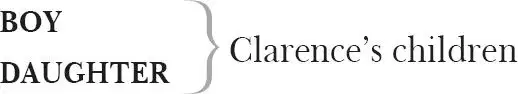

The Tragedy of Richard the Third:
with the Landing of Earl Richmond and the Battle at Bosworth Field
RICHARD , Duke of Gloucester, later King RICHARD III
Duke of CLARENCE , his brother
Duke of BUCKINGHAM
Lord HASTINGS , the Lord Chamberlain
Sir William CATESBY
Sir Richard RATCLIFFE
Lord LOVELL
BRACKENBURY , Lord Lieutenant of the Tower
Lord Stanley, Earl of DERBY (sometimes addressed as Derby and sometimes as Stanley, here given speech prefix Derby)
KING EDWARD IV , Gloucester's older brother
QUEEN ELIZABETH , his wife
PRINCE EDWARD , their older son
Duke of YORK , their younger son
Lord RIVERS , Elizabeth's brother
Lord GREY , Elizabeth's son by her first husband
Marquis of DORSET 1 , his brother
Sir Thomas VAUGHAN
Lady ANNE , widow 2 of Edward, Prince of Wales, later Duchess of Gloucester
QUEEN MARGARET , widow of Henry VI
DUCHESS OF YORK , mother to Gloucester, Clarence, Edward IV

Earl of RICHMOND , later King Henry VII
Earl of OXFORD
Sir JAMES BLUNT
Sir WALTER HERBERT
Sir WILLIAM BRANDON
Duke of NORFOLK
Earl of SURREY
CARDINAL , Archbishop of Canterbury
ARCHBISHOP OF YORK
BISHOP OF ELY
SIR CHRISTOPHER , a priest
Sir John, a PRIEST
Lord MAYOR of London
Three CITIZENS
JAMES TYRRELL
Two MURDERERS
MESSENGERS
KEEPER
PURSUIVANT
PAGE
Ghost of KING HENRY VI
Ghost of EDWARD , his son
Two Bishops, Soldiers, Halberdiers, Gentlemen, Lords, Citizens, Attendants
Act 1
Scene 1 3 / running scene 1
Enter Richard, Duke of Gloucester, solus
RICHARD Now is the winter of our discontent
Made glorious summer by this son of York 4 :
And all the clouds that loured 5 upon our house 6
In the deep bosom of the ocean buried.
Now are our brows bound with victorious wreaths,
Our bruisèd arms 7 hung up for 8 monuments,
Our stern alarums 9 changed to merry meetings,
Our dreadful 10 marches to delightful measures 11 .
Grim-visaged war hath smoothed his wrinkled front 12 ,
And now, instead of mounting barbèd 13 steeds
To fright the souls of fearful 14 adversaries,
He capers 15 nimbly in a lady's chamber 16
To the lascivious pleasing 17 of a lute.
But I, that am not shaped for sportive 18 tricks 19 ,
Nor made to court an amorous looking-glass 20 :
I, that am rudely stamped 21 , and want 22 love's majesty
To strut before a wanton 23 ambling 24 nymph:
I, that am curtailed 25 of this fair proportion,
Cheated of feature 26 by dissembling 27 nature,
Deformed, unfinished, sent before my time 28
Into this breathing world, scarce half made up 29 ,
And that so lamely and unfashionable 30
That dogs bark at me as I halt 31 by them —
Why, I, in this weak piping 32 time of peace,
Have no delight to pass away the time,
Unless to see my shadow in the sun
And descant 33 on mine own deformity.
And therefore, since I cannot prove a lover,
To entertain 34 these fair well-spoken 35 days,
I am determinèd 36 to prove a villain
And hate the idle pleasures of these days.
Plots have I laid, inductions 37 dangerous,
By drunken prophecies, libels and dreams,
To set my brother Clarence and the king
In deadly hate the one against the other.
And if King Edward be as true and just
As I am subtle 38 , false 39 and treacherous,
This day should Clarence closely be mewed up 40 ,
About 41 a prophecy, which says that 'G' 42
Of Edward's heirs the murderer shall be.
Dive, thoughts, down to my soul: here Clarence comes.—
Enter Clarence, guarded, and Brackenbury
Brother, good day. What means this armèd guard
That waits upon 43 your grace?
CLARENCE His majesty,
Tend'ring 44 my person's safety, hath appointed
This conduct 45 to convey me to th'Tower 46 .
RICHARD Upon what cause?
CLARENCE Because my name is George.
RICHARD Alack, my lord, that fault is none of yours.
He should, for that, commit 47 your godfathers 48 .
O, belike 49 his majesty hath some intent
That you should be new-christened 50 in the Tower.
But what's the matter 51 , Clarence, may I know?
CLARENCE Yea, Richard, when I know, but I protest 52
As yet I do not. But, as I can learn,
He hearkens 53 after prophecies and dreams,
And from the cross-row 54 plucks the letter G,
And says a wizard told him that by 'G'
His issue 55 disinherited should be:
And, for 56 my name of George begins with G,
It follows in his thought that I am he.
These, as I learn, and such like toys 57 as these,
Hath moved his highness to commit me now.
RICHARD Why, this it is when men are ruled by women:
'Tis not the king that sends you to the Tower,
My lady Grey 58 his wife, Clarence, 'tis she
That tempts him to this harsh extremity.
Was it not she and that good man of worship 59 ,
Anthony Woodville 60 , her brother there,
That made him send Lord Hastings to the Tower,
From whence this present day he is delivered 61 ?
We are not safe, Clarence, we are not safe.
CLARENCE By heaven, I think there is no man secure
But the queen's kindred and night-walking heralds 62
That trudge betwixt 63 the king and Mistress 64 Shore 65 .
Heard you not what an humble suppliant 66
Lord Hastings was to her, for his delivery 67 ?
RICHARD Humbly complaining 68 to her deity 69
Got my Lord Chamberlain 70 his liberty.
I'll tell you what: I think it is our way,
If we will keep in favour with the king,
To be her men 71 and wear her livery 72 .
The jealous o'erworn 73 widow 74 and herself,
Since that our brother dubbed them 75 gentlewomen,
Are mighty gossips 76 in our monarchy.
BRACKENBURY I beseech your graces both to pardon me:
His majesty hath straitly given in charge 77
That no man shall have private conference,
Of what degree soever 78 , with your brother.
RICHARD Even so, an 79 please your worship, Brackenbury,
You may partake of anything we say.
We speak no treason, man: we say the king
Is wise and virtuous, and his noble queen
Well struck in years 80 , fair 81 and not jealous.
We say that Shore's wife hath a pretty foot,
A cherry lip, a bonny eye, a passing 82 pleasing tongue,
And that the queen's kindred are made gentlefolks.
How say you sir? Can you deny all this?
BRACKENBURY With this, my lord, myself have nought to do.
RICHARD Naught to do with Mistress Shore? I tell thee, fellow,
He that doth naught 83 with her, excepting one,
Were best to do it secretly, alone.
BRACKENBURY What one, my lord?
RICHARD Her husband, knave. Wouldst thou betray me 84 ?
BRACKENBURY I do beseech your grace to pardon me, and withal 85
Forbear 86 your conference with the noble duke.
CLARENCE We know thy charge 87 , Brackenbury, and will obey.
RICHARD We are the queen's abjects 88 , and must obey.—
Brother, farewell. I will unto the king,
And whatsoe'er you will employ me in,
Were it to call King Edward's widow sister,
I will perform it to enfranchise 89 you.
Meantime, this deep disgrace in brotherhood
Touches 90 me deeper than you can imagine.
Embraces him
CLARENCE I know it pleaseth neither of us well.
RICHARD Well, your imprisonment shall not be long.
I will deliver you or else lie for you 91 .
Meantime, have patience.
CLARENCE I must perforce 92 . Farewell.
Exit Clarence [led by Brackenbury and Guards ]
RICHARD Go, tread the path that thou shalt ne'er return.
Simple, plain Clarence, I do love thee so
That I will shortly send thy soul to heaven,
If heaven will take the present 93 at our hands.
But who comes here? The new-delivered 94 Hastings?
Enter Lord Hastings
HASTINGS Good time of day unto my gracious lord.
RICHARD As much unto my good Lord Chamberlain.
Well are you welcome to this open air.
How hath your lordship brooked 95 imprisonment?
HASTINGS With patience, noble lord, as prisoners must.
But I shall live, my lord, to give them thanks 96
That were the cause of my imprisonment.
RICHARD No doubt, no doubt. And so shall Clarence too,
For they that were your enemies are his,
And have prevailed as much on him as you.
HASTINGS More pity that the eagles should be mewed 97 ,
Whiles kites and buzzards 98 play at liberty.
RICHARD What news abroad 99 ?
HASTINGS No news so bad abroad as this at home:
The king is sickly, weak and melancholy,
And his physicians fear him 100 mightily.
RICHARD Now, by Saint John, that news is bad indeed.
O, he hath kept an evil diet 101 long,
And overmuch consumed his royal person.
'Tis very grievous to be thought upon.
Where is he, in his bed?
HASTINGS He is.
RICHARD Go you before, and I will follow you.
Exit Hastings
He cannot live, I hope, and must not die
Till George be packed 102 with post-horse 103 up to heaven.
I'll in to urge his hatred more to Clarence,
With lies well steeled 104 with weighty arguments.
And, if I fail not in my deep 105 intent,
Clarence hath not another day to live:
Which done, God take King Edward to his mercy,
And leave the world for me to bustle 106 in.
For then I'll marry Warwick's youngest daughter 107 .
What though I killed her husband 108 and her father 109 ?
The readiest way to make the wench amends
Is to become her husband and her father:
The which will I, not all so much for love
As for another secret close 110 intent,
By marrying her which I must reach unto 111 .
But yet I run before my horse to market 112 :
Clarence still breathes, Edward still lives and reigns.
When they are gone, then must I count my gains.
Exit
Scene 2 113 / running scene 1 continues
Enter the corpse of Henry the Sixth with [Gentlemen bearing ] halberds 114 to guard it, Lady Anne being the mourner
ANNE Set down, set down your honourable load —
If honour may be shrouded 115 in a hearse 116 —
Whilst I awhile obsequiously 117 lament
Th'untimely fall of virtuous Lancaster 118 .
They set down the coffin
Poor key-cold 119 figure of a holy king,
Pale ashes 120 of the house of Lancaster,
Thou bloodless remnant of that royal blood,
Be it 121 lawful that I invocate 122 thy ghost,
To hear the lamentations of poor Anne,
Wife to thy Edward, to thy slaughtered son,
Stabbed by the selfsame hand that made these wounds.
Lo 123 , in these windows 124 that let forth thy life,
I pour the helpless balm 125 of my poor eyes.
O, cursèd be the hand that made these holes:
Cursed the heart that had the heart to do it:
Cursed the blood that let this blood from hence!
More direful hap 126 betide 127 that hated wretch
That makes us wretched by the death of thee
Than I can wish to wolves, to spiders, toads 128 ,
Or any creeping venomed thing that lives.
If ever he have child, abortive 129 be it,
Prodigious 130 , and untimely brought to light,
Whose ugly and unnatural aspect 131
May fright the hopeful mother at the view,
And that 132 be heir to his unhappiness 133 .
If ever he have wife, let her be made
More miserable by the death of him
Than I am made by my young lord and thee.—
Come, now towards Chertsey 134 with your holy load,
Taken from Paul's 135 to be interrèd there.
They lift the coffin
And still as 136 you are weary of this weight,
Rest you, whiles I lament King Henry's corpse.
Enter Richard, Duke of Gloucester
RICHARD Stay, you that bear the corpse, and set it down.
ANNE What black magician conjures up this fiend,
To stop devoted 137 charitable deeds?
RICHARD Villains, set down the corpse, or, by Saint Paul,
I'll make a corpse of him that disobeys.
GENTLEMAN My lord, stand back, and let the coffin pass.
RICHARD Unmannered dog, stand'st thou when I command.
Advance 138 thy halberd higher than my breast,
Or, by Saint Paul, I'll strike thee to my foot,
And spurn upon 139 thee, beggar, for thy boldness.
They set down the coffin
ANNE What, do you tremble? Are you all afraid?
Alas, I blame you not, for you are mortal,
And mortal eyes cannot endure the devil.—
Avaunt 140 , thou dreadful minister of hell!
Thou hadst but power over his mortal body,
His soul thou canst not have: therefore be gone.
RICHARD Sweet saint, for charity, be not so curst 141 .
ANNE Foul devil, for God's sake, hence 142 , and trouble us not,
For thou hast made the happy earth thy hell,
Filled it with cursing cries and deep exclaims 143 .
If thou delight to view thy heinous deeds,
Behold this pattern 144 of thy butcheries.—
Uncovers the body
O, gentlemen, see, see dead Henry's wounds
Open their congealed mouths and bleed afresh.—
Blush, blush, thou lump of foul deformity,
For 'tis thy presence that exhales 145 this blood 146
From cold and empty veins, where no blood dwells.
Thy deeds, inhuman and unnatural,
Provokes this deluge most unnatural.—
O God, which this blood mad'st, revenge his death!
O earth, which this blood drink'st, revenge his death!
Either heav'n with lightning strike the murd'rer dead,
Or earth gape open wide and eat him quick,
As thou dost swallow up this good king's blood
Which his hell-governed arm hath butcherèd!
RICHARD Lady, you know no rules of charity,
Which renders good for bad, blessings for curses.
ANNE Villain, thou know'st nor law of God nor man:
No beast so 147 fierce but knows some touch of pity.
RICHARD But I know none, and therefore am no beast.
ANNE O, wonderful 148 , when devils tell the truth 149 !
RICHARD More wonderful, when angels are so angry.
Vouchsafe 150 , divine perfection of a woman,
Of these supposèd crimes to give me leave 151 ,
By circumstance 152 but to acquit myself.
ANNE Vouchsafe, defused 153 infection of man,
Of these known evils, but to give me leave,
By circumstance to curse thy cursèd self.
RICHARD Fairer than tongue can name thee, let me have
Some patient leisure 154 to excuse myself.
ANNE Fouler than heart can think thee, thou canst make
No excuse current 155 , but to hang thyself.
RICHARD By such despair 156 , I should accuse myself.
ANNE And by despairing shalt thou stand excused
For doing worthy vengeance on thyself 157 ,
That didst unworthy 158 slaughter upon others.
RICHARD Say that I slew them not.
ANNE Then say they were not slain.
But dead they are, and devilish slave 159 , by thee.
RICHARD I did not kill your husband.
ANNE Why, then he is alive.
RICHARD Nay, he is dead, and slain by Edward's hands.
ANNE In thy foul throat thou liest 160 : Queen Margaret saw
Thy murd'rous falchion 161 smoking in his blood,
The which thou once 162 didst bend against her breast,
But that thy brothers beat aside the point.
RICHARD I was provokèd by her sland'rous tongue,
That laid their guilt upon my guiltless shoulders.
ANNE Thou wast provokèd by thy bloody mind,
That never dream'st on aught 163 but butcheries.
Didst thou not kill this king?
RICHARD I grant ye.
ANNE Dost grant me, hedgehog 164 ? Then, God grant me too
Thou mayst be damnèd for that wicked deed.
O, he was gentle, mild and virtuous!
RICHARD The better for the king of heaven that hath him.
ANNE He is in heaven, where thou shalt never come.
RICHARD Let him thank me, that holp 165 to send him thither,
For he was fitter for that place than earth.
ANNE And thou unfit for any place but hell.
RICHARD Yes, one place else, if you will hear me name it.
ANNE Some dungeon.
RICHARD Your bedchamber 166 .
ANNE Ill rest betide the chamber where thou liest.
RICHARD So will it, madam, till I lie with you.
ANNE I hope so 167 .
RICHARD I know so. But, gentle Lady Anne,
To leave this keen 168 encounter of our wits 169 ,
And fall something into a slower method:
Is not the causer of the timeless 170 deaths
Of these Plantagenets, Henry and Edward,
As blameful as the executioner?
ANNE Thou wast the cause and most accursed effect 171 .
RICHARD Your beauty was the cause of that effect.
Your beauty, that did haunt me in my sleep
To undertake the death of all the world,
So I might live one hour in your sweet bosom.
ANNE If I thought that, I tell thee, homicide 172 ,
These nails should rend that beauty from my cheeks.
RICHARD These eyes could never endure that beauty's wreck.
You should not blemish it, if I stood by:
As all the world is cheerèd by the sun,
So I by that: it is my day, my life.
ANNE Black night o'ershade thy day, and death thy life.
RICHARD Curse not thyself, fair creature: thou art both 173 .
ANNE I would 174 I were, to be revenged on thee.
RICHARD It is a quarrel most unnatural
To be revenged on him that loveth thee.
ANNE It is a quarrel just and reasonable
To be revenged on him that killed my husband.
RICHARD He that bereft thee, lady, of thy husband,
Did it to help thee to a better husband.
ANNE His better doth not breathe upon the earth.
RICHARD He lives 175 that loves thee better than he could.
ANNE Name him.
RICHARD Plantagenet 176 .
ANNE Why, that was he.
RICHARD The selfsame name, but one of better nature.
ANNE Where is he?
RICHARD Here.
Spits at him
Why dost thou spit at me?
ANNE Would it were mortal poison, for thy sake.
RICHARD Never came poison from so sweet a place.
ANNE Never hung poison on a fouler toad.
Out of my sight, thou dost infect mine eyes.
RICHARD Thine eyes, sweet lady, have infected mine 177 .
ANNE Would they were basilisks 178 , to strike thee dead.
RICHARD I would they were, that I might die 179 at once,
For now they kill me with a living death.
Those eyes of thine from mine have drawn salt tears,
Shamed their aspects 180 with store of childish drops:
These eyes, which never shed remorseful tear —
No, when 181 my father York and Edward wept,
To hear the piteous moan that Rutland 182 made
When black-faced 183 Clifford shook his sword at him,
Nor when thy warlike father 184 , like a child,
Told the sad story of my father's death,
And twenty times made pause to sob and weep,
That 185 all the standers-by had wet their cheeks
Like trees bedashed 186 with rain: in that sad time,
My manly eyes did scorn an humble 187 tear.
And what these sorrows could not thence exhale 188 ,
Thy beauty hath, and made them blind with weeping.
I never sued 189 to friend nor enemy:
My tongue could never learn sweet smoothing 190 word.
But now thy beauty is proposed my fee 191 ,
My proud heart sues, and prompts my tongue to speak.
She looks scornfully at him
Teach not thy lip such scorn, for it was made
For kissing, lady, not for such contempt.
If thy revengeful heart cannot forgive,
Lo, here I lend thee this sharp-pointed sword,
Gives her his sword
Which if thou please to hide in this true breast.
↓ Kneels ↓
And let the soul forth that adoreth thee,
I lay it naked to the deadly stroke
And humbly beg the death upon my knee.
He lays his breast open 192 : she offers 193 set me on 194 at [it ] with his sword
Nay, do not pause, for I did kill King Henry —
But 'twas thy beauty that provokèd me.
Nay, now dispatch: 'twas I that stabbed young Edward —
But 'twas thy heavenly face that set me on.
She falls 195 the sword
Take up the sword again, or take up me 196 .
ANNE Arise, dissembler 197 . Though I wish thy death,
I will not be thy executioner.
RICHARD Then bid me kill myself, and I will do it.
Takes his sword back
ANNE I have already.
RICHARD That was in thy rage:
Speak it again, and even with the word,
This hand, which for thy love did kill thy love,
Shall for thy love kill a far truer love 198 .
To both their deaths shalt thou be accessory.
ANNE I would I knew thy heart.
RICHARD 'Tis figured in 199 my tongue.
ANNE I fear me both are false.
RICHARD Then never man was true.
ANNE Well, well, put up your sword.
RICHARD Say, then, my peace is made.
ANNE That shalt thou know hereafter.
RICHARD But shall I live in hope?
ANNE All men, I hope, live so.
RICHARD Vouchsafe to wear this ring.
Puts a ring on her
Look how my ring encompasseth thy finger.
Even so 200 thy breast encloseth my poor heart:
Wear both of them, for both of them are thine.
And if thy poor devoted servant may
But beg one favour at thy gracious hand,
Thou dost confirm his happiness for ever.
ANNE What is it?
RICHARD That it may please you leave these sad designs
To him that hath most cause to be a mourner,
And presently 201 repair to Crosby House 202 ,
Where after I have solemnly interred
At Chertsey monast'ry this noble king,
And wet his grave with my repentant tears —
I will with all expedient 203 duty see you.
For divers 204 unknown 205 reasons, I beseech you,
Grant me this boon 206 .
ANNE With all my heart, and much it joys me too,
To see you are become so penitent.—
Tressell and Berkeley 207 , go along with me.
RICHARD Bid me farewell.
ANNE 'Tis more than you deserve,
But since you teach me how to flatter you,
Imagine I have said farewell already.
Exeunt two [Tressell and Berkeley ] with Anne
GENTLEMEN Towards Chertsey, noble lord?
RICHARD No, to Whitefriars 208 . There attend my coming.
Exit corpse [borne by the other gentlemen ]
Was ever woman in this humour 209 wooed?
Was ever woman in this humour won?
I'll have her, but I will not keep her long.
What? I, that killed her husband and his father,
To take her in her heart's extremest hate,
With curses in her mouth, tears in her eyes,
The bleeding witness 210 of my hatred by 211 ,
Having God, her conscience, and these bars 212 against me,
And I no friends to back my suit 213 withal 214 ,
But the plain devil and dissembling looks?
And yet to win her, all the world to nothing 215 ?
Ha!
Hath she forgot already that brave 216 prince,
Edward, her lord, whom I, some three months since,
Stabbed in my angry mood 217 at Tewkesbury 218 ?
A sweeter and a lovelier gentleman,
Framed in the prodigality of nature 219 ,
Young, valiant, wise, and, no doubt, right royal 220 ,
The spacious world cannot again afford.
And will she yet abase her eyes on me,
That cropped the golden prime 221 of this sweet prince,
And made her widow to a woeful bed?
On me, whose all not equals Edward's moiety 222 ?
On me, that halt 223 s and am misshapen 224 thus?
My dukedom to a beggarly denier 225 !
I do mistake my person all this while.
Upon my life, she finds, although I cannot,
Myself to be a marv'llous proper 226 man.
I'll be at charges for 227 a looking-glass,
And entertain 228 a score or two of 229 tailors
To study fashions to adorn my body.
Since I am crept in 230 favour with myself,
I will maintain it with some little cost.
But first I'll turn yon fellow in his grave,
And then return lamenting to my love.
Shine out, fair sun, till I have bought a glass 231 ,
That I may see my shadow 232 as I pass.
Exit
Scene 3 233 / running scene 2
Enter [Elizabeth ] the Queen Mother, Lord Rivers and Lord Grey
RIVERS Have patience, madam. There's no doubt his majesty
Will soon recover his accustomed health.
GREY In that you brook it ill 234 , it makes him worse:
To Queen Elizabeth
Therefore, for God's sake, entertain good comfort 235 ,
And cheer his grace with quick and merry eyes.
QUEEN ELIZABETH If he were dead, what would betide on 236 me?
GREY No other harm but loss of such a lord.
QUEEN ELIZABETH The loss of such a lord includes 237 all harms.
GREY The heavens have blessed you with a goodly 238 son
To be your comforter when he is gone.
QUEEN ELIZABETH Ah, he is young, and his minority
Is put unto the trust of Richard Gloucester,
A man that loves not me, nor none of you.
RIVERS Is it concluded 239 he shall be Protector 240 ?
QUEEN ELIZABETH It is determined, not concluded yet:
But so it must be, if the king miscarry 241 .
Enter Buckingham and [Stanley, Earl of ] Derby
GREY Here come the lords of Buckingham and Derby.
BUCKINGHAM Good time of day unto your royal grace.
DERBY God make your majesty joyful as you have been.
QUEEN ELIZABETH The Countess Richmond 242 , good my 243 lord of Derby,
To your good prayer will scarcely say amen.
Yet, Derby, notwithstanding she's your wife,
And loves not me, be you, good lord, assured
I hate not you for her proud arrogance.
DERBY I do beseech you either not believe
The envious 244 slanders of her false accusers,
Or, if she be accused on true report,
Bear with her weakness, which I think proceeds
From wayward 245 sickness and no grounded malice.
QUEEN ELIZABETH Saw you the king today, my lord of Derby?
DERBY But now the Duke of Buckingham and I
Are come from visiting his majesty.
QUEEN ELIZABETH What likelihood of his amendment, lords?
BUCKINGHAM Madam, good hope: his grace speaks cheerfully.
QUEEN ELIZABETH God grant him health. Did you confer with him?
BUCKINGHAM Ay, madam. He desires to make atonement 246
Between the Duke of Gloucester and your brothers 247 ,
And between them and my Lord Chamberlain,
And sent to warn 248 them to his royal presence.
QUEEN ELIZABETH Would all were well! But that will never be.
I fear our happiness 249 is at the height.
Enter Richard [with Hastings and Dorset ]
RICHARD They do me wrong, and I will not endure it.
Who is it that complains unto the king
That I, forsooth 250 , am stern 251 and love them not?
By holy Paul, they love his grace but lightly 252
That fill his ears with such dissentious 253 rumours.
Because I cannot flatter and look fair 254 ,
Smile in men's faces, smooth 255 , deceive and cog 256 ,
Duck with French nods 257 and apish 258 courtesy,
I must be held a rancorous enemy.
Cannot a plain 259 man live and think no harm,
But thus his simple truth must be abused
By silken 260 , sly, insinuating jacks 261 ?
GREY To who in all this presence 262 speaks your grace?
RICHARD To thee, that hast nor 263 honesty nor grace 264 .
When have I injured thee? When done thee wrong?
Or thee? Or thee? Or any of your faction?
A plague upon you all! His royal grace —
Whom God preserve better than you would wish —
Cannot be quiet scarce a breathing-while 265 ,
But you must trouble him with lewd 266 complaints.
QUEEN ELIZABETH Brother of Gloucester, you mistake the matter.
The king, on his own royal disposition,
And not provoked by any suitor else,
Aiming, belike 267 , at your interior hatred,
That in your outward action shows itself
Against my children, brothers, and myself,
Makes him to send 268 , that he may learn the ground.
RICHARD I cannot tell. The world is grown so bad
That wrens 269 make prey where eagles dare not perch.
Since every Jack became a gentleman,
There's many a gentle person made a jack.
QUEEN ELIZABETH Come, come, we know your meaning, brother Gloucester:
You envy my advancement and my friends 270 '.
God grant we never may have need of you.
RICHARD Meantime, God grants that I have need of you.
Our brother 271 is imprisoned by your means,
Myself disgraced, and the nobility
Held in contempt, while great promotions
Are daily given to ennoble those
That scarce some two days since were worth a noble 272 .
QUEEN ELIZABETH By him that raised me to this careful 273 height
From that contented hap 274 which I enjoyed,
I never did incense his majesty
Against the Duke of Clarence, but have been
An earnest advocate to plead for him.
My lord, you do me shameful injury,
Falsely to draw me 275 in these vile suspects 276 .
RICHARD You may deny that you were not the mean
Of my lord Hastings' late 277 imprisonment.
RIVERS She may, my lord, for—
RICHARD She may, Lord Rivers? Why, who knows not so?
She may do more, sir, than denying that.
She may help you to many fair preferments 278 ,
And then deny her aiding hand therein,
And lay those honours on your high desert 279 .
What may she not? She may, ay, marry 280 , may she—
RIVERS What, marry, may she?
RICHARD What, marry, may she? Marry with a king,
A bachelor and a handsome stripling 281 too.
Iwis 282 your grandam 283 had a worser match.
QUEEN ELIZABETH My lord of Gloucester, I have too long borne
Your blunt upbraidings and your bitter scoffs.
By heaven, I will acquaint his majesty
Of those gross 284 taunts that oft I have endured.
I had rather be a country servant-maid
Than a great queen, with this condition,
To be so bated, scorned and stormèd at.
Enter old Queen Margaret 285 [unseen by the others ]
Small joy have I in being England's queen.
QUEEN MARGARET And lessened be that small, God, I beseech him!
Speaks aside throughout
Thy honour, state 286 and seat 287 is due to me.
RICHARD What? Threat 288 you me with telling of the king?
To Queen Elizabeth
I will avouch't 289 in presence of the king.
I dare adventure 290 to be sent to th'Tower.
'Tis time to speak, my pains 291 are quite forgot.
QUEEN MARGARET Out 292 , devil! I do remember them too well:
Thou kill'dst my husband Henry in the Tower,
And Edward, my poor son, at Tewkesbury.
RICHARD Ere 293 you were queen, ay, or your husband king,
To Queen Elizabeth
I was a packhorse 294 in his great affairs,
A weeder-out of his proud 295 adversaries,
A liberal rewarder of his friends.
To royalize his blood, I spent mine own.
QUEEN MARGARET Ay, and much better blood than his or thine.
RICHARD In all which time you and your husband Grey
Were factious for 296 the House of Lancaster.—
And, Rivers, so were you.— Was not your husband
In Margaret's battle 297 at St Albans slain 298 ?
Let me put in your minds, if you forget,
What you have been ere this 299 , and what you are:
Withal 300 , what I have been, and what I am.
QUEEN MARGARET A murd'rous villain, and so still thou art.
RICHARD Poor Clarence did forsake his father 301 , Warwick 302 ,
Ay, and forswore himself 303 — which Jesu pardon! —
QUEEN MARGARET Which God revenge!
RICHARD To fight on Edward's party for the crown.
And for his meed 304 , poor lord, he is mewed up.
I would to God my heart were flint, like Edward's,
Or Edward's soft and pitiful 305 , like mine.
I am too childish-foolish 306 for this world.
QUEEN MARGARET Hie 307 thee to hell for shame, and leave this world,
Thou cacodemon 308 ! There thy kingdom is.
RIVERS My lord of Gloucester, in those busy days
Which here you urge 309 to prove us enemies,
We followed then our lord, our sovereign king.
So should we you, if you should be our king.
RICHARD If I should be? I had rather be a pedlar.
Far be it from my heart, the thought thereof.
QUEEN ELIZABETH As little joy, my lord, as you suppose
You should enjoy were you this country's king,
As little joy you may suppose in me,
That I enjoy, being the queen thereof.
QUEEN MARGARET A little joy enjoys the queen thereof,
For I am she, and altogether joyless.
I can no longer hold me patient.—
Comes forward
Hear me, you wrangling pirates, that fall out
In sharing that which you have pilled 310 from me.
Which of you trembles not that looks on me?
If not, that I am queen, you bow like subjects,
Yet that, by you deposed, you quake like rebels 311 .
Ah, gentle 312 villain 313 , do not turn away.
To Richard
RICHARD Foul wrinkled witch, what mak'st thou 314 in my sight?
QUEEN MARGARET But repetition of 315 what thou hast marred 316 ,
That will I make 317 before I let thee go.
RICHARD Wert thou not banishèd on pain of death?
QUEEN MARGARET I was, but I do find more pain in banishment
Than death can yield me here by my abode 318 .
A husband and a son thou ow'st to me,
And thou 319 a kingdom; all of you allegiance.
The sorrow that I have, by right is yours,
And all the pleasures you usurp are mine.
RICHARD The curse my noble father laid on thee,
When thou didst crown his warlike brows with paper 320
And with thy scorns drew'st rivers from his eyes,
And then, to dry them, gav'st the duke a clout 321
Steeped in the faultless blood of pretty 322 Rutland 323 —
His curses then, from bitterness of soul
Denounced against thee, are all fall'n upon thee,
And God, not we, hath plagued 324 thy bloody deed.
QUEEN ELIZABETH So just is God, to right the innocent.
HASTINGS O, 'twas the foulest deed to slay that babe 325 ,
And the most merciless that e'er was heard of!
RIVERS Tyrants themselves wept when it was reported.
DORSET No man but prophesied 326 revenge for it.
BUCKINGHAM Northumberland, then present, wept to see it.
QUEEN MARGARET What? Were you snarling all before I came,
Ready to catch 327 each other by the throat,
And turn you all your hatred now on me?
Did York's dread curse prevail so much with heaven?
That Henry's death, my lovely Edward's death,
Their kingdom's loss, my woeful banishment,
Should all but answer for 328 that peevish 329 brat?
Can curses pierce the clouds and enter heaven?
Why then give way, dull 330 clouds, to my quick 331 curses.
Though not by war, by surfeit 332 die your king,
As ours by murder, to make him a king.—
Edward thy son, that now is Prince of Wales,
To Elizabeth
For Edward our son, that was Prince of Wales,
Die in his youth by like 333 untimely violence!
Thyself a queen, for me that was a queen,
Outlive thy glory, like my wretched self!
Long mayst thou live to wail thy children's death,
And see another, as I see thee now,
Decked 334 in thy rights, as thou art stalled 335 in mine.
Long die thy happy days before thy death,
And, after many lengthened hours of grief,
Die neither mother, wife, nor England's queen.—
Rivers and Dorset, you were standers-by 336 ,
And so wast thou, Lord Hastings, when my son
Was stabbed with bloody daggers: God, I pray him,
That none of you may live his natural age,
But by some unlooked 337 accident cut off.
RICHARD Have done thy charm 338 , thou hateful withered hag 339 .
QUEEN MARGARET And leave out thee? Stay, dog, for thou shalt hear me.
If heaven have any grievous plague in store
Exceeding those that I can wish upon thee,
O, let them 340 keep it till thy sins be ripe,
And then hurl down their indignation
On thee, the troubler of the poor world's peace.
The worm of conscience still 341 begnaw 342 thy soul.
Thy friends suspect for 343 traitors while thou liv'st,
And take deep traitors for thy dearest friends.
No sleep close up that deadly 344 eye of thine,
Unless it be while some tormenting dream
Affrights thee with a hell of ugly devils.
Thou elvish-marked 345 , abortive 346 , rooting hog 347 ,
Thou that wast sealed in thy nativity 348
The slave of nature 349 and the son of hell.
Thou slander 350 of thy heavy 351 mother's womb,
Thou loathèd issue 352 of thy father's loins,
Thou rag 353 of honour, thou detested—
RICHARD Margaret 354 .
QUEEN MARGARET Richard.
RICHARD Ha?
QUEEN MARGARET I call thee not.
RICHARD I cry thee mercy 355 looked for 356 then, for I did think
That thou hadst called me all these bitter names.
QUEEN MARGARET Why, so I did, but looked for no reply.
O, let me make the period 357 to my curse.
RICHARD 'Tis done by me, and ends in 'Margaret'.
QUEEN ELIZABETH Thus have you breathed your curse against yourself.
QUEEN MARGARET Poor painted 358 queen, vain flourish 359 of my fortune 360 .
Why strew'st thou sugar on that bottled 361 spider,
Whose deadly web ensnareth thee about?
Fool, fool, thou whet'st 362 a knife to kill thyself.
The day will come that thou shalt wish for me
To help thee curse this poisonous bunch-backed 363 toad.
HASTINGS False-boding 364 woman, end thy frantic 365 curse,
Lest to thy harm thou move our patience.
QUEEN MARGARET Foul shame upon you! You have all moved mine.
RIVERS Were you well served 366 , you would be taught your duty.
QUEEN MARGARET To serve me well, you all should do me duty 367 ,
Teach me to be your queen, and you my subjects.
O, serve me well, and teach yourselves that duty.
DORSET Dispute not with her, she is lunatic.
QUEEN MARGARET Peace, Master Marquis 368 , you are malapert 369 :
Your fire-new 370 stamp of honour is scarce current 371 .
O, that your young nobility 372 could judge
What 'twere to lose it, and be miserable.
They that stand high have many blasts to shake them,
And if they fall, they dash themselves to pieces.
RICHARD Good counsel, marry. Learn it, learn it, marquis.
DORSET It touches you, my lord, as much as me.
RICHARD Ay, and much more. But I was born so high 373 ,
Our eyrie 374 buildeth in the cedar's top,
And dallies with 375 the wind and scorns the sun 376 .
QUEEN MARGARET And turns the sun 377 to shade. Alas, alas!
Witness my son, now in the shade of death,
Whose bright out-shining beams thy cloudy wrath
Hath in eternal darkness folded up.
Your eyrie buildeth in our eyrie's nest.
O God, that see'st it, do not suffer 378 it.
As it is won with blood, lost be it so!
BUCKINGHAM Peace, peace, for shame, if not for charity.
QUEEN MARGARET Urge neither charity nor shame to me:
Uncharitably with me have you dealt,
And shamefully my hopes by you are butchered.
My charity 379 is outrage 380 , life my shame 381 ,
And in that shame still 382 live my sorrow's rage.
BUCKINGHAM Have done, have done.
QUEEN MARGARET O princely Buckingham, I'll kiss thy hand
In sign of league and amity with thee.
Now fair 383 befall thee and thy noble house.
Thy garments are not spotted with our blood,
Nor thou within the compass 384 of my curse.
BUCKINGHAM Nor no one here, for curses never pass 385
The lips of those that breathe them in the air.
QUEEN MARGARET I will not think but 386 they ascend the sky,
And there awake God's gentle-sleeping peace.
O Buckingham, take heed of yonder dog:
Look when 387 he fawns, he bites; and when he bites,
His venom 388 tooth will rankle 389 to the death.
Have not to do with him, beware of him.
Sin, death and hell have set their marks 390 on him,
And all their ministers attend on him.
RICHARD What doth she say, my lord of Buckingham?
BUCKINGHAM Nothing that I respect 391 , my gracious lord.
QUEEN MARGARET What, dost thou scorn me for my gentle counsel?
And soothe 392 the devil that I warn thee from?
O, but remember this another day,
When he shall split thy very heart with sorrow,
And say poor Margaret was a prophetess.—
Live each of you the subjects to his hate,
And he to yours, and all of you to God's.
Exit
BUCKINGHAM My hair doth stand on end to hear her curses.
RIVERS And so doth mine. I muse why she's at liberty.
RICHARD I cannot blame her. By God's holy mother,
She hath had too much wrong, and I repent
My part thereof that I have done to her.
QUEEN ELIZABETH I never did her any, to my knowledge.
RICHARD Yet you have all the vantage 393 of her wrong 394 .
I was too hot 395 to do somebody good 396 ,
That is too cold 397 in thinking of it now.
Marry, as for Clarence, he is well repaid:
He is franked up to fatting 398 for his pains —
God pardon them that are the cause thereof!
RIVERS A virtuous and a Christian-like conclusion,
To pray for them that have done scathe 399 to us.
RICHARD So do I ever, being well 400 advised.—
For had I cursed now, I had cursed myself.
Speaks to himself
Enter Catesby
CATESBY Madam, his majesty doth call for you,
And for your grace, and yours, my gracious lord.
QUEEN ELIZABETH Catesby, I come. Lords, will you go with me?
RIVERS We wait upon 401 your grace.
Exeunt all but [Richard of ] Gloucester
RICHARD I do the wrong, and first begin to brawl.
The secret mischiefs 402 that I set abroach 403
I lay unto the grievous charge of 404 others.
Clarence, who I indeed have cast in darkness 405 ,
I do beweep 406 to many simple gulls 407 —
Namely, to Derby, Hastings, Buckingham —
And tell them 'tis the queen and her allies 408
That stir 409 the king against the duke my brother.
Now they believe it, and withal whet 410 me
To be revenged on Rivers, Dorset, Grey.
But then I sigh, and with a piece of scripture,
Tell them that God bids us do good for evil:
And thus I clothe my naked villainy
With odd old ends 411 stol'n forth of holy writ,
And seem a saint when most I play the devil.
Enter two Murderers
But, soft, here come my executioners.—
How now, my hardy 412 , stout-resolvèd mates,
Are you now going to dispatch 413 this thing?
FIRST MURDERER We are, my lord, and come to have the warrant
That we may be admitted where he is.
RICHARD Well thought upon. I have it here about me.
Gives the warrant
When you have done, repair 414 to Crosby Place.
But, sirs, be sudden 415 in the execution,
Withal obdurate 416 , do not hear him plead;
For Clarence is well-spoken 417 , and perhaps
May move your hearts to pity if you mark 418 him.
FIRST MURDERER Tut, tut! My lord, we will not stand to prate 419 :
Talkers are no good doers. Be assured
We go to use our hands and not our tongues.
RICHARD Your eyes drop millstones 420 when fools' eyes fall 421 tears.
I like you, lads. About your business straight 422 .
Go, go, dispatch.
FIRST MURDERER We will, my noble lord.
[Exeunt ]
Scene 4 423 / running scene 3
Enter Clarence and Keeper 424
KEEPER Why looks your grace so heavily 425 today?
CLARENCE O, I have passed a miserable night,
So full of fearful dreams, of ugly sights,
That, as I am a Christian faithful man,
I would not spend 426 another such a night,
Though 'twere 427 to buy a world of happy days,
So full of dismal 428 terror was the time.
KEEPER What was your dream, my lord? I pray you tell me.
CLARENCE Methoughts that I had broken from the Tower,
And was embarked to cross to Burgundy,
And in my company my brother Gloucester,
Who from my cabin tempted me to walk
Upon the hatches 429 : there we looked toward England,
And cited up 430 a thousand heavy times,
During the wars of York and Lancaster
That had befall'n us. As we paced along
Upon the giddy 431 footing of the hatches,
Methought that Gloucester stumbled, and in falling
Struck me, that thought to stay 432 him, overboard,
Into the tumbling billows of the main 433 .
O lord, methought, what pain it was to drown!
What dreadful noise of water in mine ears,
What sights of ugly death within mine eyes.
Methoughts I saw a thousand fearful wrecks:
A thousand men that fishes gnawed upon:
Wedges of gold, great anchors, heaps of pearl,
Inestimable 434 stones, unvalued 435 jewels,
All scattered in the bottom of the sea.
Some lay in dead men's skulls, and in the holes
Where eyes did once inhabit, there were crept,
As 'twere in scorn of eyes, reflecting gems,
That wooed the slimy bottom of the deep,
And mocked the dead bones that lay scattered by.
KEEPER Had you such leisure in the time of death
To gaze upon these secrets of the deep?
CLARENCE Methought I had, and often did I strive
To yield the ghost 436 . But still the envious flood 437
Stopped in 438 my soul, and would not let it forth
To find the empty, vast 439 and wand'ring air,
But smothered it within my panting bulk 440 ,
Which almost burst to belch it in the sea.
KEEPER Awaked you not in this sore 441 agony?
CLARENCE No, no, my dream was lengthened after life.
O, then began the tempest to my soul,
I passed, methought, the melancholy flood 442 ,
With that sour ferryman 443 which poets write of,
Unto the kingdom of perpetual night 444 .
The first that there did greet my stranger 445 soul,
Was my great father-in-law, renownèd Warwick,
Who spake aloud, 'What scourge for perjury 446
Can this dark monarchy 447 afford 448 false Clarence?'
And so he vanished. Then came wand'ring by
A shadow 449 like an angel, with bright hair
Dabbled in blood, and he shrieked 450 out aloud,
'Clarence is come: false, fleeting 451 , perjured Clarence,
That stabbed me in the field 452 by Tewkesbury.
Seize on him, Furies 453 , take him unto torment!'
With that, methought, a legion 454 of foul fiends
Environed 455 me, and howlèd in mine ears
Such hideous cries, that with the very noise
I trembling waked, and for a season 456 after
Could not believe but that I was in hell,
Such terrible impression made the dream.
KEEPER No marvel, lord, though 457 it affrighted you,
I am afraid, methinks, to hear you tell it.
CLARENCE Ah, keeper, keeper, I have done these things,
That now give evidence against my soul,
For Edward's sake, and see how he requites 458 me.
O God! If my deep prayers cannot appease thee,
But thou wilt be avenged on my misdeeds,
Yet execute thy wrath in me alone,
O, spare my guiltless wife and my poor children.
Keeper, I prithee 459 sit by me awhile.
My soul is heavy 460 , and I fain would sleep.
KEEPER I will, my lord. God give your grace good rest.
Clarence sleeps
Enter Brackenbury, the Lieutenant
BRACKENBURY Sorrow breaks 461 seasons 462 and reposing hours 463 ,
Makes the night morning, and the noontide 464 night.
Princes have but their titles for 465 their glories,
An outward honour for 466 an inward toil,
And, for 467 unfelt imaginations 468 ,
They often feel a world of restless cares 469 :
So that between their titles and low name 470 ,
There's nothing differs but the outward fame 471 .
Enter [the ] two Murderers
FIRST MURDERER Ho, who's here?
BRACKENBURY What wouldst thou, fellow? And how cam'st thou hither?
SECOND MURDERER I would speak with Clarence, and I came hither on my legs.
BRACKENBURY What, so brief?
FIRST MURDERER 'Tis better, sir, than to be tedious. Let him see our commission, and talk no more.
Gives Brackenbury a paper
BRACKENBURY I am in this commanded to deliver
Reads
The noble Duke of Clarence to your hands.
I will not reason 472 what is meant hereby,
Because I will 473 be guiltless from the meaning.
There lies the duke asleep, and there the keys.
I'll to the king and signify to 474 him
That thus I have resigned to you my charge.
Exit
FIRST MURDERER You may, sir, 'tis a point of wisdom. Fare you well.
SECOND MURDERER What, shall we stab him as he sleeps?
FIRST MURDERER No: he'll say 'twas done cowardly, when he wakes.
SECOND MURDERER Why he shall never wake until the great judgement day.
FIRST MURDERER Why, then he'll say we stabbed him sleeping.
SECOND MURDERER The urging of 475 that word 'judgement' hath bred a kind of remorse in me.
FIRST MURDERER What? Art thou afraid?
SECOND MURDERER Not to kill him, having a warrant, but to be damned for killinghim, from the which no warrant can defend me.
FIRST MURDERER I thought thou hadst been resolute.
SECOND MURDERER So I am, to let him live.
FIRST MURDERER I'll back to the Duke of Gloucester and tell him so.
SECOND MURDERER Nay, I prithee stay 476 a little. I hope this passionate humour 477
of mine will change. It was wont to hold me 478 but while one tells twenty 479 .
They pause or count to twenty
FIRST MURDERER How dost thou feel thyself now?
SECOND MURDERER Some certain dregs of conscience are yet within me.
FIRST MURDERER Remember our reward, when the deed's done.
SECOND MURDERER Come, he dies. I had forgot the reward.
FIRST MURDERER Where's thy conscience now?
SECOND MURDERER O, in the Duke of Gloucester's purse.
FIRST MURDERER When he opens his purse to give us our reward, thy conscience
flies out.
SECOND MURDERER 'Tis no matter, let it go. There's few or none will entertain 480 it.
FIRST MURDERER What if it come to thee again?
SECOND MURDERER I'll not meddle with it: it makes a man a coward. A man cannot steal, but it accuseth him: a man cannot swear, but it checks 481 him: a man cannot lie 482 with his neighbour's wife, but it detects him. 'Tis a blushing shamefaced spirit that mutinies in a man's bosom: it fills a man full of obstacles: it made me once restore 483 a purse of gold that, by chance, I found: it beggars any man that keeps 484 it: it is turned out of towns and cities for 485 a dangerous thing: and every man that means to live well 486 endeavours to trust to himself and live without it.
FIRST MURDERER 'Tis even now at my elbow, persuading me not to kill the duke.
SECOND MURDERER Take the devil in thy mind, and believe him 487 not: he would insinuate 488 with thee but to make thee sigh.
FIRST MURDERER I am strong-framed, he cannot prevail with me.
SECOND MURDERER Spoke like a tall 489 man that respects thy reputation. Come, shall we fall to work?
FIRST MURDERER Take 490 him on the costard 491 with the hilts of thy sword, and then throw him into the malmsey-butt 492 in the next room.
SECOND MURDERER O, excellent device 493 ; and make a sop 494 of him.
FIRST MURDERER Soft, he wakes.
SECOND MURDERER Strike!
FIRST MURDERER No, we'll reason 495 with him.
CLARENCE Where art thou, keeper? Give me a cup of wine.
SECOND MURDERER You shall have wine enough, my lord, anon 496 .
CLARENCE In God's name, what art thou?
FIRST MURDERER A man, as you are.
CLARENCE But not, as I am, royal.
FIRST MURDERER Nor you, as we are, loyal.
CLARENCE Thy voice is thunder, but thy looks are humble.
FIRST MURDERER My voice is now the king's, my looks mine own.
CLARENCE How darkly and how deadly dost thou speak!
Your eyes do menace me: why look you pale?
Who sent you hither? Wherefore 497 do you come?
SECOND MURDERER To, to, to—
CLARENCE To murder me?
BOTH Ay, ay.
CLARENCE You scarcely have the hearts to tell me so,
And therefore cannot have the hearts to do it.
Wherein, my friends, have I offended you?
FIRST MURDERER Offended us you have not, but the king.
CLARENCE I shall be reconciled to him again.
SECOND MURDERER Never, my lord: therefore prepare to die.
CLARENCE Are you drawn forth 498 among a world of men
To slay the innocent? What is my offence?
Where is the evidence that doth accuse me?
What lawful quest 499 have given their verdict up
Unto the frowning judge? Or who pronounced
The bitter sentence of poor Clarence' death,
Before I be convict 500 by course of law?
To threaten me with death is most unlawful.
I charge 501 you, as you hope for any goodness
That you depart and lay no hands on me.
The deed you undertake is damnable.
FIRST MURDERER What we will do, we do upon command.
SECOND MURDERER And he that hath commanded is our king.
CLARENCE Erroneous 502 vassals 503 , the great king of kings 504
Hath in the table of his law 505 commanded
That thou shalt do no murder 506 . Will you then
Spurn at 507 his edict and fulfil a man's?
Take heed, for he holds vengeance in his hand,
To hurl upon their heads that break his law.
SECOND MURDERER And that same vengeance doth he hurl on thee,
For false forswearing 508 and for murder, too.
Thou didst receive the sacrament 509 to fight
In quarrel of 510 the house of Lancaster.
FIRST MURDERER And, like a traitor to the name of God,
Didst break that vow, and with thy treacherous blade
Unripp'dst 511 the bowels 512 of thy sovereign's son 513 .
SECOND MURDERER Whom thou wast sworn to cherish and defend.
FIRST MURDERER How canst thou urge God's dreadful 514 law to us,
When thou hast broke it in such dear 515 degree?
CLARENCE Alas, for whose sake did I that ill deed?
For Edward, for my brother, for his sake.
He sends you not to murder me for this,
For in that sin he is as deep as I.
If God will be avengèd for the deed,
O, know you yet he doth it publicly.
Take not the quarrel 516 from his powerful arm:
He needs no indirect 517 or lawless course
To cut off 518 those that have offended him.
FIRST MURDERER Who made thee, then, a bloody 519 minister,
When gallant-springing 520 brave Plantagenet,
That princely novice 521 , was struck dead by thee?
CLARENCE My brother's love 522 , the devil and my rage.
FIRST MURDERER Thy brother's love, our duty and thy faults,
Provoke us hither now to slaughter thee.
CLARENCE If you do love my brother, hate not me.
I am his brother and I love him well.
If you are hired for meed 523 , go back again,
And I will send you to my brother Gloucester,
Who shall reward you better for my life
Than Edward will for tidings of my death.
SECOND MURDERER You are deceived, your brother Gloucester hates you.
CLARENCE O no, he loves me, and he holds me dear.
Go you to him from me.
FIRST MURDERER Ay, so we will.
CLARENCE Tell him, when that our princely father York
Blessed his three sons with his victorious arm,
He little thought of this divided friendship 524 .
Bid Gloucester think on this, and he will weep.
FIRST MURDERER Ay, millstones, as he lessoned 525 us to weep.
CLARENCE O, do not slander him, for he is kind 526 .
FIRST MURDERER Right, as snow in harvest.
Come, you deceive yourself:
'Tis he that sends us to destroy you here.
CLARENCE It cannot be, for he bewept my fortune,
And hugged me in his arms, and swore, with sobs
That he would labour my delivery 527 .
FIRST MURDERER Why, so he doth, when he delivers you
From this earth's thraldom 528 to the joys of heaven.
SECOND MURDERER Make peace with God, for you must die, my lord.
CLARENCE Have you that holy feeling 529 in your souls
To counsel me to make my peace with God,
And are you yet to your own souls so blind
That you will war with God by murd'ring me?
O, sirs, consider, they that set you on
To do this deed will hate you for the deed.
SECOND MURDERER What shall we do?
To First Murderer
CLARENCE Relent, and save your souls.
Which of you, if you were a prince's son,
Being pent 530 from liberty, as I am now,
If two such murderers as yourselves came to you,
Would not entreat for life as you would beg,
Were you in my distress?
FIRST MURDERER Relent? No: 'tis cowardly and womanish.
CLARENCE Not to relent is beastly 531 , savage, devilish.
My friend, I spy some pity in thy looks.
To Second Murderer
O, if thine eye be not a flatterer,
Come thou on my side, and entreat for me,
A begging prince what beggar pities not?
SECOND MURDERER Look behind you, my lord.
FIRST MURDERER Take that, and that: if all this will not do,
Stabs him
I'll drown you in the malmsey-butt within.
Exit [with the body ]
SECOND MURDERER A bloody deed, and desperately dispatched 532 .
How fain 533 , like Pilate, would I wash my hands
Of this most grievous murder 534 !
Enter First Murderer
FIRST MURDERER How now? What mean'st thou, that thou help'st me not?
By heaven, the duke shall know how slack you have been!
SECOND MURDERER I would he knew that I had saved his brother.
Take thou the fee, and tell him what I say,
For I repent me that the duke is slain.
Exit
FIRST MURDERER So do not I. Go, coward as thou art.
Well, I'll go hide the body in some hole
Till that the duke give order for his burial.
And when I have my meed, I will away,
For this will out 535 , and then I must not stay.
Exit
Act 2
Scene 1 536 / running scene 4
Flourish 537 . Enter the King, sick, the Queen, Lord Marquis Dorset, Rivers, Hastings, Catesby, Buckingham, Woodville [and others ]
KING EDWARD IV Why, so. Now have I done a good day's work.
You peers, continue this united league.
I every day expect an embassage 538
From my redeemer to redeem me hence,
And more to peace my soul shall part to heaven,
Since I have made my friends at peace on earth.—
Dorset and Rivers, take each other's hand:
Dissemble not 539 your hatred, swear your love.
RIVERS By heaven, my soul is purged from 540 grudging hate,
And with my hand I seal my true 541 heart's love.
Gives his hand to Hastings
HASTINGS So thrive I 542 , as I truly swear the like!
KING EDWARD IV Take heed you dally 543 not before your king,
Lest he that is the supreme king of kings 544
Confound 545 your hidden falsehood, and award 546
Either of you to be the other's end 547 .
HASTINGS So prosper I, as I swear perfect love.
RIVERS And I, as I love Hastings with my heart.
KING EDWARD IV Madam, yourself is not exempt from this,
Nor you, son 548 Dorset, Buckingham, nor you;
You have been factious 549 one against the other.
Wife, love Lord Hastings: let him kiss your hand,
And what you do, do it unfeignedly 550 .
QUEEN ELIZABETH There, Hastings, I will never more remember
Our former hatred, so thrive I and mine.
KING EDWARD IV Dorset, embrace him.— Hastings, love Lord Marquis.
DORSET This interchange of love, I here protest 551 ,
Upon my part shall be inviolable.
HASTINGS And so swear I.
They embrace
KING EDWARD IV Now, princely Buckingham, seal thou this league
With thy embracements to my wife's allies 552 ,
And make me happy in your unity.
BUCKINGHAM Whenever Buckingham doth turn his hate
To the Queen
Upon your grace, but with all duteous love
Doth 553 cherish you and yours, God punish me
With hate in those where I expect most love.
When I have most need to employ a friend,
And most assurèd that he is a friend,
Deep 554 , hollow 555 , treacherous, and full of guile 556
Be he unto me. This do I beg of heaven,
When I am cold in love to you or yours.
Embrace
KING EDWARD IV A pleasing cordial 557 , princely Buckingham,
Is this thy vow unto my sickly heart.
There wanteth 558 now our brother Gloucester here,
To make the blessèd period 559 of this peace.
BUCKINGHAM And, in good time 560 ,
Here comes Sir Richard Ratcliffe and the duke.
Enter Ratcliffe and [Richard of ] Gloucester
RICHARD Good morrow 561 to my sovereign king and queen.
And, princely peers, a happy time of day!
KING EDWARD IV Happy, indeed, as we have spent the day.
Gloucester, we have done deeds of charity,
Made peace of enmity, fair love of hate,
Between these swelling 562 wrong-incensèd 563 peers.
RICHARD A blessèd labour, my most sovereign lord.
Among this princely heap 564 , if any here,
By false intelligence 565 , or wrong surmise 566 ,
Hold me a foe, if I unwillingly, or in my rage,
Have aught committed that is hardly borne 567
To any in this presence, I desire
To reconcile me to his friendly peace.
'Tis death to me to be at enmity:
I hate it, and desire all good men's love.—
First, madam, I entreat true peace of you,
Which I will purchase with my duteous service.—
Of you, my noble cousin Buckingham,
If ever any grudge were lodged between us.—
Of you and you, Lord Rivers, and of Dorset,
That all without desert 568 have frowned on me.—
Of you, Lord Woodville, and, Lord Scales 569 , of you:
Dukes, earls, lords, gentlemen, indeed, of all.
I do not know that Englishman alive
With whom my soul is any jot at odds
More than the infant that is born tonight 570 .
I thank my God for my humility.
QUEEN ELIZABETH A holy day shall this be kept hereafter.
I would to God all strifes were well compounded 571 .—
My sovereign lord, I do beseech your highness
To take our brother Clarence to your grace 572 .
RICHARD Why, madam, have I offered love for this
To be so flouted 573 in this royal presence?
Who knows not that the gentle 574 duke is dead?
They all start
You do him injury to scorn his corpse.
KING EDWARD IV Who knows not he is dead? Who knows he is?
QUEEN ELIZABETH All-seeing heaven, what a world is this?
BUCKINGHAM Look I so pale, Lord Dorset, as the rest?
DORSET Ay, my good lord, and no man in the presence
But his red colour hath forsook 575 his cheeks.
KING EDWARD IV Is Clarence dead? The order was reversed.
RICHARD But he, poor man, by your first order died,
And that 576 a wingèd Mercury 577 did bear:
Some tardy 578 cripple bare the countermand 579 ,
That came too lag 580 to see him burièd.
God grant that some, less noble and less loyal,
Nearer in bloody thoughts, and not in blood,
Deserve not worse than wretched Clarence did,
And yet go current 581 from suspicion 582 .
Enter [Lord Stanley, ] Earl of Derby
DERBY A boon 583 , my sovereign, for my service done.
Kneels
KING EDWARD IV I prithee peace. My soul is full of sorrow.
DERBY I will not rise, unless your highness hear me.
KING EDWARD IV Then say at once what is it thou requests.
DERBY The forfeit, sovereign, of my servant's life 584 ,
Rises
Who slew today a riotous gentleman
Lately attendant on the Duke of Norfolk.
KING EDWARD IV Have I a tongue to doom my brother's death 585 ,
And shall that tongue give pardon to a slave?
My brother killed no man: his fault was thought,
And yet his punishment was bitter death.
Who sued 586 to me for him? Who, in my wrath,
Kneeled at my feet, and bid me be advised 587 ?
Who spoke of brotherhood? Who spoke of love?
Who told me how the poor soul did forsake 588
The mighty Warwick and did fight for me?
Who told me, in the field 589 at Tewkesbury
When Oxford had me down 590 , he rescued me,
And said, 'Dear brother, live, and be a king'?
Who told me, when we both lay in the field,
Frozen almost to death, how he did lap 591 me
Even in his garments, and did give himself,
All thin 592 and naked, to the numb 593 cold night?
All this from my remembrance 594 brutish wrath
Sinfully plucked, and not a man of you
Had so much grace to put it in my mind.
But when your carters 595 or your waiting vassals 596
Have done a drunken slaughter, and defaced
The precious image of our dear Redeemer 597 ,
You straight 598 are on your knees for pardon, pardon,
And I, unjustly too, must grant it you.
But 599 for my brother not a man would speak,
Nor I, ungracious 600 , speak unto myself
For him, poor soul. The proudest 601 of you all
Have been beholding 602 to him in his life,
Yet none of you would once beg for his life.
O God, I fear thy justice will take hold
On 603 me, and you 604 , and mine, and yours for this!—
Come, Hastings, help me to my closet 605 .
Ah, poor Clarence.
Exeunt some with King and Queen
RICHARD This is the fruits of rashness. Marked 606 you not
How that the guilty kindred of the queen
Looked pale when they did hear of Clarence' death?
O, they did urge it still 607 unto the king!
God will revenge it. Come, lords, will you go
To comfort Edward with our company.
BUCKINGHAM We wait upon your grace.
Exeunt
Scene 2 / running scene 4 continues
Enter the old Duchess of York with the two children of Clarence
BOY Good grandam 608 , tell us, is our father dead?
DUCHESS OF YORK No, boy.
DAUGHTER Why do you weep so oft, and beat your breast,
And cry 'O Clarence, my unhappy son'?
BOY Why do you look on us, and shake your head,
And call us orphans, wretches 609 , castaways 610 ,
If that our noble father were alive?
DUCHESS OF YORK My pretty cousins 611 , you mistake me both:
I do lament the sickness of the king,
As 612 loath to lose him, not your father's death.
It were lost 613 sorrow to wail one that's lost.
BOY Then you conclude, my grandam, he is dead.
The king mine uncle is to blame for it.
God will revenge it, whom I will importune 614
With earnest prayers all to that effect.
DAUGHTER And so will I.
DUCHESS OF YORK Peace, children, peace. The king doth love you well.
Incapable 615 and shallow 616 innocents,
You cannot guess who caused your father's death.
BOY Grandam, we can, for my good uncle Gloucester
Told me the king, provoked to it by the queen,
Devised impeachments 617 to imprison him;
And when my uncle told me so, he wept,
And pitied me, and kindly 618 kissed my cheek,
Bade me rely on him as on my father,
And he would love me dearly as a child.
DUCHESS OF YORK Ah, that deceit should steal such gentle shape 619 ,
And with a virtuous visor 620 hide deep vice!
He is my son — ay, and therein my shame.
Yet from my dugs 621 he drew not this deceit.
BOY Think you my uncle did dissemble, grandam?
DUCHESS OF YORK Ay, boy.
BOY I cannot think it. Hark, what noise is this?
Wailing within
Enter the Queen with her hair about her ears 622 , Rivers and Dorset after her
QUEEN ELIZABETH Ah, who shall hinder me to wail and weep,
To chide 623 my fortune, and torment myself?
I'll join with black 624 despair against my soul,
And to myself become an enemy 625 .
DUCHESS OF YORK What means this scene of rude impatience 626 ?
QUEEN ELIZABETH To make an act 627 of tragic violence.
Edward, my lord, thy son, our king, is dead.
Why grow the branches when the root is gone?
Why wither not the leaves that want 628 their sap?
If you will live, lament: if die, be brief 629 ,
That our swift-wingèd souls may catch 630 the king's,
Or, like obedient subjects, follow him
To his new kingdom of ne'er-changing night.
DUCHESS OF YORK Ah, so much interest 631 have I in thy sorrow
As I had title in 632 thy noble husband.
I have bewept a worthy husband's death,
And lived with looking on his images 633 :
But now two mirrors 634 of his princely semblance 635
Are cracked in pieces by malignant death,
And I for comfort have but one false glass 636 ,
That grieves me when I see my shame in him.
Thou art a widow, yet thou art a mother,
And hast the comfort of thy children left.
But death hath snatched my husband from mine arms,
And plucked two crutches from my feeble hands,
Clarence and Edward. O, what cause have I,
Thine being but a moiety 637 of my moan,
To overgo 638 thy woes and drown thy cries.
BOY Ah, aunt, you wept not for our father's death:
To the Queen
How can we aid you with our kindred 639 tears?
DAUGHTER Our fatherless distress was left unmoaned 640 .
Your widow-dolour 641 likewise be 642 unwept.
To the Queen
QUEEN ELIZABETH Give me no help in lamentation,
I am not barren to 643 bring forth complaints 644 .
All springs reduce 645 their currents to mine eyes,
That I, being governed by the watery moon 646 ,
May send forth plenteous tears to drown the world.
Ah, for my husband, for my dear lord Edward!
CHILDREN Ah, for our father, for our dear lord Clarence!
DUCHESS OF YORK Alas for both, both mine, Edward and Clarence!
QUEEN ELIZABETH What stay 647 had I but Edward? And he's gone.
CHILDREN What stay had we but Clarence? And he's gone.
DUCHESS OF YORK What stays had I but they? And they are gone.
QUEEN ELIZABETH Was never widow 648 had so dear 649 a loss.
CHILDREN Were never orphans had so dear a loss!
DUCHESS OF YORK Was never mother had so dear a loss.
Alas, I am the mother of these griefs!
Their woes are parcelled 650 , mine is general 651 .
She for an Edward weeps, and so do I:
I for a Clarence weep, so doth not she:
These babes for Clarence weep, and so do I:
I for an Edward weep, so do not they.
Alas, you three, on me, threefold distressed,
Pour all your tears! I am your sorrow's nurse 652 ,
And I will pamper 653 it with lamentation.
DORSET Comfort, dear mother. God is much displeased
To the Queen
That you take with unthankfulness, his doing.
In common worldly things, 'tis called ungrateful,
With dull 654 unwillingness to repay a debt
Which with a bounteous hand was kindly lent,
Much more to be thus opposite 655 with heaven,
For it requires 656 the royal debt it lent you.
RIVERS Madam, bethink you, like a careful 657 mother
Of the young prince your son: send straight for him
Let him be crowned. In him your comfort lives.
Drown desperate sorrow in dead Edward's grave
And plant your joys in living Edward's throne.
Enter Richard, Buckingham, [Stanley, Earl of ] Derby, Hastings and Ratcliffe
RICHARD Sister, have comfort. All of us have cause
To the Queen
To wail the dimming of our shining star,
But none can help our harms by wailing them.—
Madam, my mother, I do cry you mercy 658 :
Kneels
I did not see your grace. Humbly on my knee
I crave your blessing.
DUCHESS OF YORK God bless thee, and put meekness 659 in thy breast,
Love, charity, obedience and true duty.
↓ Richard rises ↓
RICHARD Amen.— And make me die a good old man.
Aside
That is the butt-end 660 of a mother's blessing;
I marvel that her grace 661 did leave it out.
BUCKINGHAM You cloudy 662 princes and heart-sorrowing peers,
That bear this heavy mutual load of moan 663 ,
Now cheer each other in each other's love.
Though we have spent our harvest of this king,
We are to reap the harvest of his son.
The broken rancour 664 of your high-swoll'n 665 hates,
But lately splintered 666 , knit, and joined together,
Must gently be preserved, cherished, and kept 667 .
Meseemeth 668 good, that, with some little train 669 ,
Forthwith 670 from Ludlow 671 the young prince be fet 672
Hither to London, to be crowned our king.
RIVERS Why with some little train, my lord of Buckingham?
BUCKINGHAM Marry, my lord, lest by a multitude 673 ,
The new-healed wound of malice should break out,
Which would be so much the more dangerous
By how much the estate 674 is green 675 and yet ungoverned.
Where every horse bears his commanding rein,
And may direct his course as please himself 676 ,
As well the fear of harm, as harm apparent 677 ,
In my opinion, ought to be prevented.
RICHARD I hope the king made peace with 678 all of us,
And the compact 679 is firm and true in me.
RIVERS And so in me, and so, I think, in all.
Yet since it is but green 680 , it should be put
To no apparent 681 likelihood of breach 682 ,
Which haply 683 by much company might be urged 684 :
Therefore I say with noble Buckingham,
That it is meet 685 so few should fetch the prince.
HASTINGS And so say I.
RICHARD Then be it so, and go we to determine
Who they shall be that straight shall post 686 to Ludlow.
Madam, and you my sister, will you go
To give your censures 687 in this business?
Exeunt. Buckingham and Richard remain
BUCKINGHAM My lord, whoever journeys to the prince,
For God's sake, let not us two stay at home.
For by 688 the way I'll sort occasion 689 ,
As index 690 to the story 691 we late 692 talked of,
To part the queen's proud kindred from the prince.
RICHARD My other self, my counsel's 693 consistory 694 ,
My oracle, my prophet, my dear cousin,
I, as a child, will go by thy direction 695 .
Towards Ludlow then, for we'll not stay behind.
Exeunt
Scene 3 696 / running scene 5
Enter one Citizen at one door, and another at the other
FIRST CITIZEN Good morrow, neighbour. Whither away so fast?
SECOND CITIZEN I promise you, I scarcely know myself.
Hear you the news abroad 697 ?
FIRST CITIZEN Yes, that the king is dead.
SECOND CITIZEN Ill news, by'r lady 698 , seldom comes the better 699 :
I fear, I fear 'twill prove a giddy 700 world.
Enter another Citizen
THIRD CITIZEN Neighbours, God speed 701 .
FIRST CITIZEN Give you good morrow 702 , sir.
THIRD CITIZEN Doth the news hold 703 of good King Edward's death?
SECOND CITIZEN Ay, sir, it is too true, God help the while 704 705 .
THIRD CITIZEN Then, masters 706 , look 707 to see a troublous world.
FIRST CITIZEN No, no. By God's good grace his son shall reign.
THIRD CITIZEN Woe to that land that's governed by a child.
SECOND CITIZEN In him there is a hope of government,
Which in his nonage 708 , council under him 709 ,
And in his full and ripened years, himself,
No doubt shall then, and till then govern well.
FIRST CITIZEN So stood the state when Henry the Sixth
Was crowned in Paris but at nine months old.
THIRD CITIZEN Stood the state so 710 ? No, no, good friends, God wot 711 ,
For then this land was famously enriched
With politic grave counsel 712 ; then the king
Had virtuous uncles to protect 713 his grace.
FIRST CITIZEN Why, so hath this, both by his father and mother.
THIRD CITIZEN Better it were they all came by his father,
Or by his father there were none at all.
For emulation 714 , who shall now be nearest 715 ,
Will touch us all too near 716 , if God prevent not.
O, full of danger is the Duke of Gloucester,
And the queen's sons and brothers haught 717 and proud:
And were they to be ruled, and not to rule,
This sickly land might solace 718 as before.
FIRST CITIZEN Come, come, we fear the worst. All will be well.
THIRD CITIZEN When clouds are seen, wise men put on their cloaks;
When great leaves fall, then winter is at hand;
When the sun sets, who doth not look for 719 night?
Untimely storms makes men expect a dearth 720 .
All may be well; but, if God sort 721 it so,
'Tis more than we deserve or I expect.
SECOND CITIZEN Truly, the hearts of men are full of fear.
You cannot reason almost 722 with a man
That looks not heavily 723 and full of dread.
THIRD CITIZEN Before the days of change, still 724 is it so.
By a divine instinct men's minds mistrust 725
Pursuing danger. As by proof 726 , we see
The water swell before a boist'rous 727 storm.
But leave it all to God. Whither away? 728
SECOND CITIZEN Marry, we were sent for to the justices 729 .
THIRD CITIZEN And so was I. I'll bear you company.
Exeunt
Scene 4 730 / running scene 6
Enter [the ] Archbishop, young York, the Queen and the Duchess
ARCHBISHOP OF YORK Last night, I heard, they lay 731 at Stony Stratford 732 And at Northampton 733 they do rest tonight.
Tomorrow, or next day, they will be here.
DUCHESS OF YORK I long with all my heart to see the prince.
I hope he is much grown since last I saw him.
QUEEN ELIZABETH But I hear, no. They say my son of York
Has almost overta'en him in his growth.
YORK Ay, mother, but I would not have it so.
DUCHESS OF YORK Why, my good cousin 734 , it is good to grow.
YORK Grandam, one night as we did sit at supper,
My uncle Rivers talked how I did grow
More than my brother. 'Ay', quoth my uncle Gloucester,
'Small herbs have grace 735 , great weeds do grow apace 736 .'
And since, methinks, I would not grow so fast,
Because sweet flowers are slow and weeds make haste.
DUCHESS OF YORK Good faith, good faith, the saying did not hold 737
In him that did object the same 738 to thee.
He was the wretched'st thing when he was young,
So long a-growing and so leisurely,
That, if his rule were true, he should be gracious.
ARCHBISHOP OF YORK And so no doubt he is, my gracious madam.
DUCHESS OF YORK I hope he is, but yet let mothers doubt.
YORK Now, by my troth 739 , if I had been remembered 740 ,
I could have given my uncle's grace a flout 741 ,
To touch his growth nearer than he touched mine 742 .
DUCHESS OF YORK How, my young York? I prithee let me hear it.
YORK Marry, they say my uncle grew so fast
That he could gnaw a crust at two hours old 743 .
'Twas full two years ere I could get a tooth.
Grandam, this would have been a biting 744 jest.
DUCHESS OF YORK I prithee, pretty York, who told thee this?
YORK Grandam, his nurse.
DUCHESS OF YORK His nurse? Why, she was dead ere thou wast born.
YORK If 'twere not she, I cannot tell who told me.
QUEEN ELIZABETH A parlous 745 boy. Go to 746 , you are too shrewd 747 .
DUCHESS OF YORK Good madam, be not angry with the child.
QUEEN ELIZABETH Pitchers have ears 748 .
Enter a Messenger
ARCHBISHOP OF YORK Here comes a messenger. What news?
MESSENGER Such news, my lord, as grieves me to report.
QUEEN ELIZABETH How doth the prince?
MESSENGER Well, madam, and in health.
DUCHESS OF YORK What is thy news?
MESSENGER Lord Rivers and Lord Grey are sent to Pomfret 749 ,
And with them Sir Thomas Vaughan, prisoners.
DUCHESS OF YORK Who hath committed them?
MESSENGER The mighty dukes, Gloucester and Buckingham.
ARCHBISHOP OF YORK For what offence?
MESSENGER The sum of all I can 750 , I have disclosed.
Why or for what the nobles were committed
Is all unknown to me, my gracious lord.
QUEEN ELIZABETH Ay me, I see the ruin of my house 751 .
The tiger now hath seized the gentle hind 752 ,
Insulting 753 tyranny begins to jut 754
Upon the innocent and aweless 755 throne 756 .
Welcome, destruction, blood and massacre.
I see, as in a map 757 , the end of all.
DUCHESS OF YORK Accursèd and unquiet wrangling days,
How many of you have mine eyes beheld?
My husband lost his life to get the crown,
And often up and down my sons were tossed,
For me to joy and weep their gain and loss.
And being seated 758 , and domestic broils 759
Clean overblown 760 , themselves the conquerors,
Make war upon themselves, brother to brother,
Blood to blood, self against self. O, preposterous 761
And frantic outrage 762 , end thy damnèd spleen 763 ,
Or let me die, to look on earth no more!
QUEEN ELIZABETH Come, come, my boy, we will to sanctuary 764 .—
To young York
Madam, farewell.
To the Duchess
DUCHESS OF YORK Stay, I will go with you.
QUEEN ELIZABETH You have no cause.
ARCHBISHOP OF YORK My gracious lady, go,
And thither bear your treasure and your goods.
For my part, I'll resign unto your grace
The seal 765 I keep: and so betide to me
As well I tender you 766 and all of yours!
Go, I'll conduct you to the sanctuary.
Exeunt
Act 3
Scene 1 767 / running scene 7
The trumpets sound. Enter young Prince [Edward ], the Dukes of Gloucester [Richard ] and Buckingham, Lord Cardinal with others
BUCKINGHAM Welcome, sweet prince, to London, to your chamber 768 .
RICHARD Welcome, dear cousin, my thoughts' sovereign 769 .
The weary way hath made you melancholy.
PRINCE EDWARD No, uncle, but our crosses 770 on the way
Have made it tedious, wearisome, and heavy 771 .
I want 772 more uncles here to welcome me.
RICHARD Sweet prince, the untainted virtue of your years
Hath not yet dived into the world's deceit.
No more can you distinguish of a man
Than of his outward show, which — God he knows —
Seldom or never jumpeth 773 with the heart.
Those uncles which you want were dangerous:
Your grace attended 774 to their sugared words,
But looked not on the poison of their hearts.
God keep you from them, and from such false friends.
PRINCE EDWARD God keep me from false friends, but they were none.
RICHARD My lord, the Mayor of London comes to greet you.
Enter Lord Mayor
LORD MAYOR God bless your grace with health and happy days.
PRINCE EDWARD I thank you, good my lord, and thank you all.—
I thought my mother, and my brother York,
Would long ere 775 this have met us on the way.
Fie, what a slug 776 is Hastings, that he comes not
To tell us whether they will come or no.
Enter Lord Hastings
BUCKINGHAM And, in good time, here comes the sweating lord.
PRINCE EDWARD Welcome, my lord. What, will our mother come?
HASTINGS On what occasion 777 , God he knows, not I,
The queen your mother, and your brother York,
Have taken sanctuary. The tender 778 prince 779
Would fain 780 have come with me to meet your grace,
But by his mother was perforce 781 withheld.
BUCKINGHAM Fie, what an indirect 782 and peevish 783 course
Is this of hers?— Lord Cardinal, will your grace
Persuade the queen to send the Duke of York
Unto his princely brother presently 784 ?—
If she deny, Lord Hastings, go with him,
And from her jealous 785 arms pluck him perforce.
CARDINAL My lord of Buckingham, if my weak oratory 786
Can from his mother win the Duke of York,
Anon 787 expect him here. But if she be obdurate 788
To mild entreaties, God forbid
We should infringe the holy privilege
Of blessèd sanctuary. Not for all this land
Would I be guilty of so great a sin.
BUCKINGHAM You are too senseless 789 obstinate, my lord,
Too ceremonious and traditional.
Weigh it but with 790 the grossness 791 of this age,
You break not sanctuary in seizing him.
The benefit 792 thereof is always granted
To those whose dealings 793 have deserved the place,
And those who have the wit 794 to claim the place:
This prince hath neither claimed it nor deserved it,
And therefore, in mine opinion, cannot have it.
Then, taking him from thence that is not there 795 ,
You break no privilege nor charter 796 there.
Oft have I heard of sanctuary men,
But sanctuary children ne'er till now.
CARDINAL My lord, you shall o'er-rule my mind for once.—
Come on, Lord Hastings, will you go with me?
HASTINGS I go, my lord.
Exeunt Cardinal and Hastings
PRINCE EDWARD Good lords, make all the speedy haste you may.—
Say, uncle Gloucester, if our brother come,
Where shall we sojourn 797 till our coronation?
RICHARD Where it think'st best unto your royal self.
If I may counsel you, some day or two
Your highness shall repose you 798 at the Tower 799 :
Then where you please, and shall be thought most fit
For your best health and recreation.
PRINCE EDWARD I do not like the Tower, of any place 800 .—
Did Julius Caesar build that place, my lord?
To Buckingham
BUCKINGHAM He did, my gracious lord, begin that place,
Which, since, succeeding ages have re-edified 801 .
PRINCE EDWARD Is it upon record 802 ? Or else reported
Successively from age to age, he built it?
BUCKINGHAM Upon record, my gracious lord.
PRINCE EDWARD But say, my lord, it were not registered 803 ,
Methinks the truth should live from age to age,
As 'twere retailed 804 to all posterity,
Even to the general ending day 805 .
RICHARD So wise so young, they say, do never live long 806 .
Aside
PRINCE EDWARD What say you, uncle?
RICHARD I say, without characters 807 , fame lives long.—
Thus, like the formal Vice 808 , Iniquity 809 ,
Aside
I moralize 810 two meanings in one word.
PRINCE EDWARD That Julius Caesar was a famous man.
With what his valour did enrich his wit,
His wit set down to make his valour live 811 .
Death makes no conquest of his conqueror 812 ,
For now he lives in fame, though not in life.
I'll tell you what, my cousin Buckingham—
BUCKINGHAM What, my gracious lord?
PRINCE EDWARD An if 813 I live until I be a man,
I'll win our ancient right in France again,
Or die a soldier, as I lived a king.
RICHARD Short summers lightly 814 have a forward 815 spring.
Aside
Enter young York, Hastings and Cardinal
BUCKINGHAM Now, in good time, here comes the Duke of York.
PRINCE EDWARD Richard of York, how fares our noble brother?
YORK Well, my dear lord, so must I call you now.
PRINCE EDWARD Ay, brother, to our grief 816 , as it is yours:
Too late 817 he died that might have kept that title,
Which by his death hath lost much majesty.
RICHARD How fares our cousin, noble lord of York?
YORK I thank you, gentle uncle. O, my lord,
You said that idle 818 weeds are fast in growth:
The prince my brother hath outgrown me far.
RICHARD He hath, my lord.
YORK And therefore is he idle?
RICHARD O, my fair cousin, I must not say so.
YORK Then he is more beholding 819 to you than I.
RICHARD He may command me as my sovereign,
But you have power in me as in 820 a kinsman.
YORK I pray you, uncle, give me this dagger 821 .
RICHARD My dagger, little cousin? With all my heart 822 .
PRINCE EDWARD A beggar, brother?
YORK Of my kind uncle, that I know will give,
And being but a toy 823 , which is no grief 824 to give.
RICHARD A greater gift than that I'll give my cousin.
YORK A greater gift? O, that's the sword to it 825 .
RICHARD Ay, gentle cousin, were it light 826 enough.
YORK O, then, I see, you will part but with light gifts.
In weightier things you'll say a beggar nay 827 .
RICHARD It is too weighty for your grace to wear.
YORK I weigh it lightly 828 , were it 829 heavier.
RICHARD What, would you have 830 my weapon, little lord?
YORK I would, that I might thank you as you call me.
RICHARD How?
YORK Little.
PRINCE EDWARD My lord of York will still 831 be cross 832 in talk.
Uncle, your grace knows how to bear with him.
YORK You mean to bear me, not to bear with me.—
Uncle, my brother mocks both you and me,
Because that I am little, like an ape,
He thinks that you should bear 833 me on your shoulders 834 .
BUCKINGHAM With what a sharp-provided 835 wit he reasons!
Aside
To mitigate 836 the scorn he gives his uncle,
He prettily 837 and aptly taunts himself.
So cunning 838 and so young is wonderful.
RICHARD My lord, will't please you pass along?
Myself and my good cousin Buckingham
Will to your mother, to entreat of her
To meet you at the Tower and welcome you.
YORK What, will you go unto the Tower, my lord?
PRINCE EDWARD My Lord Protector will have it so.
YORK I shall not sleep in quiet at the Tower.
RICHARD Why, what should you fear?
YORK Marry, my uncle Clarence' angry ghost.
My grandam told me he was murdered there.
PRINCE EDWARD I fear no uncles dead.
RICHARD Nor none that live, I hope.
PRINCE EDWARD An if they live, I hope I need not fear.
But come, my lord and with a heavy heart,
Thinking on them, go I unto the Tower.
A sennet 839 .
Exeunt Prince, York, Hastings and Dorset. Richard, Buckingham and Catesby remain
BUCKINGHAM Think you, my lord, this little prating 840 York
Was not incensèd 841 by his subtle 842 mother
To taunt and scorn you thus opprobriously 843 ?
RICHARD No doubt, no doubt. O, 'tis a perilous 844 boy:
Bold, quick, ingenious, forward 845 , capable 846 .
He is all the mother's 847 , from the top to toe.
BUCKINGHAM Well, let them rest 848 .— Come hither, Catesby.
Thou art sworn as deeply 849 to effect what we intend
As closely 850 to conceal what we impart.
Thou know'st our reasons urged 851 upon the way 852 ,
What think'st thou? Is it not an easy matter
To make William Lord Hastings of our mind,
For 853 the instalment of this noble duke
In the seat royal of this famous isle?
CATESBY He for his father's 854 sake so loves the prince,
That he will not be won to aught 855 against him.
BUCKINGHAM What think'st thou, then, of Stanley? Will not he?
CATESBY He will do all in all as Hastings doth.
BUCKINGHAM Well, then, no more but this: go, gentle Catesby,
And, as it were far off 856 sound 857 thou Lord Hastings,
How he doth stand affected 858 to our purpose,
And summon him tomorrow to the Tower,
To sit 859 about the coronation.
If thou dost find him tractable to us,
Encourage him, and tell him all our reasons.
If he be leaden, icy-cold, unwilling,
Be thou so too, and so break off the talk,
And give us notice of his inclination,
For we tomorrow hold divided councils 860 ,
Wherein thyself shalt highly 861 be employed.
RICHARD Commend me to Lord William 862 . Tell him, Catesby,
His ancient knot 863 of dangerous adversaries
Tomorrow are let blood 864 at Pomfret Castle,
And bid my lord, for joy of this good news,
Give Mistress Shore 865 one gentle kiss the more.
BUCKINGHAM Good Catesby, go effect this business soundly.
CATESBY My good lords both, with all the heed 866 I can.
RICHARD Shall we hear from you, Catesby, ere we sleep?
CATESBY You shall, my lord.
RICHARD At Crosby House, there shall you find us both.
Exit Catesby
BUCKINGHAM Now my lord, what shall we do if we perceive
Lord Hastings will not yield to our complots 867 ?
RICHARD Chop off his head: something we will determine:
And look when I am king, claim thou of me
The earldom of Hereford, and all the movables 868
Whereof the king my brother was possessed.
BUCKINGHAM I'll claim that promise at your grace's hand.
RICHARD And look to have it yielded with all kindness.
Come, let us sup betimes 869 , that afterwards
We may digest 870 our complots in some form 871 .
Exeunt
Scene 2 872 / running scene 8
Enter a Messenger to the door of Hastings
MESSENGER My lord, my lord!
HASTINGS Who knocks?
Within
MESSENGER One from the lord Stanley.
HASTINGS What is't o'clock?
Within
MESSENGER Upon the stroke of four.
Enter Lord Hastings
HASTINGS Cannot my lord Stanley sleep these tedious 873 nights?
MESSENGER So it appears by that I have to say.
First, he commends him to your noble self.
HASTINGS What then?
MESSENGER Then certifies your lordship that this night
He dreamt the boar 874 had razèd 875 off his helm 876 .
Besides, he says there are two councils kept,
And that may be determined 877 at the one
Which may make you and him to rue 878 at th'other:
Therefore he sends to know your lordship's pleasure 879 ,
If you will presently 880 take horse with him,
And with all speed post 881 with him toward the north,
To shun the danger that his soul divines.
HASTINGS Go, fellow, go, return unto thy lord,
Bid him not fear the separated council:
His honour 882 and myself are at the one,
And at the other is my good friend Catesby,
Where nothing can proceed that toucheth 883 us
Whereof I shall not have intelligence 884 .
Tell him his fears are shallow, without instance 885 .
And for his dreams, I wonder he's so simple
To trust the mock'ry 886 of unquiet slumbers.
To fly 887 the boar before the boar pursues,
Were 888 to incense the boar to follow us
And make pursuit where he did mean 889 no chase.
Go, bid thy master rise and come to me
And we will both together to the Tower,
Where he shall see the boar will use 890 us kindly 891 .
MESSENGER I'll go, my lord, and tell him what you say.
Exit
Enter Catesby
CATESBY Many good morrows to my noble lord.
HASTINGS Good morrow, Catesby. You are early stirring.
What news, what news, in this our tott'ring state?
CATESBY It is a reeling world, indeed, my lord,
And I believe will never stand upright
Till Richard wear the garland 892 of the realm.
HASTINGS How? Wear the garland? Dost thou mean the crown 893 ?
CATESBY Ay, my good lord.
HASTINGS I'll have this crown of mine cut from my shoulders
Before I'll see the crown so foul 894 misplaced.
But canst thou guess that he doth aim at it?
CATESBY Ay, on my life, and hopes to find you forward
Upon his party 895 for the gain thereof:
And thereupon he sends you this good news,
That this same very day your enemies,
The kindred of the queen, must die at Pomfret.
HASTINGS Indeed, I am no mourner for that news,
Because they have been still my adversaries.
But that I'll give my voice on Richard's side
To bar my master's 896 heirs in true descent,
God knows I will not do it, to the death.
CATESBY God keep your lordship in that gracious mind.
HASTINGS But I shall laugh at this a twelvemonth hence,
That they 897 which brought me in 898 my master's hate,
I live to look upon their tragedy.
Well, Catesby, ere a fortnight make me older,
I'll send some packing that yet think not on't.
CATESBY 'Tis a vile thing to die, my gracious lord,
When men are unprepared and look not for it.
HASTINGS O, monstrous 899 , monstrous! And so falls it out 900
With Rivers, Vaughan, Grey: and so 'twill do
With some men else, that think themselves as safe
As thou and I — who, as thou know'st, are dear
To princely Richard and to Buckingham.
CATESBY The princes both make high account 901 of you.—
For they account 902 his head upon the bridge 903 .
Aside
HASTINGS I know they do, and I have well deserved it.
Enter Lord Stanley [Earl of Derby ]
Come on, come on, where is your boar-spear, man?
To Derby
Fear you the boar, and go so unprovided 904 ?
DERBY My lord, good morrow.— Good morrow, Catesby.
You may jest on, but, by the holy rood 905 ,
I do not like these several 906 councils, I.
HASTINGS My lord, I hold my life as dear as yours,
And never in my days, I do protest 907 ,
Was it so precious to me as 'tis now.
Think you, but that I know our state secure,
I would be so triumphant 908 as I am?
DERBY The lords at Pomfret, when they rode from London,
Were jocund 909 and supposed their states were sure 910 ,
And they indeed had no cause to mistrust 911 :
But yet you see how soon the day o'ercast.
This sudden stab of rancour I misdoubt 912 :
Pray God, I say, I prove a needless coward.
What, shall we toward the Tower? The day is spent 913 .
HASTINGS Come, come, have with you 914 . Wot 915 you what, my lord?
Today the lords you talk of are beheaded.
LORD DERBY They, for their truth 916 , might better wear their heads
Than some that have accused them wear their hats 917 .
But come, my lord, let's away.
Enter a Pursuivant 918
HASTINGS Go on before 919 : I'll talk with this good fellow.—
Exeunt Derby and Catesby
How now, sirrah 920 ? How goes the world with thee?
PURSUIVANT The better that your lordship please to ask.
HASTINGS I tell thee, man, 'tis better with me now
Than when thou met'st me last where now we meet:
Then was I going prisoner to the Tower,
By the suggestion 921 of the queen's allies.
But now, I tell thee — keep it to thyself —
This day those enemies are put to death,
And I in better state 922 than e'er I was.
PURSUIVANT God hold 923 it to your honour's good content.
HASTINGS Gramercy 924 , fellow. There, drink that for me.
Throws him his purse
PURSUIVANT I thank your honour.
Exit
Enter a Priest
PRIEST Well met, my lord. I am glad to see your honour.
HASTINGS I thank thee, good Sir 925 John, with all my heart.
I am in your debt for your last exercise 926 927 :
Come the next Sabbath, and I will content 928 you.
Whispers in his ear
PRIEST I'll wait upon your lordship.
Enter Buckingham
BUCKINGHAM What, talking with a priest, Lord Chamberlain?
Your friends at Pomfret, they do need the priest:
Your honour hath no shriving work 929 in hand.
HASTINGS Good faith, and when I met this holy man,
The men you talk of came into my mind.
What, go you toward the Tower?
BUCKINGHAM I do, my lord, but long I cannot stay there.
I shall return before your lordship thence 930 .
HASTINGS Nay, like enough, for I stay 931 dinner there.
BUCKINGHAM And supper too, although thou know'st it not.—
Aside
Come, will you go?
HASTINGS I'll wait upon your lordship.
Exeunt
Scene 3 932 / running scene 9
Enter Sir Richard Ratcliffe with Halberds, carrying the nobles [Rivers, Grey and Vaughan to death at Pomfret
RIVERS Sir Richard Ratcliffe, let me tell thee this:
Today shalt thou behold a subject die
For truth, for duty, and for loyalty.
GREY God bless the prince from all the pack of you.
A knot 933 you are of damnèd blood-suckers!
VAUGHAN You live that shall cry woe for this hereafter.
RATCLIFFE Dispatch 934 . The limit of your lives is out.
RIVERS O Pomfret, Pomfret! O thou bloody prison!
Fatal and ominous to noble peers!
Within the guilty closure 935 of thy walls
Richard the Second here was hacked to death.
And, for more slander to thy dismal seat 936 937 ,
We give to thee our guiltless blood to drink.
GREY Now Margaret's curse is fall'n upon our heads,
When she exclaimed on 938 Hastings, you and I 939 ,
For standing by when Richard stabbed her son.
RIVERS Then cursed she Richard, then cursed she Buckingham,
Then cursed she Hastings. O, remember, God,
To hear her prayer for 940 them, as now for us:
And for my sister and her princely sons,
Be satisfied, dear God, with our true blood,
Which, as thou know'st, unjustly must be spilt.
RATCLIFFE Make haste: the hour of death is expiate 941 .
RIVERS Come, Grey, come, Vaughan, let us here embrace.
Farewell, until we meet again in heaven.
Exeunt
Scene 4 942 / running scene 10
Enter Buckingham, Derby, Hastings, Bishop of Ely, Norfolk, Ratcliffe, Lovell, with others. [They take their seats ] at a table
HASTINGS Now, noble peers, the cause why we are met
Is to determine of 943 the coronation.
In God's name speak: when is the royal day?
BUCKINGHAM Is all things ready for the royal time?
DERBY It is, and wants but nomination 944 .
BISHOP OF ELY Tomorrow, then, I judge a happy 945 day.
BUCKINGHAM Who knows the Lord Protector's mind herein?
Who is most inward 946 with the noble duke?
BISHOP OF ELY Your grace, we think, should soonest know his mind 947 .
BUCKINGHAM We know each other's faces: for 948 our hearts,
He knows no more of mine, than I of yours,
Or I of his, my lord, than you of mine.—
Lord Hastings, you and he are near in love 949 .
HASTINGS I thank his grace, I know he loves me well.
But, for his purpose in the coronation,
I have not sounded 950 him, nor he delivered
His gracious pleasure any way therein:
But you, my honourable lords, may name the time,
And in 951 the duke's behalf I'll give my voice 952 ,
Which I presume he'll take in gentle part 953 .
Enter [Richard of ] Gloucester
BISHOP OF ELY In happy time, here comes the duke himself.
RICHARD My noble lords and cousins 954 all, good morrow.
I have been long a sleeper: but I trust
My absence doth neglect 955 no great design
Which by my presence might have been concluded.
BUCKINGHAM Had you not come upon your cue, my lord,
William Lord Hastings had pronounced your part 956 —
I mean your voice — for crowning of the king.
RICHARD Than my lord Hastings no man might be bolder 957 :
His lordship knows me well, and loves me well.—
My lord of Ely, when I was last in Holborn,
I saw good strawberries in your garden there:
I do beseech you send for some of them.
BISHOP OF ELY Marry, and will, my lord, with all my heart.
Exit Bishop
RICHARD Cousin of Buckingham, a word with you.
Catesby hath sounded Hastings in our business,
They speak aside
And finds the testy 958 gentleman so hot 959
That he will lose his head 960 ere give consent
His master's child, as worshipfully 961 he terms it,
Shall lose the royalty of England's throne.
BUCKINGHAM Withdraw yourself a while. I'll go with you.
Exeunt [Richard and Buckingham ]
DERBY We have not yet set down 962 this day of triumph.
Tomorrow, in my judgement, is too sudden,
For I myself am not so well provided 963
As else I would be, were the day prolonged 964 .
Enter the Bishop of Ely
BISHOP OF ELY Where is my lord, the Duke of Gloucester?
I have sent for these strawberries.
HASTINGS His grace looks cheerfully and smooth 965 this morning:
There's some conceit 966 or other likes 967 him well,
When that he bids good morrow with such spirit.
I think there's never a man in Christendom
Can lesser hide his love or hate than he,
For by his face straight 968 shall you know his heart.
DERBY What of his heart perceive you in his face
By any livelihood 969 he showed today?
HASTINGS Marry, that with no man here he is offended:
For, were he, he had shown it in his looks.
Enter Richard and Buckingham
RICHARD I pray you all, tell me what they deserve
That do conspire my death with devilish plots
Of damnèd witchcraft, and that have prevailed
Upon my body with their hellish charms 970 .
HASTINGS The tender love I bear your grace, my lord,
Makes me most forward in this princely presence
To doom 971 th'offenders, whosoe'er they be:
I say, my lord, they have deservèd death.
RICHARD Then be your eyes the witness of their evil.
Look how I am bewitched: behold, mine arm
Points to his arm
Is like a blasted 972 sapling, withered up:
And this is 973 Edward's wife, that monstrous 974 witch,
Consorted 975 with that harlot, strumpet Shore 976 ,
That by their witchcraft thus have markèd me.
HASTINGS If they have done this deed, my noble lord—
RICHARD If? Thou protector of this damnèd strumpet—
Talk'st thou to me of 'ifs'? Thou art a traitor.
Off with his head! Now, by Saint Paul I swear,
I will not dine until I see the same 977 . —
Lovell and Ratcliffe, look that it be done.
The rest that love me, rise and follow me.
Exeunt. Lovell and Ratcliffe with the Lord Hastings remain
HASTINGS Woe, woe for England! Not a whit for me,
For I, too fond 978 , might have prevented this.
Stanley did dream the boar did rouse 979 our helms;
And I did scorn it and disdain to fly.
Three times today my foot-cloth horse 980 did stumble,
And started 981 , when he looked upon the Tower,
As 982 loath 983 to bear me to the slaughter-house.
O, now I need the priest that spake to me:
I now repent I told the pursuivant,
As too triumphing 984 how mine enemies
Today at Pomfret bloodily were butchered,
And I myself secure in grace and favour.
O Margaret, Margaret, now thy heavy curse
Is lighted on poor Hastings' wretched head!
RATCLIFFE Come, come, dispatch. The duke would be at dinner.
Make a short shrift 985 : he longs to see your head.
HASTINGS O, momentary grace 986 of mortal men,
Which we more hunt for than the grace of God!
Who 987 builds his hope in air 988 of your good 989 looks,
Lives like a drunken sailor on a mast,
Ready with every nod to tumble down
Into the fatal bowels of the deep.
LOVELL Come, come, dispatch: 'tis bootless 990 to exclaim 991 .
HASTINGS O bloody Richard! Miserable England!
I prophesy the fearful'st time to thee
That ever wretched age hath looked upon.
Come, lead me to the block: bear him my head.
They smile at me who shortly shall be dead.
Exeunt
Scene 5 992 / running scene 11
Enter Richard and Buckingham, in rotten 993 armour, marvellous ill-favoured 994
RICHARD Come, cousin, canst thou quake and change thy colour 995 ,
Murder 996 thy breath in middle of a word,
And then again begin, and stop again,
As if thou were distraught and mad with terror?
BUCKINGHAM Tut, I can counterfeit 997 the deep 998 tragedian 999 ,
Speak and look back 1000 , and pry 1001 on every side,
Tremble and start at wagging 1002 of a straw:
Intending 1003 deep suspicion, ghastly 1004 looks
Are at my service 1005 , like enforcèd 1006 smiles,
And both are ready in their offices 1007
At any time to grace my stratagems.
But what, is Catesby gone?
RICHARD He is, and see, he brings the mayor along.
Enter the Mayor and Catesby
BUCKINGHAM Lord Mayor—
RICHARD Look to the drawbridge there!
BUCKINGHAM Hark, a drum!
RICHARD Catesby, o'erlook 1008 the walls.
BUCKINGHAM Lord Mayor, the reason we have sent—
RICHARD Look back, defend thee, here are enemies.
BUCKINGHAM God and our innocency defend and guard us!
Enter Lovell and Ratcliffe, with Hastings' head
RICHARD Be patient 1009 , they are friends: Ratcliffe and Lovell.
LOVELL Here is the head of that ignoble traitor,
The dangerous and unsuspected Hastings.
RICHARD So dear I loved the man that I must weep.
I took him for the plainest 1010 harmless creature
That breathed upon the earth a Christian,
Made him my book 1011 , wherein my soul recorded
The history 1012 of all her secret thoughts.
So smooth 1013 he daubed his vice with show of virtue
That, his apparent open guilt omitted 1014 —
I mean, his conversation 1015 with Shore's wife —
He lived from 1016 all attainder of suspects 1017 .
BUCKINGHAM Well, well, he was the covert'st sheltered 1018 traitor
That ever lived.
Would you imagine, or almost 1019 believe,
Were't not that, by great preservation
We live to tell it, that the subtle 1020 traitor
This day had plotted, in the council house,
To murder me and my good lord of Gloucester?
MAYOR Had he done so?
RICHARD What? Think you we are Turks 1021 or infidels?
Or that we would, against the form 1022 of law,
Proceed thus rashly 1023 in the villain's death,
But that the extreme peril of the case,
The peace of England and our person's safety,
Enforced us to this execution?
MAYOR Now fair 1024 befall you! He deserved his death,
And your good graces, both have well proceeded 1025
To warn false traitors from the like attempts.
BUCKINGHAM I never looked for 1026 better at his hands,
After he once fell in 1027 with Mistress Shore.
Yet had we not determined he should die 1028
Until your lordship came to see 1029 his end,
Which now the loving haste of these our friends,
Something against our meanings, have prevented;
Because, my lord, I would have had you heard
The traitor speak, and timorously 1030 confess
The manner and the purpose of his treasons,
That you might well have signified the same
Unto the citizens, who haply 1031 may
Misconster 1032 us in him 1033 and wail his death.
MAYOR But, my good lord, your grace's words shall serve
As well as 1034 I had seen and heard him speak:
And do not doubt, right noble princes both,
But I'll acquaint our duteous citizens
With all your just proceedings in this case.
RICHARD And to that end we wished your lordship here,
T'avoid the censures of the carping 1035 world.
BUCKINGHAM Which since you come too late of 1036 our intent,
Yet witness 1037 what you hear we did intend.
And so, my good Lord Mayor, we bid farewell.
Exit Mayor
RICHARD Go, after, after, cousin Buckingham.
The mayor towards Guildhall 1038 hies him in all post 1039 :
There, at your meetest vantage 1040 of the time,
Infer 1041 the bastardy of Edward's children:
Tell them how Edward put to death a citizen
Only for saying he would make his son
Heir to the crown, meaning indeed his house 1042 ,
Which, by the sign 1043 thereof was termèd so.
Moreover, urge his hateful luxury 1044
And bestial appetite in change of lust 1045 ,
Which stretched unto their servants, daughters, wives,
Even where 1046 his raging eye or savage heart,
Without control, lusted to make a prey.
Nay, for a need 1047 , thus far come near my person 1048 :
Tell them, when that my mother went with child
Of 1049 that insatiate Edward, noble York
My princely father then had wars in France,
And by true 1050 computation of the time,
Found that the issue was not his begot 1051 —
Which well appearèd in his lineaments 1052 ,
Being nothing like the noble duke my father.
Yet touch this sparingly 1053 , as 'twere far off,
Because, my lord, you know my mother lives.
BUCKINGHAM Doubt not, my lord, I'll play the orator
As if the golden fee 1054 for which I plead
Were for myself. And so, my lord, adieu.
RICHARD If you thrive well 1055 , bring them to Baynard's Castle 1056 ,
Where you shall find me well accompanied
With reverend fathers and well-learnèd bishops.
BUCKINGHAM I go: and towards three or four o'clock
Look for the news that the Guildhall affords.
Exit Buckingham
RICHARD Go, Lovell, with all speed to Doctor Shaw.—
Go thou to Friar Penker 1057 : bid them both
To Catesby or Ratcliffe
Meet me within this hour at Baynard's Castle.
Exeunt [all but Richard ]
Now will I go to take some privy order 1058
To draw the brats of Clarence out of sight,
And to give order that no manner 1059 person
Have any time recourse 1060 unto the princes.
Exit
Scene 6 1061 / running scene 12
Enter a Scrivener 1062
SCRIVENER Here is the indictment 1063 of the good Lord Hastings,
Shows a paper
Which in a set hand 1064 fairly 1065 is engrossed 1066 ,
That it may be today read o'er in Paul's 1067 .
And mark how well the sequel 1068 hangs together:
Eleven hours I have spent to write it over,
For yesternight by Catesby was it sent me,
The precedent 1069 was full as long a-doing.
And yet within these five hours Hastings lived,
Untainted 1070 , unexamined 1071 , free 1072 , at liberty.
Here's a good world the while 1073 ! Who is so gross 1074
That cannot see this palpable device 1075 ?
Yet who so bold, but says he sees it not?
Bad is the world, and all will come to nought
When such ill dealing must be seen in thought 1076 .
Exit
Scene 7 1077 / running scene 13
Enter Richard and Buckingham, at several 1078 doors
RICHARD How now, how now? What say the citizens?
BUCKINGHAM Now, by the holy mother of our lord,
The citizens are mum 1079 , say not a word.
RICHARD Touched you 1080 the bastardy of Edward's children?
BUCKINGHAM I did: with his contract 1081 with Lady Lucy,
And his contract by deputy in France 1082 ,
Th'unsatiate greediness of his desire,
And his enforcement 1083 of the city wives,
His tyranny for trifles 1084 , his own bastardy,
As being got 1085 , your father then in France,
And his resemblance, being not like the duke.
Withal I did infer your lineaments,
Being the right idea of your father,
Both in your form and nobleness of mind:
Laid open 1086 all your victories in Scotland,
Your discipline 1087 in war, wisdom in peace,
Your bounty 1088 , virtue, fair 1089 humility:
Indeed, left nothing fitting for 1090 your purpose
Untouched, or slightly 1091 handled, in discourse.
And when my oratory drew toward end,
I bid them that did love their country's good
Cry 'God save Richard, England's royal king!'
RICHARD And did they so?
BUCKINGHAM No, so God help me, they spake not a word,
But, like dumb statues or breathing stones,
Stared each on other and looked deadly pale:
Which when I saw, I reprehended them,
And asked the mayor what meant this wilful silence:
His answer was, the people were not used
To be spoke to but by the recorder 1092 .
Then he was urged to tell my tale again:
'Thus saith the duke, thus hath the duke inferred 1093 ' —
But nothing spoke in warrant from himself 1094 .
When he had done, some followers of mine own,
At lower end of the hall 1095 , hurled up their caps,
And some ten voices cried, 'God save King Richard!'
And thus I took the vantage 1096 of those few:
'Thanks, gentle citizens and friends,' quoth I,
'This general 1097 applause and cheerful shout
Argues 1098 your wisdom and your love to Richard.'
And even here 1099 brake 1100 off, and came away.
RICHARD What tongueless blocks 1101 were they? Would they not speak?
Will not the mayor then and his brethren 1102 come?
BUCKINGHAM The mayor is here at hand. Intend 1103 some fear 1104 :
Be not you spoke with, but by mighty suit 1105 .
And look 1106 you get a prayer-book in your hand,
And stand between two churchmen, good my lord,
For on that ground 1107 I'll make a holy descant 1108 :
And be not easily won 1109 to our requests.
Play the maid's 1110 part: still 1111 answer nay, and take it 1112 .
RICHARD I go. And if you plead as well for them
As I can say nay to thee for myself 1113 ,
No doubt we bring it to a happy issue 1114 .
BUCKINGHAM Go, go, up to the leads 1115 . The Lord Mayor knocks.
[Exit Richard ]
Enter the Mayor and Citizens
Welcome, my lord. I dance attendance 1116 here:
I think the duke will not be spoke withal.
Enter Catesby
Now, Catesby, what says your lord to my request.
CATESBY He doth entreat your grace, my noble lord,
To visit him tomorrow or next day:
He is within, with two right reverend fathers,
Divinely bent 1117 to meditation,
And in no worldly suits 1118 would he be moved,
To draw him from his holy exercise 1119 .
BUCKINGHAM Return, good Catesby, to the gracious duke:
Tell him myself, the Mayor and Alderman,
In deep 1120 designs, in matter of great moment 1121 ,
No less importing 1122 than our general good,
Are come to have some conference with his grace.
CATESBY I'll signify so much unto him straight.
Exit
BUCKINGHAM Ah, ha, my lord, this prince is not an Edward!
He is not lulling 1123 on a lewd love-bed,
But on his knees at meditation:
Not dallying 1124 with a brace 1125 of courtesans,
But meditating with two deep 1126 divines 1127 :
Not sleeping, to engross 1128 his idle body,
But praying, to enrich his watchful 1129 soul.
Happy 1130 were England, would this virtuous prince
Take on his grace 1131 the sovereignty thereof:
But sure I fear we shall not win him to it.
MAYOR Marry, God defend 1132 his grace should say us nay!
BUCKINGHAM I fear he will. — Here Catesby comes again.
Enter Catesby
Now, Catesby, what says his grace?
CATESBY He wonders to what end you have assembled
Such troops of citizens to come to him,
His grace not being warned thereof before.
He fears, my lord, you mean no good to him.
BUCKINGHAM Sorry I am my noble cousin should
Suspect me that I mean no good to him.
By heaven, we come to him in perfect 1133 love,
And so once more return and tell his grace.
Exit [Catesby ]
When holy and devout religious men
Are at their beads 1134 , 'tis hard to draw them thence,
So sweet is zealous 1135 contemplation.
Enter Richard aloft 1136 , between two Bishops. [Catesby returns ]
MAYOR See, where his grace stands 'tween two clergymen.
BUCKINGHAM Two props 1137 of virtue for a Christian prince,
To stay 1138 him from the fall of 1139 vanity:
And, see, a book of prayer in his hand,
True ornaments to know a holy man.—
Famous Plantagenet, most gracious prince,
Lend favourable ear to our requests,
And pardon us the interruption
Of thy devotion and right 1140 Christian zeal.
RICHARD My lord, there needs no such apology:
I do beseech your grace to pardon me,
Who, earnest in the service of my God,
Deferred the visitation 1141 of my friends.
But, leaving this, what is your grace's pleasure?
BUCKINGHAM Even that, I hope, which pleaseth God above,
And all good men of this ungoverned isle.
RICHARD I do suspect I have done some offence
That seems disgracious 1142 in the city's eye,
And that you come to reprehend my ignorance 1143 .
BUCKINGHAM You have, my lord: would it might please your grace,
On our entreaties, to amend your fault.
RICHARD Else wherefore breathe I in a Christian land 1144 ?
BUCKINGHAM Know then, it is your fault that you resign
The supreme seat, the throne majestical,
The sceptred 1145 office of your ancestors,
Your state 1146 of fortune 1147 and your due of birth,
The lineal 1148 glory of your royal house,
To the corruption of a blemished 1149 stock 1150 ;
Whiles, in the mildness of your sleepy thoughts,
Which here we waken to our country's good,
The noble isle doth want 1151 his proper 1152 limbs:
His face defaced with scars of infamy 1153 ,
His royal stock graft 1154 with ignoble plants 1155 ,
And almost shouldered 1156 in the swallowing gulf 1157
Of dark forgetfulness and deep oblivion.
Which to recure 1158 , we heartily solicit
Your gracious self to take on you the charge
And kingly government of this your land —
Not as Protector, steward, substitute,
Or lowly factor 1159 for another's gain;
But as successively 1160 from blood to blood,
Your right of birth, your empery 1161 , your own.
For this, consorted 1162 with the citizens,
Your very worshipful 1163 and loving friends,
And by their vehement instigation,
In this just cause come I to move 1164 your grace.
RICHARD I cannot tell if to depart in silence,
Or bitterly to speak in your reproof
Best fitteth my degree 1165 or your condition 1166 .
If not to 1167 answer, you might haply 1168 think
Tongue-tied ambition, not replying, yielded 1169
To bear the golden yoke of sovereignty,
Which fondly 1170 you would here impose on me.
If to reprove you for this suit of yours,
So seasoned with your faithful love to me,
Then on the other side I checked 1171 my friends.
Therefore, to speak, and to avoid the first,
And then, in speaking, not to incur the last,
Definitively thus I answer you:
Your love deserves my thanks, but my desert
Unmeritable 1172 shuns your high request.
First, if all obstacles were cut away 1173 ,
And that my path were even 1174 to the crown,
As the ripe revenue 1175 and due of birth,
Yet so much is my poverty of spirit,
So mighty and so many my defects,
That I would rather hide me from my greatness 1176 —
Being a bark 1177 to brook 1178 no mighty sea —
Than in my greatness covet to be hid 1179 ,
And in the vapour 1180 of my glory smothered.
But, God be thanked, there is no need of me,
And much I need 1181 to help you, were there need.
The royal tree 1182 hath left us royal fruit,
Which, mellowed 1183 by the stealing 1184 hours of time,
Will well become 1185 the seat 1186 of majesty,
And make, no doubt, us happy by his reign.
On him I lay that 1187 you would lay on me,
The right and fortune of his happy 1188 stars,
Which God defend 1189 that I should wring 1190 from him!
BUCKINGHAM My lord, this argues 1191 conscience in your grace,
But the respects thereof 1192 are nice 1193 and trivial,
All circumstances well considerèd.
You say that Edward is your brother's son:
So say we too, but not by Edward's wife,
For first was he contract to Lady Lucy —
Your mother lives a witness to his vow 1194 —
And afterward by substitute 1195 betrothed
To Bona, sister 1196 to the King of France.
These both put off, a poor petitioner 1197 ,
A care-crazed 1198 mother to a many sons,
A beauty-waning and distressèd widow,
Even in the afternoon of her best days,
Made prize and purchase 1199 of his wanton 1200 eye,
Seduced the pitch 1201 and height of his degree
To base declension 1202 and loathed bigamy 1203 .
By her, in his unlawful bed, he got
This Edward, whom our manners 1204 call the prince.
More bitterly could I expostulate 1205 ,
Save that, for reverence to some alive 1206 ,
I give a sparing 1207 limit to my tongue.
Then, good my lord, take to your royal self
This proffered benefit 1208 of dignity 1209 :
If not to bless us and the land withal,
Yet to draw forth your noble ancestry
From the corruption of abusing times,
Unto a lineal true-derivèd 1210 course.
MAYOR Do, good my lord: your citizens entreat you.
To Richard
BUCKINGHAM Refuse not, mighty lord, this proffered love.
CATESBY O, make them joyful, grant their lawful suit!
RICHARD Alas, why would you heap this care 1211 on me?
I am unfit for state and majesty.
I do beseech you, take it not amiss:
I cannot nor I will not yield to you.
BUCKINGHAM If you refuse it — as 1212 , in love and zeal 1213 ,
Loath to depose the child, your brother's son,
As well we know your tenderness of heart
And gentle, kind, effeminate 1214 remorse,
Which we have noted in you to your kindred
And equally indeed to all estates 1215 —
Yet know, whe'er you accept our suit or no,
Your brother's son shall never reign our king,
But we will plant some other in the throne
To the disgrace and downfall of your house:
And in this resolution here we leave you.—
Come, citizens, we will entreat no more.
Exeunt [Buckingham with Citizens ]
CATESBY Call him again, sweet prince. Accept their suit.
If you deny them all the land will rue it.
RICHARD Will you enforce me to a world of cares?
Call them again. I am not made of stones,
But penetrable to your kind entreaties,
Albeit against my conscience and my soul.
Enter Buckingham and the rest
Cousin of Buckingham, and sage, grave men,
Since you will buckle 1216 fortune on my back,
To bear her burden, whe'er I will or no,
I must have patience to endure the load:
But if black scandal or foul-faced reproach
Attend the sequel 1217 of your imposition,
Your mere 1218 enforcement shall acquittance me 1219
From all the impure blots and stains thereof;
For God doth know, and you may partly see,
How far I am from the desire of this.
MAYOR God bless your grace! We see it and will say it.
RICHARD In saying so, you shall but say the truth.
BUCKINGHAM Then I salute you with this royal title:
Long live King Richard, England's worthy king!
ALL Amen.
BUCKINGHAM Tomorrow may it please you to be crowned?
RICHARD Even 1220 when you please, for you will have it so.
BUCKINGHAM Tomorrow, then, we will attend your grace.
And so most joyfully we take our leave.
RICHARD Come, let us to our holy work again.—
To the Bishops
Farewell, my cousins: farewell, gentle friends.
Exeunt
Act 4
Scene 1 1221 / running scene 14
Enter the Queen, Anne Duchess of Gloucester 1222 [leading a girl 1223 ], the Duchess of York and Marquis Dorset
DUCHESS OF YORK Who meets us here? My niece 1224 Plantagenet
Led in the hand of her kind aunt of Gloucester?
Now, for my life, she's wand'ring to the Tower,
On pure heart's love to greet the tender 1225 prince.
Daughter, well met.
ANNE God give your graces both
A happy and a joyful time of day.
QUEEN ELIZABETH As much to you, good sister. Whither away?
ANNE No further than the Tower, and, as I guess,
Upon the like devotion 1226 as yourselves,
To gratulate 1227 the gentle princes there.
QUEEN ELIZABETH Kind sister, thanks: we'll enter all together.
Enter the Lieutenant [Brackenbury ]
And, in good time, here the lieutenant comes.
Master Lieutenant, pray you, by your leave,
How doth the prince, and my young son of York?
BRACKENBURY Right well, dear madam. By your patience,
I may not suffer 1228 you to visit them:
The king hath strictly charged the contrary.
QUEEN ELIZABETH The king? Who's that?
BRACKENBURY I mean the Lord Protector.
QUEEN ELIZABETH The lord protect him from that kingly title!
Hath he set bounds 1229 between their love and me?
I am their mother: who shall bar me from them?
DUCHESS OF YORK I am their father's mother: I will see them.
ANNE Their aunt I am in law 1230 , in love their mother:
Then bring me to their sights. I'll bear thy blame
And take thy office 1231 from thee, on my peril.
BRACKENBURY No, madam, no; I may not leave it so:
I am bound by oath, and therefore pardon me.
Exit
Enter Stanley [Earl of Derby ]
DERBY Let me but meet you, ladies, one hour hence,
And I'll salute your grace of York as mother 1232 ,
And reverend looker-on 1233 , of two fair queens 1234 .—
Come, madam, you must straight 1235 to Westminster,
To Anne
There to be crownèd Richard's royal queen.
QUEEN ELIZABETH Ah, cut my lace 1236 asunder,
That my pent 1237 heart may have some scope to beat,
Or else I swoon with this dead-killing news!
ANNE Despiteful 1238 tidings! O, unpleasing news!
DORSET Be of good cheer. Mother, how fares your grace?
QUEEN ELIZABETH O Dorset, speak not to me, get thee gone!
Death and destruction dogs thee at thy heels:
Thy mother's name is ominous to children.
If thou wilt outstrip death, go cross the seas,
And live with Richmond 1239 , from 1240 the reach of hell.
Go, hie 1241 thee, hie thee from this slaughter-house,
Lest thou increase the number of the dead
And make me die the thrall 1242 of Margaret's curse,
Nor 1243 mother, wife, nor England's counted 1244 queen.
DERBY Full of wise care is this your counsel, madam.—
Take all the swift advantage of the hours.
To Dorset
You shall have letters from me to my son 1245
In your behalf, to meet you on the way 1246 .
Be not ta'en tardy 1247 by unwise delay.
DUCHESS OF YORK O ill-dispersing 1248 wind of misery!
O my accursèd womb, the bed of death!
A cockatrice 1249 hast thou hatched to the world,
Whose unavoided 1250 eye is murderous.
DERBY Come, madam, come: I in all haste was sent.
To Anne
ANNE And I with all unwillingness will go.
O, would to God that the inclusive 1251 verge 1252
Of golden metal that must round my brow
Were red-hot steel, to sear me to the brains!
Anointed 1253 let me be with deadly venom,
And die, ere men can say, 'God save the queen!'
QUEEN ELIZABETH Go, go, poor soul, I envy not thy glory:
To feed my humour wish thyself no harm 1254 .
ANNE No? Why? When he that is my husband now
Came to me, as I followed Henry's corpse,
When scarce the blood was well washed from his hands
Which issued from my other angel husband 1255
And that dear saint which then I weeping followed —
O, when I say I looked on Richard's face,
This was my wish: 'Be thou', quoth I, 'accursed
For making me, so young, so old 1256 a widow!
And, when thou wed'st, let sorrow haunt thy bed;
And be thy wife — if any be so mad —
More miserable by the life of thee
Than thou hast made me by my dear lord's death!'
Lo, ere I can repeat this curse again,
Within so small a time, my woman's heart
Grossly 1257 grew captive to his honey words
And proved the subject of mine own soul's curse,
Which hitherto hath held mine eyes from rest,
For never yet one hour in his bed
Did I enjoy the golden dew of sleep,
But with his timorous 1258 dreams was still awaked.
Besides, he hates me for my father Warwick 1259 ,
And will, no doubt, shortly be rid of me.
QUEEN ELIZABETH Poor heart, adieu! I pity thy complaining 1260 .
ANNE No more than with my soul I mourn for yours.
DORSET Farewell, thou woeful welcomer of glory.
ANNE Adieu, poor soul, that tak'st thy leave of it.
DUCHESS OF YORK Go thou to Richmond, and good fortune guide thee.—
To Dorset
Go thou to Richard, and good angels tend thee.—
To Anne
Go thou to sanctuary, and good thoughts possess thee.—
To Queen Elizabeth
I to my grave, where peace and rest lie with me.
Eighty odd years of sorrow have I seen,
And each hour's joy wrecked with a week of teen 1261 .
She starts to leave
QUEEN ELIZABETH Stay, yet look back with me unto the Tower.
Pity, you ancient stones, those tender babes
Whom envy hath immured 1262 within your walls,
Rough cradle for such little pretty ones,
Rude 1263 ragged 1264 nurse, old sullen 1265 playfellow
For tender princes: use my babies well.
So 1266 foolish 1267 sorrows bids your stones farewell.
Exeunt
Scene 2 1268 / running scene 15
Sound a sennet. Enter Richard in pomp 1269 , Buckingham, Catesby, Ratcliffe, Lovell, [a Page and others. A throne is brought forth ]
RICHARD Stand all apart 1270 .— Cousin of Buckingham.
BUCKINGHAM My gracious sovereign?
RICHARD Give me thy hand.
Sound [trumpets ]
He ascends the throne
Thus high, by thy advice and thy assistance,
Richard and Buckingham speak aside
Is King Richard seated.
But shall we wear these glories for a day?
Or shall they last, and we rejoice in them?
BUCKINGHAM Still live they and forever let them last!
RICHARD Ah, Buckingham, now do I play the touch 1271 ,
To try 1272 if thou be current 1273 gold indeed:
Young Edward lives. Think now what I would speak.
BUCKINGHAM Say on, my loving lord.
RICHARD Why, Buckingham, I say I would be king,
BUCKINGHAM Why, so you are, my thrice-renownèd lord.
RICHARD Ha? Am I king? 'Tis so: but Edward lives.
BUCKINGHAM True, noble prince.
RICHARD O, bitter consequence 1274 ,
That Edward still should live — true noble prince 1275 .
Cousin, thou wast not wont to be so dull 1276 .
Shall I be plain? I wish the bastards dead,
And I would have it suddenly 1277 performed.
What say'st thou now? Speak suddenly, be brief.
BUCKINGHAM Your grace may do your pleasure.
RICHARD Tut, tut, thou art all ice: thy kindness freezes.
Say, have I thy consent that they shall die?
BUCKINGHAM Give me some little breath 1278 , some pause, dear lord,
Before I positively 1279 speak in this:
I will resolve 1280 you herein presently.
Exit
CATESBY The king is angry: see, he gnaws his lip.
Aside
RICHARD I will converse with iron-witted 1281 fools
And unrespective 1282 boys: none are for me
That look into me with considerate 1283 eyes.
High-reaching 1284 Buckingham grows circumspect.—
Boy!
PAGE My lord?
Comes forward
RICHARD Know'st thou not any whom corrupting gold
Will tempt unto a close 1285 exploit of death?
PAGE I know a discontented gentleman,
Whose humble means match not his haughty 1286 spirit:
Gold were as good as twenty orators 1287 ,
And will, no doubt, tempt him to anything.
RICHARD What is his name?
PAGE His name, my lord, is Tyrrell.
RICHARD I partly know the man. Go, call him hither, boy.
Exit [Page ]
The deep-revolving 1288 witty 1289 Buckingham
No more shall be the neighbour to my counsels 1290 .
Hath he so long held out 1291 with me untired,
And stops he now for breath? Well, be it so.
Enter Stanley
How now, Lord Stanley, what's the news?
DERBY Know, my loving lord, the marquis Dorset
As I hear, is fled to Richmond,
In the parts where he abides.
Stands apart
RICHARD Come hither, Catesby. Rumour it abroad
That Anne, my wife, is very grievous sick:
I will take order 1292 for her keeping close 1293 .
Inquire me out some mean 1294 poor gentleman,
Whom I will marry straight to Clarence' daughter:
The boy 1295 is foolish, and I fear not him.
Look, how thou dream'st 1296 ! I say again, give out 1297
That Anne my queen is sick and like to die:
About it, for it stands me much upon 1298 ,
To stop all hopes whose growth may damage me.
[Exit Catesby ]
I must be married to my brother's daughter 1299 ,
Or else my kingdom stands on brittle glass.
Murder her brothers, and then marry her:
Uncertain way of gain! But I am in
So far in blood that sin will pluck on 1300 sin:
Tear-falling pity 1301 dwells not in this eye.
Enter [Page, with ] Tyrrell
Is thy name Tyrrell?
TYRRELL James Tyrrell, and your most obedient subject.
RICHARD Art thou, indeed?
TYRRELL Prove 1302 me, my gracious lord.
King Richard and Tyrrell speak aside
RICHARD Dar'st thou resolve to kill a friend 1303 of mine?
TYRRELL Please you:
But I had rather kill two enemies.
RICHARD Why, then thou hast it: two deep enemies,
Foes to my rest and my sweet sleep's disturbers
Are they that I would have thee deal upon 1304 —
Tyrrell, I mean those bastards in the Tower.
TYRRELL Let me have open 1305 means to come to them,
And soon I'll rid you from the fear of them.
RICHARD Thou sing'st sweet music. Hark, come hither, Tyrrell
Go, by this token 1306 : rise, and lend thine ear.
Gives a token
There is no more but so 1307 : say it is done,
Whispers
And I will love thee, and prefer 1308 thee for it.
TYRRELL I will dispatch it straight.
Exit [Tyrrell, with the Page ]
Enter Buckingham
BUCKINGHAM My lord, I have considered in my mind
The late 1309 request that you did sound me in 1310 .
RICHARD Well, let that rest. Dorset is fled to Richmond.
BUCKINGHAM I hear the news, my lord.
RICHARD Stanley, he 1311 is your wife's son. Well, look unto it.
BUCKINGHAM My lord, I claim the gift, my due by promise,
For which your honour and your faith is pawned 1312 :
Th'earldom of Hereford and the movables 1313
Which you have promisèd I shall possess.
RICHARD Stanley, look to 1314 your wife: if she convey
Letters to Richmond, you shall answer 1315 it.
BUCKINGHAM What says your highness to my just request?
RICHARD I do remember me, Henry the Sixth
Did prophesy that Richmond should be king,
When Richmond was a little peevish 1316 boy.
A king, perhaps—
BUCKINGHAM May it please you to resolve 1317 me in my suit.
RICHARD Thou troublest me: I am not in the vein 1318 .
Exit
BUCKINGHAM And is it thus? Repays he my deep service
With such contempt? Made I him king for this?
O, let me think on Hastings, and be gone
To Brecknock 1319 , while my fearful head is on!
Exit
Scene 3 / running scene 15 continues
Enter Tyrrell
TYRRELL The tyrannous and bloody act is done,
The most arch 1320 deed of piteous massacre
That ever yet this land was guilty of.
Dighton and Forrest, who I did suborn 1321
To do this piece of ruthful 1322 butchery,
Albeit they were fleshed 1323 villains, bloody dogs,
Melted with tenderness and mild compassion,
Wept like to children in their deaths' sad story 1324 .
'O, thus', quoth Dighton, 'lay the gentle babes.'
'Thus, thus', quoth Forrest, 'girdling 1325 one another
Within their alabaster 1326 innocent arms.
Their lips were four red roses on a stalk,
And in their summer beauty kissed each other.
A book of prayers on their pillow lay,
Which one 1327 ', quoth Forrest, 'almost changed my mind.
But O! The devil'— there the villain stopped.
When Dighton thus told on: 'We smotherèd
The most replenishèd 1328 sweet work of nature,
That from the prime 1329 creation e'er she framed 1330 .'
Hence both are gone 1331 with conscience and remorse:
They could not speak, and so I left them both,
To bear this tidings to the bloody 1332 king.
Enter Richard
And here he comes.— All heath, my sovereign lord!
RICHARD Kind Tyrrell, am I happy in thy news?
TYRRELL If to have done the thing you gave in charge 1333
Beget your happiness, be happy then,
For it is done.
RICHARD But didst thou see them dead?
TYRRELL I did, my lord.
RICHARD And buried, gentle Tyrrell?
TYRRELL The chaplain of the Tower hath buried them,
But where, to say the truth, I do not know.
RICHARD Come to me, Tyrrell, soon and 1334 after supper,
When thou shalt tell the process 1335 of their death.
Meantime, but think how I may do thee good,
And be inheritor of thy desire 1336 .
Farewell till then.
TYRRELL I humbly take my leave.
[Exit ]
RICHARD The son of Clarence have I pent up close 1337 ,
His daughter meanly have I matched in marriage 1338 ,
The sons of Edward sleep in Abraham's bosom 1339 ,
And Anne my wife hath bid the world good night.
Now, for 1340 I know the Breton 1341 Richmond aims
At young Elizabeth, my brother's daughter,
And by that knot 1342 looks proudly on the crown,
To her go I, a jolly thriving wooer.
Enter Ratcliffe
RATCLIFFE My lord!
RICHARD Good or bad news, that thou com'st in so bluntly 1343 ?
RATCLIFFE Bad news, my lord: Morton 1344 is fled to Richmond,
And Buckingham, backed with the hardy 1345 Welshmen,
Is in the field, and still his power 1346 increaseth.
RICHARD Ely with Richmond troubles me more near 1347
Than Buckingham and his rash-levied 1348 strength.
Come, I have learned that fearful commenting 1349
Is leaden servitor 1350 to dull delay:
Delay leads 1351 impotent and snail-paced beggary 1352 .
Then fiery expedition 1353 be my wing,
Jove's Mercury 1354 , and herald for a king!
Go, muster men. My counsel is my shield 1355 :
We must be brief 1356 when traitors brave the field 1357 .
Exeunt
Scene 4 1358 / running scene 16
Enter old Queen Margaret
QUEEN MARGARET So, now prosperity begins to mellow 1359
And drop into the rotten mouth of death.
Here in these confines 1360 slyly have I lurked,
To watch the waning of mine enemies.
A dire induction 1361 am I witness to,
And will to France, hoping the consequence 1362
Will prove as bitter, black, and tragical.
Withdraw thee, wretched Margaret. Who comes here?
Enter Duchess [of York ] and Queen [Elizabeth ]
QUEEN ELIZABETH Ah, my poor princes! Ah, my tender babes!
My unblowed 1363 flowers, new-appearing sweets 1364 !
If yet your gentle souls fly in the air
And be not fixed in doom perpetual 1365 ,
Hover about me with your airy wings
And hear your mother's lamentation!
QUEEN MARGARET Hover about her: say that right for right 1366
Aside
Hath dimmed your infant morn to agèd night.
DUCHESS OF YORK So many miseries have crazed 1367 my voice,
That my woe-wearied tongue is still and mute.
Edward Plantagenet 1368 , why art thou dead?
QUEEN MARGARET Plantagenet doth quit 1369 Plantagenet:
Aside
Edward for Edward 1370 pays a dying debt.
QUEEN ELIZABETH Wilt thou, O God, fly from such gentle lambs,
And throw them in the entrails 1371 of the wolf?
When didst thou sleep when such a deed was done?
QUEEN MARGARET When holy Harry 1372 died, and my sweet son.
Aside
DUCHESS OF YORK Dead life, blind sight, poor mortal living ghost,
Woe's scene, world's shame, grave's due by life usurped 1373 ,
Brief abstract 1374 and record of tedious days,
Rest thy unrest on England's lawful 1375 earth,
Sits down
Unlawfully made drunk with innocent blood!
QUEEN ELIZABETH Ah, that thou 1376 wouldst as soon afford 1377 a grave
As thou canst yield a melancholy seat!
Then would I hide my bones, not rest them here.
Ah, who hath any cause to mourn but we?
Sits with her
QUEEN MARGARET If ancient sorrow be most reverend,
Comes forward
Give mine the benefit of seniory 1378 ,
And let my griefs frown on the upper hand 1379 .
If sorrow can admit society 1380 ,
Sits with them
I had an Edward 1381 , till a Richard killed him:
I had a husband 1382 , till a Richard killed him:
Thou hadst an Edward 1383 , till a Richard 1384 killed him:
Thou hadst a Richard 1385 , till a Richard killed him.
DUCHESS OF YORK I had a Richard too, and thou didst kill him;
I had a Rutland 1386 too, thou holp'st 1387 to kill him.
QUEEN MARGARET Thou hadst a Clarence too, and Richard killed him.
From forth the kennel of thy womb hath crept
A hell-hound that doth hunt us all to death:
That dog, that had his teeth before his eyes 1388 ,
To worry 1389 lambs and lap their gentle blood,
That foul defacer of God's handiwork 1390 ,
That reigns in gallèd 1391 eyes of weeping souls,
That excellent 1392 grand tyrant of the earth,
Thy womb let loose, to chase us to our graves.
O upright 1393 , just, and true-disposing 1394 God,
How do I thank thee, that this carnal cur 1395
Preys on the issue 1396 of his mother's body,
And makes her pew-fellow 1397 with others' moan 1398 !
DUCHESS OF YORK O Harry's wife, triumph 1399 not in my woes!
God witness with me, I have wept for thine.
QUEEN MARGARET Bear with me: I am hungry for revenge,
And now I cloy me 1400 with beholding it.
Thy Edward 1401 he is dead, that killed my Edward 1402 :
The other Edward 1403 dead, to quit my Edward:
Young York 1404 he is but boot 1405 , because both they 1406
Matched not the high perfection of my loss 1407 .
Thy Clarence he is dead that stabbed my Edward,
And the beholders of this frantic 1408 play,
Th'adulterate 1409 Hastings, Rivers, Vaughan, Grey,
Untimely smothered in their dusky graves.
Richard yet lives, hell's black intelligencer 1410 ,
Only reserved 1411 their factor 1412 to buy souls
And send them thither. But at hand, at hand,
Ensues his piteous and unpitied end:
Earth gapes, hell burns, fiends roar, saints pray,
To have him suddenly conveyed from hence.
Cancel his bond of life, dear God, I pray,
That I may live and say, 'The dog is dead!'
QUEEN ELIZABETH O, thou didst prophesy the time would come
That I should wish for thee to help me curse
That bottled 1413 spider, that foul bunch-backed 1414 toad!
QUEEN MARGARET I called thee then vain flourish 1415 of my fortune:
I called thee then poor shadow 1416 , painted 1417 queen,
The presentation 1418 of but what I was,
The flattering index 1419 of a direful pageant 1420 ,
One heaved a-high, to be hurled down below,
A mother only mocked 1421 with two fair babes,
A dream 1422 of what thou wast, a garish flag 1423 ,
To be the aim of every dangerous shot;
A sign 1424 of dignity 1425 , a breath, a bubble;
A queen in jest 1426 , only to fill the 1427 scene.
Where is thy husband now? Where be thy brothers?
Where be thy two sons? Wherein dost thou joy?
Who sues 1428 , and kneels and says, 'God save the queen'?
Where be the bending 1429 peers that flattered thee?
Where be the thronging troops 1430 that followed thee?
Decline 1431 all this, and see what now thou art:
For 1432 happy wife, a most distressèd widow:
For joyful mother, one that wails the name 1433 :
For one being sued to, one that humbly sues:
For queen, a very caitiff 1434 crowned with care 1435 :
For she that scorned at me, now scorned of 1436 me:
For she being feared of all, now fearing one:
For she commanding all, obeyed of none.
Thus hath the course of justice whirled about 1437 ,
And left thee but a very 1438 prey to time,
Having no more but thought 1439 of what thou wast,
To torture thee the more, being what thou art.
Thou didst usurp my place, and dost thou not
Usurp the just proportion of my sorrow?
Now thy proud neck bears half my burdened yoke,
From which even here I slip my wearied head,
And leave the burden of it all on thee.
Farewell, York's wife, and queen of sad mischance 1440 :
These English woes shall make me smile in France.
Starts to leave
QUEEN ELIZABETH O thou well skilled in curses, stay awhile,
And teach me how to curse mine enemies!
QUEEN MARGARET Forbear 1441 to sleep the night, and fast the day:
Compare dead happiness with living woe:
Think that thy babes were sweeter than they were,
And he that slew them fouler than he is.
Bett'ring 1442 thy loss makes the bad causer 1443 worse:
Revolving 1444 this will teach thee how to curse.
QUEEN ELIZABETH My words are dull 1445 . O, quicken 1446 them with thine!
QUEEN MARGARET Thy woes will make them sharp, and pierce like mine.
Exit Margaret
DUCHESS OF YORK Why should calamity be full of words?
QUEEN ELIZABETH Windy attorneys to their client's woes 1447 ,
Airy succeeders of intestine 1448 joys,
Poor breathing orators of miseries!
Let them have scope 1449 : though what they will impart
Help nothing else, yet do they ease the heart.
DUCHESS OF YORK If so, then be not tongue-tied: go with me.
And in the breath of bitter words let's smother
My damnèd son, that thy two sweet sons smothered.
Trumpet
The trumpet sounds: be copious in exclaims 1450 .
Enter King Richard and his train
RICHARD Who intercepts me in my expedition 1451 ?
DUCHESS OF YORK O, she that might 1452 have intercepted thee,
By strangling thee in her accursèd womb,
From 1453 all the slaughters, wretch, that thou hast done!
QUEEN ELIZABETH Hid'st thou that forehead with a golden crown
Where't should be branded 1454 , if that right were right,
The slaughter of the prince that owed 1455 that crown,
And the dire death of my poor sons and brothers?
Tell me, thou villain 1456 slave, where are my children?
DUCHESS OF YORK Thou toad, thou toad, where is thy brother Clarence?
And little Ned Plantagenet, his son?
QUEEN ELIZABETH Where is the gentle Rivers, Vaughan, Grey?
DUCHESS OF YORK Where is kind Hastings?
RICHARD A flourish 1457 , trumpets! Strike alarum 1458 , drums!
Let not the heavens hear these tell-tale 1459 women
Rail 1460 on the lord's anointed 1461 . Strike, I say!
Flourish. Alarums
Either be patient and entreat me fair 1462 ,
Or with the clamorous report 1463 of war
Thus will I drown your exclamations.
DUCHESS OF YORK Art thou my son?
RICHARD Ay, I thank God, my father, and yourself.
DUCHESS OF YORK Then patiently hear my impatience 1464 .
RICHARD Madam, I have a touch of your condition 1465 ,
That cannot brook the accent of reproof 1466 .
DUCHESS OF YORK O, let me speak!
RICHARD Do then, but I'll not hear.
DUCHESS OF YORK I will be mild and gentle in my words.
RICHARD And brief, good mother, for I am in haste.
DUCHESS OF YORK Art thou so hasty? I have stayed 1467 for thee,
God knows, in torment and in agony.
RICHARD And came I not at last to comfort you?
DUCHESS OF YORK No, by the holy rood 1468 , thou know'st it well,
Thou cam'st on earth to make the earth my hell.
A grievous burden was thy birth to me:
Tetchy 1469 and wayward 1470 was thy infancy:
Thy schooldays frightful 1471 , desp'rate 1472 , wild, and furious:
Thy prime 1473 of manhood daring, bold, and venturous:
Thy age confirmed 1474 , proud, subtle, sly and bloody,
More mild, but yet more harmful, kind in hatred 1475 .
What comfortable 1476 hour canst thou name,
That ever graced me with thy company?
RICHARD Faith, none, but Humphrey Hour 1477 , that called your grace 1478
To breakfast once forth 1479 of my company.
If I be so disgracious in your eye,
Let me march on and not offend you, madam.
Strike up the drum.
Drums
DUCHESS OF YORK I prithee hear me speak.
RICHARD You speak too bitterly.
DUCHESS OF YORK Hear me a word,
For I shall never speak to thee again.
RICHARD So.
DUCHESS OF YORK Either thou wilt die, by God's just ordinance 1480
Ere from this war thou turn 1481 a conqueror,
Or I with grief and extreme age shall perish
And never more behold thy face again.
Therefore take with thee my most grievous curse,
Which in the day of battle tire 1482 thee more
Than all the complete 1483 armour that thou wear'st!
My prayers on the adverse party fight,
And there the little souls of Edward's children
Whisper 1484 the spirits of thine enemies
And promise them success and victory.
Bloody thou art, bloody will be thy end:
Shame serves 1485 thy life and doth 1486 thy death attend.
Exit
QUEEN ELIZABETH Though far more cause, yet much less spirit to curse Abides in me: I say amen to her.
RICHARD Stay, madam, I must talk a word with you.
QUEEN ELIZABETH I have no more sons of the royal blood
For thee to slaughter: for my daughters, Richard,
They shall be praying nuns, not weeping queens,
And therefore level 1487 not to hit their lives.
RICHARD You have a daughter called Elizabeth,
Virtuous and fair, royal and gracious.
QUEEN ELIZABETH And must she die for this? O, let her live,
And I'll corrupt her manners 1488 , stain her beauty,
Slander myself as false 1489 to Edward's bed,
Throw over her the veil 1490 of infamy:
So 1491 she may live unscarred of 1492 bleeding slaughter,
I will confess she was not Edward's daughter.
RICHARD Wrong not her birth, she is a royal princess.
QUEEN ELIZABETH To save her life, I'll say she is not so.
RICHARD Her life is safest only in her birth 1493 .
QUEEN ELIZABETH And only in that safety died her brothers.
RICHARD Lo, at their birth good stars were opposite 1494 .
QUEEN ELIZABETH No, to their lives ill friends 1495 were contrary 1496 .
RICHARD All unavoided 1497 is the doom 1498 of destiny.
QUEEN ELIZABETH True, when avoided grace 1499 makes destiny.
My babes were destined to a fairer 1500 death,
If grace had blessed thee with a fairer life.
RICHARD You speak as if that I had slain my cousins.
QUEEN ELIZABETH Cousins, indeed, and by their uncle cozened 1501
Of comfort, kingdom, kindred, freedom, life.
Whose hand soever 1502 lanched 1503 their tender hearts,
Thy head 1504 , all indirectly 1505 , gave direction.
No doubt the murd'rous knife was dull and blunt
Till it was whetted on thy stone-hard heart,
To revel in the entrails of my lambs.
But that still use 1506 of grief makes wild grief tame,
My tongue should to thy ears not name my boys
Till that my nails were anchored in thine eyes,
And I, in such a desp'rate bay 1507 of death,
Like a poor bark 1508 , of sails and tackling 1509 reft 1510 ,
Rush 1511 all to pieces on thy rocky bosom.
RICHARD Madam, so thrive I 1512 in my enterprise 1513
And dangerous success 1514 of bloody wars,
As 1515 I intend more good to you and yours,
Than ever you and yours by me were harmed.
QUEEN ELIZABETH What good is covered with the face of heaven 1516 ,
To be discovered 1517 , that can do me good?
RICHARD Th'advancement 1518 of your children, gentle lady.
QUEEN ELIZABETH Up to some scaffold 1519 , there to lose their heads?
RICHARD Unto the dignity 1520 and height of fortune,
The high imperial type 1521 of this earth's glory.
QUEEN ELIZABETH Flatter 1522 my sorrow with report of it:
Tell me what state 1523 , what dignity, what honour,
Canst thou demise 1524 to any child of mine?
RICHARD Even 1525 all I have; ay, and myself and all,
Will I withal endow 1526 a child of thine,
So 1527 in the Lethe 1528 of thy angry soul
Thou drown the sad remembrance 1529 of those wrongs
Which thou supposest I have done to thee.
QUEEN ELIZABETH Be brief, lest that the process 1530 of thy kindness
Last longer telling 1531 than thy kindness' date 1532 .
RICHARD Then know, that from my soul I love thy daughter.
QUEEN ELIZABETH My daughter's mother thinks 1533 it with her soul.
RICHARD What do you think?
QUEEN ELIZABETH That thou dost love my daughter from 1534 thy soul.
So from thy soul's love didst thou love her brothers,
And from my heart's love I do thank thee for it.
RICHARD Be not so hasty to confound 1535 my meaning:
I mean that with my soul I love thy daughter
And do intend to make her Queen of England.
QUEEN ELIZABETH Well then, who dost thou mean shall be her king?
RICHARD Even he that makes her queen. Who else should be?
QUEEN ELIZABETH What, thou?
RICHARD Even so. How 1536 think you of it?
QUEEN ELIZABETH How canst thou woo her?
RICHARD That I would learn of you,
As one being best acquainted with her humour 1537 .
QUEEN ELIZABETH And wilt thou learn of me?
RICHARD Madam, with all my heart.
QUEEN ELIZABETH Send to her, by the man that slew her brothers,
A pair of bleeding hearts: thereon engrave 1538
'Edward' and 'York', then haply 1539 will she weep:
Therefore present to her — as sometime 1540 Margaret
Did to thy father, steeped in Rutland's blood —
A handkerchief, which, say to her, did drain
The purple 1541 sap from her sweet brother's body,
And bid her wipe her weeping eyes withal 1542 .
If this inducement move her not to love,
Send her a letter of thy noble deeds:
Tell her thou mad'st away 1543 her uncle Clarence,
Her uncle Rivers, ay, and, for her sake,
Mad'st quick conveyance 1544 with her good aunt Anne.
RICHARD You mock me, madam: this is not the way
To win your daughter.
QUEEN ELIZABETH There is no other way,
Unless thou couldst put on some other shape 1545 ,
And not be Richard that hath done all this.
RICHARD Say that I did all this for love of her.
QUEEN ELIZABETH Nay, then indeed she cannot choose but hate thee,
Having bought love with such a bloody spoil 1546 .
RICHARD Look what 1547 is done cannot be now amended:
Men shall deal 1548 unadvisedly sometimes,
Which after-hours 1549 give leisure to repent.
If I did take the kingdom from your sons,
To make amends, I'll give it to your daughter.
If I have killed the issue 1550 of your womb,
To quicken 1551 your increase 1552 , I will beget 1553
Mine issue of your blood upon 1554 your daughter.
A grandam's name is little less in love
Than is the doting title of a mother;
They are as children but one step below,
Even of your mettle 1555 , of your very blood,
Of all one 1556 pain, save for a night of groans
Endured of her 1557 , for whom you bid like sorrow 1558 .
Your children were vexation to your youth,
But mine shall be a comfort to your age.
The loss you have is but a son being king,
And by that loss your daughter is made queen.
I cannot make you what amends I would 1559 :
Therefore accept such kindness as I can 1560 .
Dorset your son, that with a fearful soul
Leads discontented steps in foreign soil,
This fair alliance quickly shall call home
To high promotions and great dignity.
The king that calls your beauteous daughter wife
Familiarly 1561 shall call thy Dorset brother.
Again shall you be mother to a king,
And all the ruins of distressful times
Repaired with double riches of content.
What? We have many goodly days to see.
The liquid drops of tears that you have shed
Shall come again, transformed to orient 1562 pearl,
Advantaging 1563 their love 1564 with interest
Of ten times double gain of happiness.
Go then, my mother 1565 , to thy daughter go:
Make bold 1566 her bashful years with your experience,
Prepare her ears to hear a wooer's tale,
Put in her tender heart th'aspiring flame
Of golden sovereignty, acquaint the princess
With the sweet silent hours of marriage joys.
And when this arm of mine hath chastisèd
The petty rebel, dull-brained Buckingham,
Bound with triumphant garlands will I come
And lead thy daughter to a conqueror's bed:
To whom I will retail 1567 my conquest won,
And she shall be sole victoress 1568 , Caesar's Caesar 1569 .
QUEEN ELIZABETH What were I best to say? Her father's brother
Would be her lord 1570 ? Or shall I say her uncle?
Or he that slew her brothers and her uncles?
Under what title shall I woo for thee,
That God, the law, my honour and her love,
Can make seem pleasing to her tender years?
RICHARD Infer 1571 fair England's peace by this alliance.
QUEEN ELIZABETH Which she shall purchase with still lasting war 1572 .
RICHARD Tell her the king, that may command, entreats.
QUEEN ELIZABETH That 1573 at her hands which the king's king 1574 forbids.
RICHARD Say she shall be a high and mighty queen.
QUEEN ELIZABETH To vail 1575 the title 1576 , as her mother doth.
RICHARD Say I will love her everlastingly.
QUEEN ELIZABETH But how long shall that title 'ever' last?
RICHARD Sweetly in force 1577 unto her fair life's end.
QUEEN ELIZABETH But how long fairly 1578 shall her sweet life last?
RICHARD As long as heaven and nature lengthens it.
QUEEN ELIZABETH As long as hell and Richard likes of it.
RICHARD Say I, her sovereign, am her subject low.
QUEEN ELIZABETH But she, your subject, loathes 1579 such sovereignty.
RICHARD Be eloquent in 1580 my behalf to her.
QUEEN ELIZABETH An honest tale speeds 1581 best being plainly 1582 told.
RICHARD Then plainly to her tell my loving tale.
QUEEN ELIZABETH Plain and not honest is too harsh a style.
RICHARD Your reasons are too shallow and too quick 1583 .
QUEEN ELIZABETH O no, my reasons are too 1584 deep 1585 and dead:
Too deep and dead, poor infants, in their graves.
RICHARD Harp not on that string, madam: that is past.
QUEEN ELIZABETH Harp on it still shall I till heart-strings 1586 break.
RICHARD Now, by my George 1587 , my garter 1588 and my crown—
QUEEN ELIZABETH Profaned, dishonoured and the third usurped.
RICHARD I swear—
QUEEN ELIZABETH By nothing, for this is no oath:
Thy George, profaned, hath lost his 1589 lordly honour;
Thy garter, blemished, pawned his knightly virtue;
Thy crown, usurped, disgraced his kingly glory.
If something thou wouldst swear to be believed,
Swear then by something that thou hast not wronged.
RICHARD Then, by myself—
QUEEN ELIZABETH Thyself is self-misused 1590 .
RICHARD Now, by the world—
QUEEN ELIZABETH 'Tis full of thy foul wrongs.
RICHARD My father's death—
QUEEN ELIZABETH Thy life hath it dishonoured.
RICHARD Why then, by heaven—
QUEEN ELIZABETH Heaven's wrong is most of all.
If thou didst fear to break an oath with him 1591 ,
The unity 1592 the king my husband made
Thou hadst 1593 not broken, nor my brothers died.
If thou hadst feared to break an oath by him,
Th'imperial metal, circling now thy head,
Had graced the tender temples of my child,
And both the princes had been breathing here,
Which now, two tender bedfellows for dust,
Thy broken faith hath made the prey for worms.
What canst thou swear by now?
RICHARD The time to come.
QUEEN ELIZABETH That thou hast wrongèd in the time o'erpast 1594 ,
For I myself have many tears to wash
Hereafter 1595 time, for time past wronged by thee.
The children live whose fathers thou hast slaughtered,
Ungoverned 1596 youth, to wail it with their age 1597 :
The parents live whose children thou hast butchered,
Old barren plants, to wail it with 1598 their age.
Swear not by time to come, for that thou hast
Misused ere used, by time's ill-used repast.
RICHARD As I intend to prosper and repent,
So thrive I 1599 in my dangerous affairs
Of hostile arms. Myself myself confound 1600 .
Heaven and fortune bar me happy hours!
Day, yield me not thy light; nor, night, thy rest.
Be opposite 1601 all planets of good luck
To my proceeding 1602 if, with dear heart's love,
Immaculate devotion, holy thoughts,
I tender not 1603 thy beauteous princely 1604 daughter.
In her consists my happiness and thine:
Without her, follows to myself and thee,
Herself, the land and many a Christian soul,
Death, desolation, ruin and decay.
It cannot be avoided but by this:
It will not be avoided but by this.
Therefore, dear mother — I must call you so —
Be the attorney 1605 of my love to her:
Plead 1606 what I will be, not what I have been:
Not my deserts 1607 , but what I will deserve.
Urge the necessity and state of times 1608 ,
And be not peevish found in great designs 1609 .
QUEEN ELIZABETH Shall I be tempted of 1610 the devil thus?
RICHARD Ay, if the devil tempt you to do good.
QUEEN ELIZABETH Shall I forget myself to be myself 1611 ?
RICHARD Ay, if yourself 's remembrance wrong yourself 1612 .
QUEEN ELIZABETH Yet thou didst kill my children.
RICHARD But in your daughter's womb I bury them,
Where in that nest of spicery 1613 they will breed
Selves of themselves, to your recomforture 1614 .
QUEEN ELIZABETH Shall I go win my daughter to thy will?
RICHARD And be a happy mother by the deed.
QUEEN ELIZABETH I go. Write to me very shortly,
And you shall understand from me her mind 1615 .
RICHARD Bear her my true love's kiss, and so, farewell.
Kisses her
Exit [Queen Elizabeth ]
Relenting fool, and shallow, changing woman!—
How now, what news?
Enter Ratcliffe [with Catesby following ]
RATCLIFFE Most mighty sovereign, on the western coast
Rideth a puissant 1616 navy: to our shores
Throng many doubtful 1617 hollow-hearted 1618 friends,
Unarmed, and unresolved to beat them back.
'Tis thought that Richmond is their 1619 admiral,
And there they hull 1620 , expecting but the aid
Of Buckingham to welcome them ashore.
RICHARD Some light-foot 1621 friend post 1622 to the Duke of Norfolk:
Ratcliffe, thyself, or Catesby. Where is he?
CATESBY Here, my good lord.
RICHARD Catesby, fly to the duke.
CATESBY I will, my lord, with all convenient haste.
RICHARD Ratcliffe, come hither. Post to Salisbury.
When thou com'st thither— Dull, unmindful 1623 villain,
To Catesby
Why stay'st thou here, and go'st not to the duke?
CATESBY First, mighty liege, tell me your highness' pleasure,
What from your grace I shall deliver to him.
RICHARD O, true, good Catesby. Bid him levy straight
The greatest strength and power 1624 that he can make,
And meet me suddenly 1625 at Salisbury 1626 .
CATESBY I go.
Exit
RATCLIFFE What, may it please you, shall I do at Salisbury?
RICHARD Why, what wouldst thou do there before I go?
RATCLIFFE Your highness told me I should post before.
RICHARD My mind is changed.—
Enter Lord Stanley [Earl of Derby ]
Stanley, what news with you?
DERBY None good, my liege, to please you with the hearing,
Nor none so bad, but well 1627 may be reported.
RICHARD Hoyday 1628 , a riddle: neither good nor bad.
Why need'st thou run so many miles about,
When thou mayst tell thy tale the nearest 1629 way?
Once more, what news?
DERBY Richmond is on the seas.
RICHARD There let him sink, and be the seas on him!
White-livered runagate 1630 , what doth he there?
DERBY I know not, mighty sovereign, but by guess.
RICHARD Well, as you guess?
DERBY Stirred up by Dorset, Buckingham and Morton,
He makes for England, here to claim the crown.
RICHARD Is the chair 1631 empty? Is the sword 1632 unswayed 1633 ?
Is the king dead? The empire 1634 unpossessed 1635 ?
What heir of York is there alive but we?
And who is England's king but great York's heir?
Then tell me, what makes he 1636 upon the seas?
DERBY Unless for that 1637 , my liege, I cannot guess.
RICHARD Unless for that 1638 he comes to be your liege,
You cannot guess wherefore the Welshman 1639 comes.
Thou wilt revolt, and fly to him, I fear.
DERBY No, my good lord: therefore mistrust me not.
RICHARD Where is thy power 1640 , then, to beat him back?
Where be thy tenants 1641 and thy followers?
Are they not now upon the western shore,
Safe-conducting the rebels from their ships?
DERBY No, my good lord, my friends are in the north.
RICHARD Cold 1642 friends to me: what do they in the north,
When they should serve their sovereign in the west?
DERBY They have not been commanded, mighty king.
Pleaseth 1643 your majesty to give me leave,
I'll muster up my friends and meet your grace
Where and what time your majesty shall please.
RICHARD Ay, thou wouldst be gone to join with Richmond.
But I'll not trust thee.
DERBY Most mighty sovereign,
You have no cause to hold 1644 my friendship doubtful:
I never was nor never will be false.
RICHARD Go then and muster men, but, leave behind
Your son, George Stanley. Look 1645 your heart be firm,
Or else his head's assurance 1646 is but frail.
DERBY So deal with him as I prove true to you.
Exit Stanley [Earl of Derby ]
Enter a Messenger
MESSENGER My gracious sovereign, now in Devonshire,
As I by friends am well advertisèd 1647 ,
Sir Edward Courtney and the haughty prelate,
Bishop of Exeter, his elder brother,
With many more confederates, are in arms.
Enter another Messenger
SECOND MESSENGER In Kent, my liege, the Guildfords are in arms,
And every hour more competitors 1648
Flock to the rebels, and their power grows strong.
Enter another Messenger
THIRD MESSENGER My lord, the army of great Buckingham—
RICHARD Out on ye, owls 1649 ! Nothing but songs of death?
He striketh him
There, take thou that, till thou bring better news.
THIRD MESSENGER The news I have to tell your majesty
Is that by sudden floods and fall of waters 1650
Buckingham's army is dispersed and scattered,
And he himself wandered away alone,
No man knows whither.
RICHARD I cry thee mercy 1651 :
There is my purse to cure that blow of thine.
Gives money
Hath any well-advisèd 1652 friend proclaimed
Reward to him that brings the traitor in?
THIRD MESSENGER Such proclamation hath been made, my lord.
Enter another Messenger
FOURTH MESSENGER Sir Thomas Lovell and Lord Marquis Dorset,
'Tis said, my liege, in Yorkshire are in arms.
But this good comfort bring I to your highness:
The Breton navy is dispersed by tempest.
Richmond, in Dorsetshire, sent out a boat
Unto the shore, to ask those on the banks
If they were his assistants 1653 , yea or no,
Who answered him they came from Buckingham
Upon his party 1654 : he, mistrusting them,
Hoised 1655 sail and made his course again for Brittany.
RICHARD March on, march on, since we are up in arms.
If not to fight with foreign enemies,
Yet to beat down these rebels here at home.
Enter Catesby
CATESBY My liege, the Duke of Buckingham is taken 1656 :
That is the best news. That the Earl of Richmond
Is with a mighty power landed at Milford 1657
Is colder 1658 news, but yet they must be told.
RICHARD Away towards Salisbury! While we reason 1659 here,
A royal battle might be won and lost.
Someone take order Buckingham be brought
To Salisbury. The rest march on with me.
Flourish. Exeunt
Scene 5 1660 / running scene 17
Enter [Stanley, Earl of ] Derby and Sir Christopher
DERBY Sir Christopher, tell Richmond this from me:
That in the sty 1661 of the most deadly boar 1662
My son George Stanley is franked 1663 up in hold 1664 .
If I revolt, off goes young George's head:
The fear of that holds off my present aid.
So get thee gone: commend me to thy lord.
Withal say that the queen hath heartily consented
He should espouse 1665 Elizabeth her daughter.
But tell me, where is princely Richmond now?
CHRISTOPHER At Pembroke 1666 , or at Ha'rfordwest 1667 , in Wales.
DERBY What men of name 1668 resort 1669 to him?
CHRISTOPHER Sir Walter Herbert, a renownèd soldier,
Sir Gilbert Talbot, Sir William Stanley,
Oxford, redoubted 1670 Pembroke 1671 , Sir James Blunt,
And Rice 1672 ap Thomas with a valiant crew,
And many other of great name and worth:
And towards London do they bend 1673 their power,
If by 1674 the way they be not fought withal.
DERBY Well, hie thee to thy lord: I kiss his hand,
My letter will resolve him of my mind 1675 . Farewell.
Exeunt
Act 5
Scene 1 1676 / running scene 18
Enter Buckingham with [Guards bearing ] halberds [and the Sheriff ], led to execution
BUCKINGHAM Will not King Richard let me speak with him?
SHERIFF No, my good lord: therefore be patient.
BUCKINGHAM Hastings, and Edward's children, Grey and Rivers,
Holy King Henry, and thy fair son Edward,
Vaughan, and all that have miscarrièd 1677
By underhand corrupted foul injustice,
If that your moody 1678 discontented souls
Do through the clouds behold this present hour,
Even for revenge mock my destruction!—
This is All Souls' day 1679 , fellow, is it not?
SHERIFF It is.
BUCKINGHAM Why, then All Souls' day is my body's doomsday.
This is the day which, in King Edward's time,
I wished might fall on me, when I was found
False to his children and his wife's allies 1680 :
This is the day wherein I wished to fall
By the false faith of him whom most I trusted:
This, this All Souls' day to my fearful soul
Is the determined respite of 1681 my wrongs.
That high all-seer 1682 which I dallied with 1683
Hath turned my feignèd 1684 prayer on my head
And given in earnest what I begged in jest 1685 :
Thus doth he force the swords of wicked men
To turn their own points in their masters' bosoms.
Thus Margaret's curse falls heavy on my neck:
'When he', quoth she, 'shall split thy heart with sorrow,
Remember Margaret was a prophetess.'
Come lead me, officers, to the block 1686 of shame.
Wrong hath but wrong, and blame the due of blame.
Exeunt Buckingham with Officers
Scene 2 1687 / running scene 19
Enter Richmond, Oxford, Blunt, Herbert and others, with Drum and Colours
RICHMOND Fellows in arms, and my most loving friends
Bruised underneath the yoke of tyranny,
Thus far into the bowels 1688 of the land
Have we marched on without impediment;
And here receive we from our father 1689 Stanley
Lines of fair comfort and encouragement.
The wretched, bloody, and usurping boar —
That spoiled 1690 your summer fields and fruitful vines,
Swills 1691 your warm blood like wash 1692 , and makes his trough
In your embowelled 1693 bosoms — this foul swine
Is now even in the centre of this isle,
Near to the town of Leicester 1694 , as we learn.
From Tamworth thither is but one day's march.
In God's name, cheerly 1695 on, courageous friends,
To reap the harvest of perpetual peace
By this one bloody trial of sharp 1696 war.
OXFORD Every man's conscience is a thousand men,
To fight against this guilty homicide 1697 .
HERBERT I doubt not but his friends will turn to us.
BLUNT He hath no friends but what are friends for fear,
Which in his dearest need will fly from him.
RICHMOND All for our vantage 1698 . Then, in God's name, march.
True hope is swift, and flies with swallow's wings:
Kings it makes gods and meaner 1699 creatures kings.
Exeunt
Scene 3 1700 / running scene 20
Enter King Richard in arms, with Norfolk, Ratcliffe and the Earl of Surrey [with Soldiers, who pitch Richard's tent ]
RICHARD Here pitch our tent, even here in Bosworth Field.
My lord of Surrey, why look you so sad 1701 ?
SURREY My heart is ten times lighter than my looks.
RICHARD My lord of Norfolk—
NORFOLK Here, most gracious liege.
RICHARD Norfolk, we must have knocks 1702 , ha? Must we not?
NORFOLK We must both give and take, my loving lord.
RICHARD Up with my tent! Here will I lie tonight,
But where tomorrow? Well, all's one for that 1703 .
Who hath descried 1704 the number of the traitors?
NORFOLK Six or seven thousand is their utmost power.
RICHARD Why, our battalia 1705 trebles that account 1706 :
Besides, the king's name is a tower of strength,
Which they upon the adverse faction want 1707 .
Up with the tent! Come, noble gentlemen,
Let us survey the vantage of the ground 1708 .
Call for some men of sound direction 1709 :
Let's lack no discipline, make no delay,
For, lords, tomorrow is a busy day.
Exeunt [into the tent ]
Enter Richmond, Sir William Brandon, Oxford, [Blunt ] and Dorset [with Soldiers, who pitch Richmond's tent ]
RICHMOND The weary sun hath made a golden set,
And by the bright tract 1710 of his fiery car 1711 ,
Gives token of a goodly day tomorrow.
Sir William Brandon, you shall bear my standard 1712 .
Give me some ink and paper in my tent:
I'll draw the form and model 1713 of our battle,
Limit 1714 each leader to his several 1715 charge 1716 ,
And part in just proportion 1717 our small power.
My lord of Oxford, you, Sir William Brandon,
And you, Sir Walter Herbert, stay with me.
The Earl of Pembroke keeps 1718 his regiment;
Good Captain Blunt, bear my goodnight to him,
And by the second hour in the morning
Desire the earl to see me in my tent.
Yet one thing more, good captain, do for me:
Where is Lord Stanley quartered 1719 , do you know?
BLUNT Unless I have mista'en his colours 1720 much —
Which well I am assured I have not done —
His regiment lies half a mile at least
South from the mighty power of the king.
RICHMOND If without peril it be possible,
Sweet Blunt, make some good means to speak with him,
And give him from me this most needful 1721 note.
BLUNT Upon my life, my lord, I'll undertake it.
And so, God give you quiet rest tonight.
[Exit ]
RICHMOND Good night, good Captain Blunt. Come gentlemen,
Let us consult upon tomorrow's business;
Into my tent: the dew is raw and cold.
They withdraw into the tent
Enter Richard, Ratcliffe, Norfolk and Catesby [and other Soldiers ]
RICHARD What is't o'clock?
CATESBY It's supper-time, my lord: it's nine o'clock.
RICHARD I will not sup tonight.
Give me some ink and paper.
What, is my beaver 1722 easier 1723 than it was?
And all my armour laid into 1724 my tent?
CATESBY It is, my liege, and all things are in readiness.
RICHARD Good Norfolk, hie 1725 thee to thy charge 1726 :
Use careful watch, choose trusty sentinels.
NORFOLK I go, my lord.
RICHARD Stir with the lark tomorrow, gentle Norfolk.
NORFOLK I warrant 1727 you, my lord.
Exit
RICHARD Ratcliffe!
RATCLIFFE My lord?
RICHARD Send out a pursuivant at arms 1728
To Stanley's regiment: bid him bring his power
Before sun-rising, lest his son George fall
Into the blind cave of eternal night.—
Fill me a bowl of wine. Give me a watch 1729 .
To other Soldiers
Saddle white Surrey 1730 for the field tomorrow.
Look that my staves 1731 be sound 1732 , and not too heavy.
Exit some Soldiers
Ratcliffe!
RATCLIFFE My lord?
RICHARD Saw'st the melancholy Lord Northumberland?
RATCLIFFE Thomas the Earl of Surrey and himself,
Much about cockshut time 1733 , from troop to troop
Went through the army, cheering up 1734 the soldiers.
Enter a Soldier
RICHARD So, I am satisfied.— Give me a bowl of wine:—
I have not that alacrity 1735 of spirit,
Nor cheer of mind, that I was wont 1736 to have.—
Set it 1737 down.— Is ink and paper ready?
RATCLIFFE It is, my lord.
RICHARD Bid my guard watch. Leave me.
Ratcliffe, about the mid of night come to my tent
And help to arm me 1738 . Leave me, I say.
Exeunt Ratcliffe [and Soldiers ]
Richard withdraws to his tent, writes, and then sleeps
Enter Derby to Richmond in his tent
DERBY Fortune and victory sit on thy helm 1739 !
RICHMOND All comfort that the dark night can afford
Be to thy person, noble father-in-law 1740 !
Tell me, how fares our noble mother?
DERBY I, by attorney 1741 , bless thee from thy mother
Who prays continually for Richmond's good.
So much for that. The silent hours steal on,
And flaky 1742 darkness breaks within the east.
In brief — for so the season 1743 bids us be —
Prepare thy battle early in the morning,
And put thy fortune to th'arbitrement 1744
Of bloody strokes and mortal-staring 1745 war.
I, as I may — that which I would 1746 I cannot —
With best advantage will deceive the time 1747 ,
And aid thee in this doubtful shock 1748 of arms.
But on thy side I may not be too forward 1749
Lest, being seen, thy brother 1750 , tender 1751 George,
Be executed in his father's sight.
Farewell. The leisure 1752 and the fearful time
Cuts off the ceremonious vows of love
And ample interchange 1753 of sweet discourse 1754
Which so long sundered 1755 friends should dwell upon:
God give us leisure for these rites of love!
Once more, adieu. Be valiant, and speed well!
RICHMOND Good lords, conduct him to his regiment:
I'll strive with 1756 troubled noise to take a nap,
Lest leaden slumber peise 1757 me down tomorrow,
When I should mount with wings of victory.
Once more, good night, kind lords and gentlemen.
Exeunt. Richmond remains
O thou, whose captain I account 1758 myself,
Kneels
Look on my forces with a gracious 1759 eye:
Put in their hands thy bruising irons 1760 of wrath,
That they may crush down with a heavy fall
Th'usurping helmets of our adversaries!
Make us thy ministers of chastisement,
That we may praise thee in thy victory!
To thee I do commend my watchful 1761 soul,
Ere I let fall the windows of mine eyes:
Sleeping and waking, O, defend me still!
Sleeps
Enter the Ghost of Prince Edward 1762 , son to Henry VI
GHOST OF PRINCE EDWARD Let me sit heavy on thy soul tomorrow!
To Richard
Think how thou stab'st me in my prime of youth
At Tewkesbury: despair 1763 therefore, and die!—
Be cheerful, Richmond, for the wrongèd souls
To Richmond
Of butchered princes fight in thy behalf.
King Henry's issue 1764 , Richmond, comforts thee.
[Exit? ]
The Ghosts either exit individually or remain onstage
Enter the Ghost of Henry the Sixth
GHOST OF KING HENRY VI When I was mortal, my anointed 1765 body
To Richard
By thee was punchèd 1766 full of holes;
Think on the Tower 1767 and me: despair and die!
Harry the Sixth bids thee despair and die!—
Virtuous and holy, be thou conqueror!
To Richmond
Harry, that prophesied thou shouldst be king,
Doth comfort thee in sleep: live and flourish!
[Exit? ]
Enter the Ghost of Clarence
GHOST OF CLARENCE Let me sit heavy in thy soul tomorrow!
To Richard
I, that was washed 1768 to death with fulsome 1769 wine,
Poor Clarence, by thy guile betrayed to death!
Tomorrow in the battle think on me,
And fall 1770 thy edgeless 1771 sword: despair and die!—
Thou offspring of the House of Lancaster,
To Richmond
The wrongèd heirs of York do pray for thee.
Good angels guard thy battle 1772 ! Live and flourish!
[Exit? ]
Enter the Ghosts of Rivers, Grey and Vaughan
GHOST OF RIVERS Let me sit heavy in thy soul tomorrow,
To Richard
Rivers that died at Pomfret: despair and die!
GHOST OF GREY Think upon Grey, and let thy soul despair!
To Richard
GHOST OF VAUGHAN Think upon Vaughan, and, with guilty fear,
To Richard
Let fall thy lance: despair and die!
ALL Awake, and think our wrongs in Richard's bosom
To Richmond
Will conquer him! Awake, and win the day!
[Exeunt Ghosts? ]
Enter the Ghost of Lord Hastings
GHOST OF HASTINGS Bloody and guilty, guiltily awake
To Richard
And in a bloody battle end thy days!
Think on Lord Hastings: despair and die!
Quiet untroubled soul, awake, awake!
To Richmond
Arm, fight, and conquer, for fair England's sake!
[Exit? ]
Enter the Ghosts of the two young Princes
GHOSTS OF PRINCES Dream on thy cousins smothered in the Tower:
To Richard
Let us be laid 1773 within thy bosom, Richard,
And weigh thee down to ruin, shame, and death!
Thy nephews' souls bid thee despair and die!—
Sleep, Richmond, sleep in peace and wake in joy:
To Richmond
Good angels guard thee from the boar's annoy 1774 !
Live and beget a happy race of kings!
Edward's unhappy sons do bid thee flourish.
[Exit Ghosts? ]
Enter the Ghost of Anne, his wife
GHOST OF ANNE Richard, thy wife, that wretched Anne thy wife,
To Richard
That never slept a quiet 1775 hour with thee,
Now fills thy sleep with perturbations.
Tomorrow in the battle think on me,
And fall thy edgeless sword: despair and die!—
Thou quiet soul, sleep thou a quiet sleep:
To Richmond
Dream of success and happy victory!
Thy adversary's wife doth pray for thee.
[Exit? ]
Enter the Ghost of Buckingham
GHOST OF BUCKINGHAM The first was I that helped thee to the crown:
To Richard
The last was I that felt thy tyranny.
O, in the battle think on Buckingham,
And die in terror of thy guiltiness!
Dream on, dream on, of bloody deeds and death:
Fainting 1776 , despair; despairing, yield 1777 thy breath!—
I died for hope ere I could lend thee aid;
To Richmond
But cheer thy heart, and be thou not dismayed:
God and good angels fight on Richmond's side,
And Richard 1778 fall in height of all his pride.
[Exit? ]
If the Ghosts have not exited individually, they all vanish at this point
Richard starts out of his dream
RICHARD Give me another horse! Bind up my wounds!
Have mercy, Jesu! — Soft 1779 , I did but dream.
O coward conscience, how dost thou afflict me!
The lights burn blue 1780 . It is not dead midnight.
Cold fearful drops 1781 stand on my trembling flesh.
What? Do I fear myself? There's none else by.
Richard loves Richard: that is, I am I.
Is there a murderer here? No. Yes, I am.
Then fly. What, from myself? Great reason why:
Lest I revenge. What? Myself upon myself?
Alack, I love myself. Wherefore? 1782 For any good
That I myself have done unto myself?
O no! Alas, I rather hate myself
For hateful deeds committed by myself!
I am a villain: yet I lie, I am not.
Fool, of thyself speak well: fool, do not flatter.
My conscience hath a thousand several 1783 tongues,
And every tongue brings in 1784 a several tale,
And every tale condemns me for a villain.
Perjury in the high'st degree,
Murder, stern murder, in the direst degree,
All several sins, all used in each degree 1785 ,
Throng all to th'bar 1786 , crying all, 'Guilty! Guilty!'
I shall despair. There is no creature 1787 loves me;
And if I die, no soul shall pity me.
Nay, wherefore should they, since that I myself
Find in myself no pity to myself?
Methought the souls of all that I had murdered
Came to my tent, and every one did threat 1788
Tomorrow's vengeance on the head of Richard.
Enter Ratcliffe
RATCLIFFE My lord?
RICHARD Who's there?
RATCLIFFE Ratcliffe, my lord, 'tis I. The early village cock
Hath twice done salutation to the morn.
Your friends are up and buckle on their armour.
RICHARD O Ratcliffe, I fear, I fear—
RATCLIFFE Nay, good my lord, be not afraid of shadows 1789 .
RICHARD By the apostle Paul, shadows tonight
Have struck more terror to the soul of Richard
Than can the substance of ten thousand soldiers
Armèd in proof 1790 , and led by shallow Richmond.
'Tis not yet near day. Come, go with me:
Under our tents I'll play the eavesdropper,
To hear if any mean to shrink from 1791 me.
Exeunt Richard and Ratcliffe
Enter the Lords to Richmond, sitting in his tent
LORDS Good morrow, Richmond!
RICHMOND Cry mercy 1792 , lords and watchful 1793 gentlemen,
That you have ta'en 1794 a tardy sluggard here.
LORDS How have you slept, my lord?
RICHMOND The sweetest sleep, and fairest-boding dreams
That ever entered in a drowsy head,
Have I since your departure had, my lords.
Methought their souls, whose bodies Richard murdered,
Came to my tent and cried on 1795 victory:
I promise you my heart is very jocund 1796
In the remembrance of so fair a dream.
How far into the morning is it, lords?
LORDS Upon the stroke of four.
RICHMOND Why, then 'tis time to arm and give direction.—
More than I have said 1797 , loving countrymen,
His oration to his Soldiers
The leisure 1798 and enforcement 1799 of the time
Forbids to dwell upon. Yet remember this:
God and our good cause fight upon our side,
The prayers of holy saints and wrongèd souls,
Like high-reared bulwarks 1800 , stand before our faces,
Richard except 1801 , those whom we fight against
Had rather have us win than him they follow:
For what is he they follow? Truly, gentlemen,
A bloody tyrant and a homicide:
One raised 1802 in blood, and one in blood established 1803 ;
One that made means 1804 to come by what he hath,
And slaughtered those that were the means to help him:
A base foul stone 1805 , made precious by the foil 1806
Of England's chair 1807 , where he is falsely 1808 set:
One that hath ever been God's enemy.
Then if you fight against God's enemy,
God will in justice ward 1809 you as his soldiers:
If you do swear to put a tyrant down,
You sleep in peace, the tyrant being slain:
If you do fight against your country's foes,
Your country's fat 1810 shall pay your pains the hire 1811 :
If you do fight in safeguard of your wives,
Your wives shall welcome home the conquerors:
If you do free your children from the sword,
Your children's children quits 1812 it in your age 1813 .
Then, in the name of God and all these rights,
Advance your standards 1814 , draw your willing swords.
For me, the ransom of my bold attempt
Shall be this cold corpse on the earth's cold face 1815 :
But if I thrive 1816 , the gain of my attempt
The least of you shall share his part thereof.
Sound drums and trumpets boldly and cheerfully.
God and Saint George 1817 , Richmond and victory!
[Exeunt ]
Enter King Richard, Ratcliffe and Catesby [with Attendants and Soldiers ]
RICHARD What said Northumberland as touching 1818 Richmond?
RATCLIFFE That he was never trainèd up in arms.
RICHARD He said the truth: and what said Surrey then?
RATCLIFFE He smiled and said, 'The better for our purpose.'
RICHARD He was in the right, and so indeed it is.
Clock strikes
Tell 1819 the clock there. Give me a calendar 1820 .
Who saw the sun today?
RATCLIFFE Not I, my lord.
RICHARD Then he disdains to shine, for by the book 1821
He should have braved 1822 the east 1823 an hour ago
A black 1824 day will it be to somebody. Ratcliffe!
RATCLIFFE My lord?
RICHARD The sun will not be seen today:
The sky doth frown and lour 1825 upon our army.
I would these dewy tears were from 1826 the ground.
Not shine today? Why, what is that to me
More than to Richmond? For the selfsame heaven
That frowns on me looks sadly 1827 upon him.
Enter Norfolk
NORFOLK Arm, arm, my lord: the foe vaunts 1828 in the field.
RICHARD Come, bustle, bustle. Caparison 1829 my horse.
He arms
Call up Lord Stanley, bid him bring his power.
I will lead forth my soldiers to the plain,
And thus my battle shall be orderèd:
My foreward 1830 shall be drawn 1831 in length,
Consisting equally of horse and foot 1832 :
Our archers shall be placèd in the midst;
John Duke of Norfolk, Thomas Earl of Surrey,
Shall have the leading of the foot and horse.
They thus directed 1833 , we will follow
In the main battle, whose puissance 1834 on either side
Shall be well wingèd 1835 with our chiefest horse 1836 .
This, and Saint George to boot 1837 ! What think'st thou, Norfolk?
NORFOLK A good direction, warlike sovereign.
This found I on my tent this morning:
Shows a paper
'Jockey 1838 of Norfolk, be not so bold,
Reads
For Dickon 1839 thy master is bought and sold 1840 .'
RICHARD A thing devisèd by the enemy.
Go, gentleman, every man to his charge
Let not our babbling dreams affright our souls:
For conscience is a word that cowards use,
Devised at first to keep the strong in awe.
Our strong arms be our conscience, swords our law.
March on, join 1841 bravely, let us to't pell-mell 1842 :
If not to heaven, then hand in hand to hell.—
What shall I say more than I have inferred 1843 ?
His oration to his army
Remember whom you are to cope 1844 withal:
A sort 1845 of vagabonds, rascals and runaways,
A scum of Bretons and base lackey peasants,
Whom their o'er-cloyèd 1846 country vomits forth
To desperate adventures and assured destruction.
You sleeping safe, they bring you to unrest:
You having lands, and blest with beauteous wives,
They would restrain 1847 the one, distain 1848 the other.
And who doth lead them but a paltry fellow 1849 ,
Long kept in Bretagne 1850 at our mother's 1851 cost?
A milksop 1852 , one that never in his life
Felt so much cold as over-shoes in snow 1853 ?
Let's whip these stragglers 1854 o'er the seas again,
Lash hence 1855 these overweening 1856 rags 1857 of France,
These famished beggars, weary of their lives,
Who, but 1858 for dreaming on this fond exploit 1859 ,
For want 1860 of means, poor rats, had hanged themselves.
If we be conquered, let men conquer us,
And not these bastard Bretons, whom our fathers
Have in their own land 1861 beaten, bobbed and thumped 1862 ,
And on record 1863 , left them the heirs of shame 1864 .
Shall these enjoy our lands? Lie 1865 with our wives?
Ravish 1866 our daughters?
Drum afar off
Hark! I hear their drum.
Fight, gentlemen of England! Fight boldly, yeomen 1867 !
Draw, archers, draw your arrows to the head!
Spur your proud 1868 horses hard, and ride in blood 1869 :
Amaze 1870 the welkin 1871 with your broken 1872 staves!
Enter a Messenger
What says Lord Stanley? Will he bring his power?
MESSENGER My lord, he doth deny 1873 to come.
RICHARD Off with his son George's head!
NORFOLK My lord, the enemy is past the marsh 1874
After the battle let George Stanley die.
RICHARD A thousand hearts are great 1875 within my bosom.
Advance our standards, set upon our foes.
Our ancient word of courage 1876 , fair Saint George,
Inspire us with the spleen 1877 of fiery dragons 1878 !
Upon them! Victory sits on our helms.
[Exeunt ]
Alarum, excursions 1879 . Enter Catesby
CATESBY Rescue, my lord of Norfolk, rescue, rescue!
The king enacts more wonders than a man 1880 ,
Daring an opposite 1881 to every danger:
His horse is slain, and all on foot he fights,
Seeking for Richmond in the throat of death.
Rescue, fair lord, or else the day is lost!
Alarums. Enter Richard
RICHARD A horse! A horse! My kingdom for a horse!
CATESBY Withdraw, my lord: I'll help you to a horse.
RICHARD Slave, I have set my life upon a cast 1882 ,
And I will stand 1883 the hazard 1884 of the die 1885 .
I think there be six Richmonds 1886 in the field:
Five have I slain today instead of him.
A horse! A horse! My kingdom for a horse!
[Exeunt ]
Alarum. Enter Richard and Richmond: they fight. Richard is slain. Retreat and flourish. Enter Richmond, Derby bearing the crown, with divers other Lords
RICHMOND God and your arms be praised, victorious friends!
The day is ours, the bloody dog is dead.
DERBY Courageous Richmond, well hast thou acquit thee 1887 .
Lo, here, these long-usurpèd royalties 1888
From the dead temples of this bloody wretch
Have I plucked off, to grace thy brows withal:
Wear it and make much of it.
RICHMOND Great God of heaven, say 'Amen' to all!
But, tell me, is young George Stanley living?
DERBY He is, my lord, and safe in Leicester town,
Whither, if you please, we may withdraw us.
RICHMOND What men of name 1889 are slain on either side?
DERBY John Duke of Norfolk, Walter Lord Ferris,
Sir Robert Brackenbury, and Sir William Brandon.
RICHMOND Inter their bodies as become their births 1890 :
Proclaim a pardon to the soldiers fled
That in submission will return to us:
And then, as we have ta'en the sacrament 1891 ,
We will unite the white rose and the red 1892 .
Smile heaven upon this fair conjunction 1893 ,
That long have frowned upon their enmity!
What traitor hears me and says not 'Amen'?
England hath long been mad, and scarred herself;
The brother blindly shed the brother's blood,
The father rashly slaughtered his own son,
The son, compelled, been butcher to the sire 1894 :
All this divided York and Lancaster,
Divided in their dire division.
O, now let Richmond and Elizabeth,
The true succeeders 1895 of each royal house,
By God's fair ordinance 1896 conjoin together.
And let thy heirs — God, if thy will be so —
Enrich the time to come with smooth-faced peace,
With smiling plenty and fair prosperous days!
Abate 1897 the edge 1898 of traitors, gracious Lord,
That would reduce 1899 these bloody days again,
And make poor England weep in streams of blood;
Let them not live to taste this land's increase 1900
That would with treason wound this fair land's peace.
Now civil wounds are stopped 1901 , peace lives again:
That she may long live here, God say 'Amen'!
Exeunt
Quarto passages that do not appear in the Folio
Following here ：
BUCKINGHAM My lord!
RICHARD How chance the prophet could not at that time
Have told me, I being by, that I should kill him?
BUCKINGHAM My lord, your promise for the earldom,—
RICHARD Richmond! When last I was at Exeter,
The mayor in courtesy showed me the castle,
And called it Rougemont: at which name I started,
Because a bard of Ireland told me once
I should not live long after I saw Richmond.
BUCKINGHAM My lord!
RICHARD Ay, what's o'clock?
BUCKINGHAM I am thus bold to put your grace in mind
Of what you promised me.
RICHARD Well, but what's o'clock?
BUCKINGHAM Upon the stroke of ten.
RICHARD Well, let it strike.
BUCKINGHAM Why let it strike?
RICHARD Because that, like a Jack, thou keep'st the stroke
Betwixt thy begging and my meditation.
I am not in the giving vein today.
Following here ：
RICHARD O Ratcliffe, I have dreamed a fearful dream!
What thinkest thou, will our friends prove all true?
RATCLIFFE No doubt, my lord.
Textual Notes
Q = First Quarto text of 1597
F = First Folio text of 1623
F2 = a correction introduced in the Second Folio text of 1632
Ed = a correction introduced by a later editor
SD = stage direction
SH = speech heading (i.e. speaker's name)
List of parts = Ed
1.1.1 SH RICHARD = Ed. Not in F 77 was ... his = Q. F = was, for her
1.2.211 SH RICHARD = Q. F assigns line to Lady Anne
1.3.6 If . . .me? accidentally printed twice in F 17 come the lords = Q. F = comes the Lord 158 of spelled off in F 305 on = Q. F = an 310 SH QUEEN ELIZABETH = Q. F = Mar. 343 SH FIRST MURDERER = Ed. F = Vil. (for Villain)
2.1.108 at = Q. F = and
2.2.1 SH BOY = Q. F = Edw . 3 you = Q. Not in F 47 I = Q. Not in F 83 weep = Q. F = weepes 84–5 and ... they = Q. F = so do not they (i.e. one line omitted due to eyeskip) 87 Pour spelled Power in F 142 Ludlow = Q. F = London 146 God's = Q. F = God 153 Ludlow = Q. F = London
3.1.124 as = Q. F = as, as,
3.4.26 cue spelled Q in F
3.5.104 Penker = Ed. F = Pevker
4.1.16 SH BRACKENBURY = Ed. F = Lieu.
Act 4 Scene 4 = Ed. F = Scena Tertia 36 seniory = Q. F = signeurie 44 holp'st spelled hop'st in F 289 this is not = Q, F2. F = this not 370 Harp ... past mistakenly printed after the following line in F 442 SD Exit [ Queen Elizabeth ] = Ed. F = Exit (directly after her last speech) 457 Ratcliffe = Ed. F = Catesby 519 SH SECOND = Ed. Not in F 522 SH THIRD = Ed. Not in F 535 SH FOURTH = Ed. Not in F 538 Breton spelled Brittaine in F 544 Brittany spelled Brittaine in F
Act 4 Scene 5 = Ed. F = Scena Quarta 10 Ha'rfordwest = Ed. F = Hertford West
5.2.11 centre = Q. F = Centry
5.3.29 you = F2. F = your 122 SH GHOST OF PRINCE EDWARD = Ed. F = Gh 128 SH GHOST OF KING HENRY VI = Ed. F = Ghost 135 SH GHOST OF CLARENCE = Ed. F = Ghost 143 SH GHOST OF RIVERS = Ed. F = Riu 145 SH GHOST OF GREY = Ed. F = Grey. 146 SH GHOST OF VAUGHAN = Ed. F = Vaugh . 150 SH GHOST OF HASTINGS = Ed. F = Gho. 155 SH GHOSTS OF PRINCES = Ed. F = Ghosts . 158 souls bid = Q. F = soule bids 163 SH GHOST OF ANNE = Ed. F = Ghost 171 SH GHOST OF BUCKINGHAM = Ed. F = Ghost 225 SH LORDS = Q. F = Richm . 317 SD His ... army = Q. Not in F 341 Fight = Q. F = Right 354 helms = Q. F = helpes
NOTES
1 GREY ... DORSET in the early scenes, these two may be treated as one figure
2 widow historically she was betrothed, not married, to Prince Edward (son of King Henry VI), but in the play (following Hall's chronicle) she is described as his wife/widow
3 Location: near the Tower of London solus alone
4 son of York i.e. Edward IV, whose father was Richard Duke of York (puns on 'sun', the emblem of the House of York)
5 loured frowned threateningly
6 house family (of York)
7 arms armour, weapons
8 for as
9 alarums calls to arms/sudden attacks
10 dreadful fearsome, inspiring dread
11 measures stately dances
12 front forehead
13 barbèd armoured
14 fearful frightened (or possibly 'frightening')
15 capers dances with leaping movements/has sex
16 chamber plays on the sense of 'vagina'
17 pleasing attraction, delight
18 sportive pleasurable/amorous/sexual
19 tricks behaviour, skills/sexual acts
20 court ... looking-glass i.e. gaze lovingly at myself in a mirror, flirt with my own reflection
21 rudely stamped crudely formed, roughly printed with an image
22 want lack
23 wanton flirtatious, lascivious
24 ambling sauntering, walking with a sexy rolling gait
25 curtailed deprived, cut short (literally refers to the docking of a dog's tail)
26 feature a pleasing shape
27 dissembling cheating, deceitful
28 sent ... time i.e. born prematurely
29 made up fully formed
30 unfashionable odd-looking, inelegant/poorly shaped
31 halt limp
32 piping characterized by pastoral pipes, rather than warlike instruments/shrill, weak, contemptible
33 descant improvise variations on (musical term), i.e. ponder, comment
34 entertain pass enjoyably
35 well-spoken courteous, harmonious
36 determinèd resolved/destined
37 inductions initial steps, preparations
38 subtle cunning, sly
39 false dishonest, disloyal
40 mewed up imprisoned, cooped up (like a caged bird of prey)
41 About as a result of
42 'G' Clarence's first name is George; Richard, however, is the Duke of Gloucester
43 waits upon attends
44 Tend'ring holding dear, being concerned for (ironic)
45 conduct escort
46 th'Tower the Tower of London
47 commit imprison
48 godfathers sometimes responsible for the naming of the child at baptism
49 belike probably/perhaps
50 new-christened a grim anticipation of Clarence's death by drowning
51 matter reason
52 protest declare
53 hearkens after listens to
54 cross-row alphabet (prefixed by a cross in children's primers)
55 issue children
56 for because
57 toys whims, trifles
58 Lady Grey Elizabeth's title before her marriage to Edward; Richard is being contemptuous
59 worship repute, honour
60 Anthony Woodville i.e. Earl Rivers
61 delivered released
62 night-walking heralds secret, night-time messengers (a night-walker also meant a thief or a prostitute)
63 trudge betwixt go to and fro between
64 Mistress Shore Jane Shore, wife of a London goldsmith and Edward IV's lover; she later became Hastings' mistress
65 Mistress usual title for a woman; perhaps here with suggestive play on the sense of 'lover' or even 'female master'
66 suppliant petitioner
67 delivery release from prison
68 complaining appealing, lamenting, pleading
69 her deity a mocking title for Mistress Shore
70 Lord Chamberlain i.e. Hastings
71 men servants (perhaps with sexual connotations)
72 livery uniform indicating whom one served (wear her livery may play on a sense of 'have sex with her')
73 o'erworn worn out (like old clothing/sexually)
74 widow i.e. Queen Elizabeth
75 dubbed them conferred on them the rank of
76 gossips chatterers/godparents
77 straitly ... charge strictly ordered
78 Of ... soever regardless of social rank
79 an if it
80 Well ... years well advanced in age (Richard seems to pretend to mean 'mature, wise' or 'well-preserved')
81 fair attractive/just
82 passing surpassingly, exceptionally
83 doth naught Richard shifts the sense to 'sexually penetrates her vagina'
84 betray me i.e. by making me name the king as Shore's lover
85 withal moreover
86 Forbear restrain, cease
87 charge duty, instructions
88 abjects varies 'subjects' to incorporate sense of 'contemptible outcasts'
89 enfranchise free
90 Touches affects
91 lie for you take your place in prison (playing on the sense of 'lie about you')
92 perforce of necessity ('patience perforce' was proverbial)
93 present gift
94 new-delivered recently released
95 brooked tolerated
96 give them thanks i.e. pay them back, have revenge
97 mewed caged
98 kites and buzzards inferior birds of prey
99 abroad in the world
100 him for him
101 diet lifestyle
102 packed packed off, dispatched
103 post-horse all possible speed
104 steeled strengthened with steel, reinforced
105 deep cunning/secret
106 bustle busy myself, be active
107 Warwick's youngest daughter i.e. Lady Anne Neville; having changed sides, the Earl of Warwick died fighting against the House of York
108 her husband Anne Neville was not in fact married to Prince Edward (Henry VI's son) although she had been betrothed to him before his death
109 father father-in-law, i.e. Henry VI
110 close concealed
111 reach unto strive to carry out
112 run ... market i.e. get ahead of myself (proverbial)
113 Location: a London street
114 halberds long-handled weapons with axe-like heads
115 shrouded concealed/wrapped in a shroud
116 hearse probably here an open coffin, or litter beneath a frame supporting a funereal cloth
117 obsequiously in a manner proper to the dead
118 Lancaster i.e. Henry VI, former head of the House of Lancaster
119 key-cold cold as a metal key (proverbial)
120 ashes i.e. remains, lifeless body
121 Be it let it be
122 invocate invoke, call upon
123 Lo look
124 windows vents, i.e. wounds
125 balm healing ointment/substance with which the dead are anointed (i.e. tears)
126 direful hap dreadful fortune
127 betide befall, happen to
128 spiders, toads thought to be poisonous
129 abortive monstrous, deformed
130 Prodigious unnatural/ill-omened
131 aspect appearance
132 that may that (child)
133 unhappiness ill fortune/misery
134 Chertsey on the River Thames, in Surrey; site of a famous monastery
135 Paul's St Paul's Cathedral in London
136 still as whenever
137 devoted holy, devout
138 Advance raise
139 spurn upon kick
140 Avaunt be gone
141 curst ill-tempered/cursed, damnable
142 hence get hence, go away
143 exclaims outcries, exclamations
144 pattern example, model
145 thy ... blood it was popularly believed that the wounds of a murder victim would bleed in the presence of the murderer
146 exhales draws forth
147 so is so
148 wonderful extraordinary, astonishing
149 devils ... truth Anne interprets Richard'sam no beast to mean that, as neither man nor beast, he must be a devil
150 Vouchsafe permit, consent
151 leave permission
152 circumstance detailed explanation
153 defused dispersed, spreading
154 leisure time, opportunity
155 current genuine, valid
156 despair spiritual hopelessness (thought to precede suicide)
157 worthy ... thyself i.e. committing suicide (a highly sinful act)
158 unworthy dishonourable, contemptible/causeless, unjustified
159 slave villain, wretch
160 In ... liest i.e. you lie outrageously
161 falchion curved sword
162 once at once
163 aught anything
164 hedgehog a contemptuous reference to Richard's crest, which featured a wild boar
165 holp helped
166 bedchamber likehell , 'chamber' could also be euphemistic for the vagina
167 I hope so i.e. I certainly hope it will, as I shall never lie with you (in an ironic anticipation of future events, however, the phrase may also be construed as 'I hope to lie with you')
168 keen sharp/eager
169 encounter ... wits plays on the sense of 'sexual encounter of our genitals'
170 timeless untimely, premature
171 effect agent, perpetrator (Richard then shifts the sense to 'outcome')
172 homicide murderer
173 thou art both i.e.day andlife
174 would wish
175 He lives i.e. there is a man
176 Plantagenet the name was used by Richard Duke of York, Richard's father
177 infected mine both disease and love were thought to enter through the eyes
178 basilisks mythical reptiles whose gaze could kill
179 die plays on the sense of 'achieve sexual orgasm'
180 aspects appearance/looks, gazes
181 No, when not even when
182 Rutland Richard's younger brother; his death is depicted in 3 Henry VI , Act 1 scene 3
183 black-faced evil, threatening, devilish
184 father i.e. the Earl of Warwick (originally a Yorkist, although he later changed sides)
185 That so that
186 bedashed splattered
187 humble lowly
188 exhale draw out
189 sued entreated, begged (for favour)
190 smoothing flattering
191 fee payment, reward
192 lays ... open bears his chest
193 offers aims, makes to thrust
194 set me on this probably has connotations of sexual arousal likeprovokèd
195 falls lets fall
196 take up me accept me (perhaps with connotations of 'possess me sexually/make my penis erect'; Anne interprets 'raise me from my kneeling position')
197 dissembler deceiver
198 truer love i.e. Richard himself (supposedly a truer lover than the murdered Edward)
199 figured in represented by
200 Even so in just such a way
201 presently immediately
202 Crosby House Richard's London house, in Bishopsgate Street; later referred to as Crosby Place
203 expedient duty dutiful haste
204 divers various, several
205 unknown private, that cannot be divulged
206 boon request, favour
207 Tressell and Berkeley minor characters, not mentioned again in the play
208 Whitefriars a priory in London
209 humour manner, style, way
210 bleeding witness i.e. Henry's body
211 by nearby
212 bars obstacles
213 suit courtship/formal supplication
214 withal with
215 all ... nothing i.e. against huge odds, with everything stacked against me
216 brave splendid, noble
217 mood fit of fury
218 Tewkesbury site of the Gloucestershire battle where the Lancastrians were defeated; Edward's murder took place after the battle and is dramatized in 3 Henry VI , Act 5 scene 5
219 Framed ... nature created when nature was most generous, lavish
220 royal majestic, noble
221 prime youthful manhood/springtime
222 whose ... moiety the entirety of whom is not worth half of Edward
223 halt limps
224 unshapen deformed
225 denier small coin worth one tenth of a penny
226 proper handsome, fine
227 be ... for buy, spend money on
228 entertain employ
229 score ... of twenty or forty
230 in into
231 glass mirror, looking-glass
232 shadow also means 'reflection'; the shadow cast by the sun will substitute for the mirror's image
233 Location: the royal court, London
234 brook it ill endure it with difficulty, take it badly
235 entertain good comfort take comfort, be cheerful
236 betide on happen to, befall
237 includes incorporates, is the sum of
238 goodly splendid, fine
239 concluded legally finalized
240 Protector guardian, who ruled on behalf of a king who was too young to do so
241 miscarry die
242 Countess Richmond Margaret Beaufort, Derby's wife; by her first husband, Edmund Tudor, she was mother to Henry, Earl of Richmond (later Henry VII)
243 good my my good
244 envious malicious
245 wayward obstinate, wilful
246 atonement reconciliation
247 brothers only one brother, Anthony Woodville (Earl Rivers), appears in the play, but Shakespeare may have thought of him as two characters: Rivers and Woodville are listed separately in the opening stage directions at Act 2 scene 1, and are addressed separately later in that scene
248 warn summon
249 happiness good fortune
250 forsooth indeed, in truth
251 stern harsh, unfriendly
252 lightly little
253 dissentious inflammatory, quarrelsome
254 fair pleasing, charming
255 smooth flatter
256 cog fawn, flatter, deceive
257 Duck ... nods i.e. bow in an affected, courtly manner
258 apish idiotic/imitative
259 plain unaffected, simple, honest
260 silken smooth-tongued, ingratiating/elaborately dressed
261 jacks knaves, low-born men; plays onJack , a common name
262 presence company/royal presence
263 nor neither
264 grace virtue/propriety/nobility (picking up ongrace as a form of address in the previous line)
265 breathing-while time to draw breath
266 lewd wicked/ignorant/lowly
267 belike probably/perhaps
268 to send summon (you)
269 wrens small, gentle birds (unlike large, predatoryeagles )
270 friends relatives
271 brother i.e. George, Duke of Clarence
272 noble gold coin worth about a third of a pound (puns onennoble )
273 careful full of cares
274 hap fortune
275 draw me implicate me/represent me
276 suspects suspicions
277 late recent
278 preferments promotions, advancements
279 desert deserving, merit
280 marry by the Virgin Mary (Richard goes on to shift the sense to 'wed')
281 stripling young man
282 Iwis indeed, certainly
283 grandam grandmother
284 gross base/wicked/excessive
285 Queen Margaret historically, the widow of Henry VI was imprisoned after the battle of Tewkesbury, and later exiled to her native France
286 state rank
287 seat throne
288 Threat threaten
289 avouch't affirm, declare it
290 adventure risk
291 pains efforts (made on behalf of the king)
292 Out exclamation of outrage and impatience
293 Ere before
294 packhorse workhorse
295 proud ambitious, arrogant
296 factious for on the side of, promoting dissent in the interests of
297 husband ... slain historically, Elizabeth's first husband, Sir John Grey, was killed fighting for the Lancastrians, although in 3 Henry VI (Act 3 scene 2) he is depicted as having fought for the Yorkists
298 battle army
299 ere this before now
300 Withal moreover
301 Clarence ... Warwick Clarence and the Earl of Warwick deserted the Yorkists; Clarence married Warwick's daughter, but later returned to the Yorkist cause, events that are depicted in 3 Henry VI
302 father father-in-law
303 forswore himself broke his oath (of loyalty)
304 meed reward
305 pitiful full of pity, compassionate
306 childish-foolish innocent, inexperienced
307 Hie hurry
308 cacodemon evil spirit
309 urge bring forward, offer as evidence
310 pilled pillaged, robbed
311 If ... rebels Even if you do not bow to me as your queen, then you tremble like the rebels who deposed me
312 gentle noble, high-born/kind
313 villain low-born, rustic/scoundrel; the phrase is oxymoronic
314 mak'st thou are you doing
315 But repetition of merely recounting
316 marred destroyed
317 make do
318 abode remaining
319 thou i.e. Elizabeth
320 curse ... paper before his death, Richard Duke of York curses Margaret after she mockingly places a paper crown on his head (see 3 Henry VI , Act 1 scene 4)
321 clout cloth
322 pretty youthful, fine-looking
323 Rutland York's young son; the episode with the cloth also appears in 3 Henry VI , Act 1 scene 4
324 plagued punished ceaselessly
325 that babe i.e. Rutland
326 No ... prophesied there was no man who did not prophesy
327 catch seize
328 but answer for merely equal
329 peevish foolish, childish/obstinate
330 dull thick, dark, sluggish
331 quick vigorous, lively, sharp
332 surfeit sickness resulting from over-indulgence
333 like the same
334 Decked adorned, dressed
335 stalled installed
336 standers-by bystanders, lookers-on
337 unlooked unforeseen, unexpected
338 charm magic spell, curse
339 hag witch
340 them i.e. the heavens
341 still constantly
342 begnaw eat away at, gnaw
343 for to be
344 deadly murderous
345 elvish-marked physically marked by evil elves at birth
346 abortive monstrous, deformed
347 rooting hog i.e. hunched and greedy; alludes to the boar on Richard's crest
348 sealed ... nativity branded at birth
349 slave of nature slave to bestial natural impulses/one irredeemably marked out by nature
350 slander disgrace, shame
351 heavy pregnant, weighty/sorrowful
352 issue offspring
353 rag discarded scrap
354 Margaret Richard makes Margaret the subject of her insults to him
355 cry thee mercy beg your pardon
356 looked for expected
357 period end
358 painted artificial/made-up with cosmetics
359 vain flourish meaningless, frivolous adornment
360 fortune (rightful) position
361 bottled swollen (with venom), rounded, bottle-shaped
362 thou whet'st you are sharpening
363 bunch-backed hunchbacked
364 False-boding falsely prophesying
365 frantic deranged, mad
366 well served treated as befits you (Margaret maintains the sense of 'treated' and adds the sense of 'obeyed, paid respect to')
367 duty respect, deference
368 Master Marquis Margaret contemptuously prefaces the aristocratic 'marquis' with the form of address for an untitled man
369 malapert impertinent
370 fire-new brand new, newly minted
371 current valid, legitimate
372 nobility continues the coining imagery with a quibble on 'noble' (a gold coin)
373 so high this high (i.e. noble)
374 eyrie nest/brood of young birds of prey (especially eagles, king of birds)/noble stock of children
375 dallies with teases, plays with
376 scorns the sun eagles were thought to be able to gaze unblinkingly into the sun
377 sun puns onson
378 suffer endure, permit
379 My charity the charity I feel/the charity I am shown
380 outrage violence, hostility
381 life my shame the only life I am allowed is a dishonourable one/I am ashamed to live
382 still perpetually
383 fair good fortune
384 compass bounds
385 pass go any further than
386 but anything other than that
387 Look when whenever
388 venom poisonous
389 rankle inflict a festering wound
390 marks blemishes/identifying insignia/aims, sights
391 respect deem worthy of listening to
392 soothe flatter, humour
393 vantage advantages, benefits (i.e. being queen)
394 her wrong the wrong done to her
395 hot eager
396 do somebody good i.e. help Edward to the crown
397 cold ungrateful, indifferent
398 franked ... fatting penned in to be fattened up (for slaughter)
399 scathe harm
400 well advised cautious
401 wait upon attend
402 mischiefs wicked, evil deeds
403 abroach in motion
404 lay ... of impose as a serious accusation against (i.e. blame on)
405 cast in darkness caused to be imprisoned (with connotations of death)
406 beweep cry over
407 gulls idiots, gullible people
408 allies supporters, relatives
409 stir incite, stir up
410 whet encourage, incite
411 ends scraps
412 hardy bold
413 dispatch carry out (plays on the sense of 'kill')
414 repair make your way
415 sudden swift
416 obdurate inflexible, determined
417 well-spoken articulate, persuasive
418 mark pay attention to, listen to
419 prate chat
420 eyes drop millstones proverbial image of hard-heartedness
421 fall let fall, drop
422 straight straight away
423 Location: the Tower of London
424 Keeper guard (this role could be conflated with Brackenbury)
425 heavily sadly
426 spend pass/expend (like money)
427 Though 'twere even if it were
428 dismal ominous, sinister
429 hatches deck
430 cited up recalled
431 giddy swaying, unstable
432 stay steady, restrain
433 main sea
434 Inestimable impossible to count or value
435 unvalued priceless
436 yield the ghost die
437 envious flood malicious sea
438 Stopped in shut up, blocked in
439 vast boundless/empty
440 bulk body
441 sore serious, extreme
442 melancholy flood the River Styx, which had to be crossed to get to Hades, the classical underworld
443 sour ferryman Charon, who ferried souls to Hades
444 kingdom ... night Hades, the underworld
445 stranger foreign, newly arrived
446 perjury oath-breaking; Clarence broke his oath of allegiance to Warwick by returning to fight for the Yorkists after he and Warwick had changed sides to support the Lancastrians
447 monarchy kingdom (the underworld)
448 afford offer, give to
449 shadow ghost (of Prince Edward, Henry VI's son)
450 shrieked ghosts were traditionally supposed to speak in shrill voices
451 fleeting fickle, capricious
452 field battlefield
453 Furies in classical mythology, three female spirits of vengeance
454 legion army
455 Environed surrounded
456 season while, time
457 though if
458 requites rewards, repays
459 prithee beg you (literally 'I pray thee')
460 heavy oppressed, burdened, sorrowful
461 breaks cracks, disrupts
462 seasons natural rhythms of time
463 reposing hours time for rest
464 noontide midday
465 for as
466 for at the cost of, as the result of
467 for in exchange for
468 unfelt imaginations abstract concepts that cannot actually be experienced, illusory glories
469 cares anxieties
470 low name those of ordinary humble status
471 fame reputation, name
472 reason deduce, work out
473 will want to
474 signify to inform
475 urging of bringing forth/emphasis on
476 stay wait
477 passionate humour emotional mood
478 It ... me it usually lasts
479 tells twenty counts to twenty
480 entertain receive, be hospitable to
481 checks rebukes
482 lie have sex
483 restore return
484 keeps retains/maintains, supports
485 for as
486 well prosperously/virtuously
487 him i.e. conscience
488 insinuate ingratiate himself
489 tall brave
490 Take strike
491 costard head (literally, a type of large apple)
492 malmsey-butt barrel of strong, sweet wine from Greece
493 device plan
494 sop piece of bread soaked in wine
495 reason converse, talk
496 anon soon
497 Wherefore why
498 drawn forth selected
499 quest inquest, those holding a judicial inquiry
500 convict convicted
501 charge command
502 Erroneous misguided, erring
503 vassals servants, slaves
504 king of kings i.e. God
505 table ... law i.e. the Ten Commandments
506 do no murder the Sixth Commandment (Exodus 20:13)
507 Spurn at reject, scorn
508 false forswearing breaking your oath (forbidden by the Ninth Commandment)
509 receive the sacrament take Communion as a means of affirming your oath
510 In quarrel of in the cause of
511 Unripp'dst tore open
512 bowels intestines, entrails
513 sovereign's son i.e. Prince Edward, son of Henry VI
514 dreadful inspiring dread and awe
515 dear extreme, grievous (a)
516 quarrel (settling of the) dispute
517 indirect devious, oblique
518 cut off kill
519 bloody violent, bloodthirsty
520 gallant-springing gallant and youthful, growing promisingly
521 novice youth, beginner
522 My brother's love love for my brother
523 meed money, reward
524 friendship also kinship
525 lessoned taught
526 is kind is gentle, well-meaning/has feelings of natural kinship
527 labour my delivery strive to obtain my release
528 thraldom servitude, enslavement
529 feeling sensibility, awareness
530 pent shut up
531 beastly not human, lacking in reason
532 desperately dispatched carried out in desperation, executed recklessly (desperately has connotations of spiritual hopelessness)
533 fain willingly
534 Pilate ... murder Pontius Pilate, the Roman governor of Judaea involved in the crucifixion of Christ, washed his hands before the discontented crowd as a means of exonerating himself from blame
535 out get out, be known ('murder will out' was proverbial)
536 Location: the royal court, London
537 Flourish trumpet fanfare signalling the arrival of a person in authority
538 embassage message
539 Dissemble not (in shaking hands) do not conceal, disguise
540 from of
541 true honest, faithful
542 thrive I may I thrive
543 dally trifle, feign, mock
544 king of kings i.e. God
545 Confound overthrow, catch out
546 award sentence, appoint
547 end (cause of) death
548 son i.e. stepson
549 factious divisive, generators of factions
550 unfeignedly sincerely, without deception
551 protest declare
552 allies relatives
553 but ... Doth i.e. and does not, with all duteous love
554 Deep cunning
555 hollow insincere
556 guile cunning, deceit
557 cordial heart-restoring medicine
558 wanteth only lacks
559 period end, completion
560 in good time right on time, at the perfect moment
561 morrow morning
562 swelling proud, arrogant/incensed, angry
563 wrong-incensèd full of wrongly directed anger/enraged by perceived wrongs
564 heap gathering, group (casual and demeaning term in this context)
565 intelligence information
566 surmise assumption, conjecture
567 is hardly borne has caused offence, is resented
568 desert deserving, justification
569 Lord Scales actually another title of Lord Rivers; Shakespeare erroneously supposes another character; some editors omit the line
570 the ... tonight a newborn baby
571 well compounded settled as effectively
572 to your grace into your favour
573 flouted mocked
574 gentle kind, mild/noble
575 forsook abandoned
576 that i.e. that first order
577 Mercury swift messenger of the Roman gods, usually depicted with wings on his cap and sandals
578 tardy slow
579 bare the countermand brought the order revoking the first
580 lag late, slowly
581 God ... suspicion I pray God there are none, less noble and loyal than Clarence, more involved in treachery yet less closely related to the king, who deserve worse than Clarence's fate yet go free from suspicion (a pointed remark aimed at Elizabeth and her relatives)
582 go current pass as legitimate coin
583 boon request for a favour
584 forfeit ... life revocation of the death penalty that his servant has incurred
585 doom ... death sentence (doom) my brother to death
586 sued pleaded
587 be advised to reconsider, reflect/to be cautious
588 forsake abandon, renounce
589 field battlefield
590 down on the ground, unhorsed/at his mercy
591 lap enfold, swathe
592 thin thinly dressed
593 numb numbing
594 remembrance memory
595 carters cart drivers
596 waiting vassals attendant servants
597 defaced ... Redeemer i.e. committed murder (since man is made in God's image)
598 straight straight away
599 But yet
600 ungracious wickedly, lacking divine grace
601 proudest most splendid, eminent/most self-esteeming
602 beholding beholden, indebted
603 On of
604 you i.e. the assembled company
605 closet private room/bedchamber
606 Marked observed, noticed
607 still constantly
608 grandam grandmother
609 wretches exiles/miserable people
610 castaways rejected ones
611 cousins a general term for relatives
612 As being
613 lost wasted, pointless (sense then shifts to 'gone')
614 importune urge, entreat persistently
615 Incapable inexperienced, unknowing
616 shallow naive
617 impeachments accusations, charges
618 kindly gently, benevolently/as a family member
619 gentle shape an appearance of nobility, a benevolent guise
620 visor mask
621 dugs breasts (breast milk was popularly thought to convey some of the qualities of the mother)
622 hair ... ears dishevelled and loose hair was a theatrical convention signifying distress
623 chide berate, chastise
624 black profound, dark, hellish
625 to ... enemy i.e. commit suicide
626 rude impatience uncontrolled outburst, violent want of endurance
627 act deed/division of a play (continuing the theatrical image begun withscene )
628 want lack
629 brief quick
630 catch catch up with
631 interest right, entitlement
632 title in claim on (as Edward's mother)
633 his images i.e. his sons
634 mirrors i.e. images, reflections
635 semblance likeness
636 false glass i.e. Richard, a distorted, false image of his father
637 moiety small portion
638 overgo exceed
639 kindred similar, belonging to relatives
640 unmoaned unlamented, not grieved for
641 widow-dolour widow's grief
642 be shall be
643 barren to so infertile that I cannot
644 complaints grief, lamentations
645 reduce return, bring together
646 watery moon i.e. the moon, which controls the tides
647 stay support
648 Was never widow there was never a widow who
649 dear grievous/costly
650 parcelled in specific parts, divided between them
651 general all-encompassing
652 nurse nourisher, feeder
653 pamper cram, feed luxuriously
654 dull sluggish, reluctant
655 opposite antagonistic, adversarial
656 For it requires because it reclaims
657 careful caring
658 cry you mercy beg your pardon
659 meekness humility
660 butt-end concluding part
661 grace quibbling on the duchess' title and on the sense of 'religious virtue'
662 cloudy gloomy
663 moan sorrow, grief
664 broken rancour divisive animosity (broken begins an image of an injured limb)
665 high-swoll'n very inflamed/proud
666 But lately splintered only recently splinted, reset (though at the same time continuing the imagery of fragmentation)
667 kept looked after
668 Meseemeth it seems to me
669 little train small retinue of attendants and accompanying nobles
670 Forthwith immediately
671 Ludlow Ludlow Castle, in Shropshire, near the Welsh border
672 fet fetched
673 multitude large group
674 estate state, kingdom
675 green new, vulnerable (with suggestions of the prince's youth)
676 Where ... himself when each horse is in control of his own reins and may go where he pleases (i.e. in the absence of a strong rider to govern)
677 As ... apparent both the fear of possible harm as well as actual harm
678 with between
679 compact agreement, contract
680 green new, not tested
681 apparent evident, real
682 breach breakage, rupture
683 haply perhaps/probably
684 urged encouraged
685 meet appropriate, suitable
686 post hasten
687 censures opinions
688 by on
689 sort occasion arrange an opportunity
690 index preface
691 story plan, business
692 late recently
693 counsel's innermost thoughts' (puns on advisory 'council')
694 consistory council chamber, meeting place
695 direction instruction, guidance
696 Location: a London street
697 abroad at large, in the outside world
698 by'r lady by Our Lady (the Virgin Mary)
699 seldom ... better is rarely followed by better things
700 giddy inconstant, unstable
701 God speed God be with you; a standard greeting
702 Give ... morrow God give you good day; a standard greeting
703 Doth ... hold is the news true
704 God ... while i.e. God help us
705 while age, times
706 masters sirs
707 look expect
708 nonage minority, youth
709 council under him the Privy Council, a group of the king's ministers, governing for him
710 so in the same condition
711 wot knows
712 politic grave counsel wise and reverend guidance
713 protect act as formal guardians for
714 emulation rivalry
715 nearest most closely related to the king/most influential over the king
716 touch ... near affect us all too closely
717 haught haughty, aspiring
718 solace take comfort, be happy
719 look for expect
720 dearth famine, shortage
721 sort ordain, arrange
722 cannot reason almost can scarcely reason
723 heavily gravely, anxiously
724 still always
725 mistrust suspect
726 proof experience
727 boist'rous violent
728 Whither away? Where are you going?
729 justices justices of the peace; the reason for this is never stated
730 Location: the royal court, London
731 lay spent the night
732 Stony Stratford small town in Buckinghamshire
733 Northampton Northamptonshire town twelve miles further from London than Stony Stratford, an apparent confusion explained by Shakespeare's sources: Richard and Buckingham met the Prince at Stony Stratford, then (Rivers, Vaughan and Grey having been arrested) took him back to Northampton before resuming the journey to London
734 cousin general term for a relative
735 grace virtuous qualities; possibly Richard quibbles on 'herb of grace' or rue, a herb with medicinal qualities whose name means 'sorrow'
736 apace quickly
737 hold apply, prove true
738 object the same suggest it, apply it
739 troth faith
740 been remembered remembered
741 flout taunt, mocking insult
742 touch ... mine mock his growth more pointedly than he mocked mine
743 gnaw ... old various historical accounts claim that Richard was born with teeth, something considered abnormal and ominous
744 biting sharp/to do with teeth
745 parlous mischievous, wily
746 Go to expression of dismissive impatience
747 shrewd sharp-tongued, cheeky
748 Pitchers have ears proverbial; pitchers were jugs with large handles ('ears') – Elizabeth means that the boy has been eavesdropping on adult conversation
749 Pomfret Pontefract castle, in Yorkshire
750 can know, can say
751 house family
752 hind female deer
753 Insulting threatening, harmful/exulting scornfully
754 jut thrust, shove/project, encroach
755 aweless inspiring no awe or dread
756 throne i.e. Prince Edward
757 map chart of the world/diagram/summary, epitome
758 seated in power, having gained the throne
759 broils turmoil
760 overblown blown over
761 preposterous unnatural (literally, in reverse order)
762 frantic outrage insane violence
763 spleen fury (the spleen was thought to be the seat of extreme emotion)
764 sanctuary churches and their precincts provided sanctuary from arrest; Elizabeth went to Westminster Abbey
765 seal great seal of England, used by the king to authenticate documents; the Archbishop was its official keeper
766 so ... you may my fortunes depend on the care I show you
767 Location: London; exact location unspecified, possibly a street
768 chamber London was known as the camera regis , Latin for the 'king's chamber'
769 my thoughts' sovereign my chief concern/head of my thoughts
770 crosses troubles (i.e. the arrests of Rivers, Vaughan and Grey)
771 heavy laborious, burdensome, sorrowful
772 want lack/desire
773 jumpeth accords, agrees
774 attended paid attention, listened
775 ere before
776 slug sluggard, lazy fellow
777 On what occasion for what reason
778 tender young
779 prince i.e. Edward's younger brother, Richard
780 fain willingly
781 perforce forcibly
782 indirect devious/oblique, lengthy/erroneous
783 peevish obstinate/perverse
784 presently immediately
785 jealous suspicious, mistrustful, over-protective
786 oratory rhetorical skill
787 Anon shortly
788 obdurate inflexible, determined
789 senseless unreasonably, foolishly
790 Weigh ... with if you only judge it by
791 grossness low standards, coarseness
792 benefit protection
793 dealings actions, conduct
794 wit intelligence, mature judgement
795 thence ... there a place that cannot really be considered as sanctuary in his case
796 charter privilege, legal right
797 sojourn stay, reside
798 repose you settle yourself, rest
799 Tower a royal residence as well as a much-feared prison
800 any place all places
801 re-edified rebuilt, developed
802 upon record written down
803 registered recorded
804 retailed recounted, retold
805 general ending day universal doomsday, the end of the world
806 So ... long proverbial: 'too soon wise to live long'
807 characters written records
808 formal Vice conventional Vice figure of morality plays, an allegorical character named after a particular sin and known for wordplay and grim humour
809 Iniquity sinfulness; a stock name for a Vice figure
810 moralize interpret (perhaps playing on the idea of expounding God's word for the purpose of moral teaching)
811 With ... live i.e. he used his intellect to write down the courageous military exploits that had enriched it, in order to ensure that his reputation lived on
812 his conqueror the one who conquers death
813 An if if
814 lightly usually
815 forward early
816 grief Edward refers to the death of his father
817 late recently
818 idle useless
819 beholding beholden, indebted
820 as in in that I am
821 dagger perhaps maintaining the link between Richard and the medieval Vice figure, who traditionally carried a dagger
822 With ... heart very willingly (but also implying that he would gladly stab York with it)
823 toy trifle
824 grief hardship
825 to it that goes with it
826 light not heavy (York shifts the sense to 'trifling, cheap')
827 a beggar nay no to a beggar
828 weigh it lightly consider it a trifle/do not think it weighs very much
829 were it even if it were
830 have continues the grim play on 'receive as a gift/receive in death'
831 still always
832 cross contrary, perverse
833 like ... shoulders professional fools or tame bears carried apes on their backs at fairs; attention is drawn here to Richard's hunched back
834 bear puns on the name of the animal
835 sharp-provided quick and ready
836 mitigate moderate, lessen
837 prettily cleverly, charmingly
838 cunning crafty, clever
839 sennet trumpet call signalling the continuation of a procession
840 prating chattering, prattling
841 incensèd urged on, incited
842 subtle cunning
843 opprobriously scornfully, insultingly
844 perilous wily, dangerous, mischievous
845 forward spirited, ready
846 capable responsive, receptive
847 all the mother's exactly like his mother
848 let them rest enough of them, leave them for the moment; or perhaps literally 'let them take their rest'
849 deeply profoundly, solemnly
850 closely secretly
851 urged proposed, discussed
852 way i.e. the journey from Ludlow to London
853 of ... For share our opinion and intention regarding
854 He ... father's Hastings for Edward IV's
855 won to aught persuaded to do anything
856 as ... off in a roundabout way, indirectly
857 sound sound out, probe
858 affected to disposed towards
859 sit confer, sit in council
860 divided councils two separate meetings
861 highly crucially
862 Lord William i.e. Hastings
863 ancient knot long-standing group (knot may play on the sense of 'tumour')
864 are let blood i.e. will be executed; literally, refers to surgical bloodletting
865 Mistress Shore Hastings' mistress Jane Shore (formerly mistress of Edward IV)
866 heed care
867 complots conspiracies, schemes
868 movables portable property
869 sup betimes have supper early
870 digest arrange (plays on the sense of literal digestion)
871 form good order
872 Location: outside Hastings' house
873 tedious weary, long
874 boar Richard's heraldic emblem
875 razèd pulled, torn
876 helm helmet
877 that ... determined decisions may be taken
878 to rue grieve
879 pleasure will, inclination
880 presently immediately
881 post ride swiftly
882 His honour Lord Stanley
883 toucheth affects, relates to
884 have intelligence be informed
885 without instance lacking evidence
886 mock'ry foolish delusions, false images
887 fly flee
888 Were would be
889 mean (originally) intend
890 use treat
891 kindly gently, courteously (plays on the sense of 'according to his (boar-like) nature')
892 garland i.e. crown (with connotations of a victor's garland)
893 crown head
894 foul wickedly, wrongfully/in an ugly manner (perhaps recalling Richard's appearance)
895 forward ... party ready to support him, eagerly on his side
896 master's i.e. Edward IV's
897 they i.e. the queen's relatives
898 in into
899 monstrous unnatural
900 falls it out it has happened
901 make high account hold you in high estimation (in the context of the following line,high plays on the sense of 'high up, aloft')
902 account consider, expect
903 the bridge London Bridge, on which traitors' heads were displayed on poles
904 unprovided unprepared, ill-equipped
905 rood (Christ's) cross
906 several separate
907 protest declare
908 triumphant cheerful/exultant (over my enemies' deaths)
909 jocund merry, cheerful
910 states were sure positions were secure
911 mistrust doubt, suspect
912 This ... misdoubt i.e. this sudden hostile attack has made me fearful, mistrustful
913 spent coming to an end (although the scene begins at 4 a.m.; perhaps Stanley refers figuratively to his own 'time', i.e. life)
914 have with you literally 'I'll join you' or as a reprimand 'come along now'
915 Wot know
916 truth loyalty, honesty
917 hats i.e. official positions (Stanley has Richard's role as royal Protector in mind)
918 Pursuivant state messenger with the power to execute warrants
919 before ahead
920 sirrah sir (used to inferiors)
921 suggestion instigation, prompting
922 state prosperity, position, circumstances
923 hold keep, maintain
924 Gramercy great thanks
925 Sir conventional title for a clergyman
926 I ... exercise Hastings apologizes for not attending the last church service (during which he was in prison)
927 exercise religious service
928 content recompense
929 shriving work business of saying confession and receiving absolution
930 thence from there
931 stay stay for
932 Location: Pomfret (Pontefract) castle, Yorkshire
933 knot tight group
934 Dispatch get on with it
935 closure enclosure
936 for ... seat to add to the disgrace associated with this place
937 dismal seat ominous position
938 exclaimed on cried out against, condemned
939 Hastings ... I in fact, Margaret does not mention Grey (see Act 1 scene 3)
940 for instead of
941 expiate reached, fully come
942 Location: council chamber, the Tower of London
943 of about
944 wants but nomination requires only the appointing of the date
945 happy auspicious, favourable
946 inward intimate
947 mind temperament/opinion on the coronation/intentions in general
948 for as for
949 near in love close, intimate
950 sounded questioned, sounded out
951 in on
952 voice vote
953 take ... part accept in a gracious manner
954 cousins term of address between nobles
955 neglect cause the neglect of
956 part role (continues the theatrical language begun withcue )
957 bolder more confident
958 testy headstrong, short-tempered
959 hot angry/impetuous
960 head plays on the etymology oftesty , i.e. teste , Old French for 'head'
961 worshipfully respectfully
962 set down confirmed
963 provided prepared
964 prolonged postponed, delayed
965 smooth seemingly amiable or friendly
966 conceit idea, fancy
967 likes pleases
968 straight instantly
969 livelihood liveliness
970 charms magic spells
971 doom sentence
972 blasted shrivelled, blighted by supernatural means
973 is i.e. is the doing of
974 monstrous unnatural
975 Consorted associated, in conjunction
976 Shore Jane Shore, Hastings' mistress and formerly Edward IV's
977 the same i.e. Hastings' beheading accomplished
978 fond foolish
979 rouse move violently, pull from our heads
980 foot-cloth horse horse with a long ornate cloth draped over its back
981 started shied, moved suddenly
982 As as if
983 loath reluctant, unwilling
984 triumphing exulting victoriously
985 shrift confession (to a priest)
986 grace fortune, favour (in the next line, the sense shifts to 'divine grace, mercy')
987 Who he who
988 in air on the insubstantial foundation, in the emptiness
989 good favouring, approving
990 bootless useless
991 exclaim protest, cry out
992 Location: within the walls of the Tower of London
993 rotten rusty/old, decaying
994 marvellous ill-favoured (looking) extremely unsightly
995 change thy colour i.e. make yourself look pale with fear
996 Murder i.e. cut off, catch
997 counterfeit imitate
998 deep artful, cunning
999 tragedian tragic actor
1000 back behind me, over my shoulder (presumably in alarm or distrust)
1001 pry peer (nervously or suspiciously)
1002 at wagging at the mere stirring, shaking
1003 Intending expressing, pretending
1004 ghastly full of fear
1005 service command
1006 enforcèd false, deliberate
1007 offices roles, tasks
1008 o'erlook look over (seems to suggest that the scene takes place on the battlements)
1009 patient calm
1010 plainest most honest
1011 book i.e. diary, personal notebook
1012 history narrative, record
1013 smooth plausibly
1014 his ... omitted apart from his manifest guilt
1015 conversation sexual relationship
1016 from free from
1017 attainder of suspects stain of suspicion
1018 covert'st sheltered most secretly concealed
1019 almost even
1020 subtle cunning
1021 Turks i.e. barbarians, non-Christians
1022 form order, code
1023 rashly hastily
1024 fair good fortune
1025 proceeded acted (perhaps with connotations of 'taken legal proceedings')
1026 looked for expected
1027 fell in plays on the sense of 'penetrated sexually'
1028 had ... die we had determined that he should not die
1029 see attend to, manage
1030 timorously with fear, tremblingly
1031 haply perhaps
1032 Misconster misconstrue
1033 us in him our role in or motives for his death
1034 as as if
1035 carping fault-finding, dissatisfied
1036 of regarding
1037 witness testify to
1038 Guildhall central building in which civic affairs were conducted
1039 hies ... post hurries as quickly as possible
1040 meetest vantage best opportunity
1041 Infer allege
1042 house both home and either shop or inn
1043 sign i.e. sign bearing the name (The Crown) of the shop or inn
1044 luxury lechery, lust
1045 change of lust constantly requiring new sexual partners
1046 Even where wherever
1047 for a need if necessary
1048 come ... person i.e. tell a tale that will affect me too
1049 went ... Of was pregnant with
1050 true exact, accurate
1051 his begot conceived by him
1052 well ... lineaments was obvious in Edward's features, appearance
1053 sparingly carefully, discreetly, with restraint
1054 golden fee i.e. the crown (fee perhaps plays on the legal sense of 'inherited estate'; the sense of 'payment' anticipates the reward Buckingham expects for his services)
1055 thrive well are successful
1056 Baynard's Castle London residence owned by the Duchess of York, situated by the River Thames near Blackfriars
1057 Shaw ... Penker both clergymen who supported Richard
1058 take ... order make some secret arrangements
1059 manner manner of
1060 recourse means of access
1061 Location: London
1062 Scrivener professional scribe, particularly of legal documents
1063 indictment formal statement of charges
1064 a set hand formal handwriting
1065 fairly elegantly
1066 engrossed written in large characters appropriate for legal documents ('gross' in its sense of 'wicked, reprehensible' may pick up on its moral opposite, 'fair')
1067 Paul's St Paul's Cathedral (where public proclamations were often made)
1068 the sequel the following/the sequence of events/subsequent scribal copy he produced
1069 precedent preceding document, first draft (from which the final copy has been made)
1070 Untainted unstained by accusation
1071 unexamined not questioned, interrogated
1072 free at liberty/innocent/untroubled
1073 the while these days
1074 gross stupid
1075 palpable device obvious contrivance
1076 seen in thought i.e. not acknowledged openly
1077 Location: Baynard's Castle, London
1078 several separate
1079 mum silent
1080 Touched you did you mention
1081 contract betrothal
1082 contract ... France in 3 Henry VI (Act 3 scene 3) the Earl of Warwick goes to France as Edward'sdeputy to secure a betrothal with the King of France's sister-in-law; he and the French king are furious and humiliated when word comes that Edward has abruptly married Elizabeth instead
1083 enforcement coercion/rape
1084 tyranny for trifles severe punishment of minor crimes/oppressive behaviour even with regard to trivialities
1085 got begot, conceived
1086 Laid open revealed/described/elaborated on
1087 discipline strategic skill
1088 bounty generosity
1089 fair honourable
1090 fitting for relevant to
1091 slightly neglectfully
1092 recorder civic official in the City of London
1093 inferred alleged
1094 in ... himself on his own authority
1095 hall i.e. the Guildhall
1096 the vantage advantage
1097 general public/widespread
1098 Argues demonstrates
1099 even here at this point
1100 brake broke
1101 blocks blockheads, idiots
1102 brethren members of the town corporation
1103 Intend pretend, feign
1104 fear an intimidating manner/religious veneration/fearfulness
1105 suit request, entreaty
1106 look make sure
1107 ground base melody
1108 descant accompaniment to or improvised variation on theground , or underlying melody
1109 won persuaded
1110 maid's young woman's/virgin's
1111 still constantly, repeatedly
1112 and take it yet have sex all the same
1113 for myself on my own behalf/for my own advantage
1114 issue outcome
1115 leads lead-covered flat roof
1116 dance attendance am being kept waiting, am eager to be seen
1117 bent occupied, concerned/bent over (in prayer)
1118 suits affairs, petitions (especially legal)
1119 exercise prayers
1120 deep very important, profound
1121 moment significance
1122 No less importing concerning no less a matter
1123 lulling lolling, reclining
1124 dallying toying sexually, having sex
1125 brace pair
1126 deep learned, profoundly wise
1127 divines priests
1128 engross fatten
1129 watchful alert/awake
1130 Happy fortunate
1131 his grace plays on the ducal title and on the sense of 'divine grace' (suggesting a God-given right to the crown)
1132 defend forbid
1133 perfect complete
1134 beads rosary beads
1135 zealous pious, devout
1136 aloft i.e. on the upper staging level, or gallery
1137 props supports
1138 stay keep
1139 fall of moral fall caused by
1140 right rightful/genuine, true/extremely
1141 visitation visit (especially by an ecclesiastical body); Richard is deliberately employing language with religious connotations
1142 disgracious disliked
1143 reprehend my ignorance rebuke me for the fault I am unaware of
1144 Else ... land? Why else do I live as a Christian (if not to amend my faults)?
1145 sceptred involving the bearing of a royal sceptre
1146 state position, rank/kingship
1147 of fortune to which fortune entitles you
1148 lineal hereditary
1149 blemished morally tainted (through illegitimacy)
1150 stock family tree (sense subsequently shifts to 'tree trunk')
1151 want lack
1152 proper rightful, own
1153 infamy bad reputation, disgrace
1154 graft grafted, i.e. united (as in horticulture)
1155 plants may pun on 'Plantagenet'
1156 shouldered shoved (possibly 'immersed up to the shoulders')
1157 gulf abyss/whirlpool
1158 recure redress, cure
1159 factor agent
1160 successively by right of succession
1161 empery sovereign dominions
1162 consorted united, in league
1163 worshipful honourable/respectful
1164 move persuade
1165 degree rank or perhaps 'spiritual condition'
1166 condition social status
1167 not to I do not
1168 haply perhaps
1169 yielded consented
1170 fondly foolishly
1171 checked (would have) rebuked
1172 desert Unmeritable unworthiness
1173 cut away with sinister connotations of 'cut off, killed'
1174 even direct, smooth
1175 revenue possession/yield, income
1176 greatness i.e. kingship
1177 bark ship
1178 brook endure, withstand
1179 in ... hid desire to be enveloped by greatness
1180 vapour mist/spray
1181 much I need I would need a great deal (i.e. I am inadequate)
1182 royal tree i.e. King Edward IV
1183 mellowed matured
1184 stealing creeping (forward)
1185 become suit, befit
1186 seat throne
1187 that what
1188 happy auspicious, favourable
1189 defend forbid
1190 wring wrench
1191 argues shows, is evidence of
1192 respects thereof factors in your argument
1193 nice unimportant, trifling
1194 contract ... vow the verbal contract entered into at betrothal was considered binding
1195 substitute deputy, delegate
1196 sister sister-in-law
1197 petitioner Elizabeth Grey catches Edward's eye when she entreats him for the return of her dead husband's lands (see 3 Henry VI , Act 3 scene 2)
1198 care-crazed fraught, worn out with anxiety
1199 purchase booty, plunder
1200 wanton lustful
1201 pitch height (literally, the highest point in a falcon's flight)
1202 base declension descent to baseness
1203 bigamy i.e. because Edward had been engaged to two other women previously
1204 our manners courtesy
1205 expostulate expound on, argue about
1206 some alive i.e. Richard and Edward's mother, the Duchess of York
1207 sparing considerate, forbearing
1208 benefit benevolent bestowal
1209 dignity honour, high rank, kingship
1210 true-derivèd legitimate, directly descended
1211 care duty, trouble, source of anxiety
1212 as being, because (you are)
1213 zeal devotion
1214 effeminate tender, gentle
1215 estates social ranks
1216 buckle i.e. like armour;my back draws attention to Richard's hunched back
1217 sequel consequences
1218 Your ... me the fact that you forced me shall acquit me
1219 mere absolute
1220 Even just, exactly
1221 Location: outside the Tower of London
1222 Anne ... Gloucester i.e. Lady Anne, who has married Richard at some point since his wooing of her in Act 1 scene 2
1223 leading a girl probably Clarence's daughter
1224 niece granddaughter
1225 tender young
1226 like devotion same devoted purpose
1227 gratulate greet, welcome
1228 suffer allow
1229 bounds boundaries
1230 in law i.e. by marriage
1231 office responsibility, official duty
1232 mother mother-in-law (of Elizabeth and Anne)
1233 looker-on beholder
1234 two fair queens i.e. Elizabeth and Anne (as wife of Richard, who is shortly to be crowned)
1235 straight (go) straight away
1236 lace cords that fastened the tightly laced bodice (often cut when a woman became faint)
1237 pent confined, penned in
1238 Despiteful cruel, malicious
1239 Richmond i.e. Henry Tudor, Earl of Richmond (later Henry VII), who had sought refuge in Brittany
1240 from away from
1241 hie hurry
1242 thrall slave
1243 Nor neither
1244 counted accounted, acknowledged
1245 letters ... way i.e. the letters will be sent to Dorset while en route/the letters will ask George Stanley to meet Dorset on the way and assist his journey/the letters will enable Dorset to be introduced to and assisted by Richmond when he reaches Brittany
1246 son stepson (Richmond), or possibly Stanley's own son George
1247 ta'en tardy caught by surprise
1248 ill-dispersing evil-spreading
1249 cockatrice basilisk, a mythical reptile that could kill with its gaze
1250 unavoided unavoidable
1251 inclusive enclosing
1252 verge band, rim
1253 Anointed anointing with holy oil was a key part of the coronation
1254 To ... harm Do not wish yourself harm just to satisfy my mood
1255 other angel husband my other (first) husband, who was an angel/my first husband, who was a different (i.e. good) type of angel (implying that Richard is the fallen angel Lucifer)
1256 old experienced/worn-out
1257 Grossly stupidly/excessively/coarsely
1258 timorous full or fear
1259 Warwick with Clarence, the Earl of Warwick deserted the Yorkist cause
1260 complaining lamentations
1261 teen grief, suffering
1262 immured imprisoned, closed in
1263 Rude harsh, rough
1264 ragged rugged, eroded
1265 sullen dismal, melancholy
1266 So such/thus
1267 foolish fond, doting
1268 Location: the royal court, London
1269 pomp ceremony, splendour, celebration
1270 apart aside
1271 play the touch act the touchstone (used to test the validity of gold)
1272 try test
1273 current genuine
1274 consequence outcome
1275 true noble prince Richard adapts Buckingham's phrase so that it applies to Edward
1276 wont ... dull accustomed to be so stupid
1277 suddenly immediately
1278 breath breathing space
1279 positively definitively, directly
1280 resolve answer
1281 iron-witted dull-witted, stupid, obtuse
1282 unrespective inattentive, disrespectful
1283 considerate thoughtful
1284 High-reaching ambitious
1285 close secret
1286 haughty proud, aspiring
1287 orators persuasive speakers
1288 deep-revolving deeply thoughtful, musing
1289 witty sharp, clever
1290 counsels secrets, confidences
1291 held out kept up
1292 take order make arrangements
1293 close shut away
1294 mean humble, low-ranking
1295 The boy i.e. Clarence's son
1296 how thou dream'st i.e. pay attention (perhaps Catesby is shocked)
1297 give out make it known
1298 it ... upon it is very important for me
1299 brother's daughter i.e. Edward IV's daughter Elizabeth
1300 pluck on draw on
1301 Tear-falling pity mercy, compassion that induces weeping
1302 Prove test, try
1303 friend plays on the sense of 'relative'
1304 deal upon deal with, act against
1305 open unrestricted
1306 token some symbol of authority, perhaps a ring
1307 There ... so that is all there is to it
1308 prefer advance, promote
1309 late recent
1310 sound me in ask me about
1311 he i.e. Richmond
1312 pawned pledged
1313 movables portable property
1314 look to beware, watch
1315 answer be answerable for
1316 peevish foolish, childish
1317 resolve answer, satisfy
1318 vein mood
1319 Brecknock Brecon in Wales, Buckingham's family seat
1320 arch extreme, foremost
1321 suborn bribe
1322 ruthful lamentable, sad
1323 fleshed experienced (hunting term referring to feeding hounds with raw meat to excite them for the chase)
1324 their ... story in telling the sad story of their deaths
1325 girdling hugging, encircling
1326 alabaster i.e. white (the substance was often used for human figures that formed part of funeral monuments)
1327 Which one which, which thing
1328 replenishèd complete, perfect
1329 prime first
1330 framed created
1331 gone overcome
1332 bloody bloodthirsty
1333 gave in charge ordered
1334 soon and i.e. soon
1335 process account, story
1336 be ... desire you shall get what you wish
1337 close securely, privately
1338 meanly ... marriage I have married to a lowranking man
1339 Abraham's bosom i.e. heaven
1340 for because
1341 Breton from Brittany (where Richmond is taking refuge)
1342 by that knot through that marriage
1343 bluntly unceremoniously, abruptly
1344 Morton John Morton, Bishop of Ely (whom Richard asks for strawberries in Act 3 scene 4)
1345 hardy bold, resolute
1346 power army
1347 near deeply
1348 rash-levied rapidly mustered
1349 fearful commenting nervous talk
1350 leaden servitor the slow servant
1351 leads precedes, generates
1352 beggary ruin
1353 expedition speed, quick action
1354 Jove's Mercury swift messenger of Jove, king of the Roman gods
1355 My ... shield the best advice is to arm myself/arms shall be my advisers (i.e. let us not waste time discussing matters)
1356 brief swift
1357 brave the field challenge us on the battlefield
1358 Location: unspecified; probably somewhere near the royal court
1359 mellow ripen
1360 confines regions, territories (of England)
1361 induction introduction, opening scene
1362 consequence unfolding events and their conclusion
1363 unblowed young and unopened, not yet in bloom
1364 sweets flowers/dear ones
1365 in doom perpetual eternally in the place appointed for you
1366 right for right even-handed justice
1367 crazed cracked
1368 Edward Plantagenet could refer to Edward IV or his son
1369 quit requite, repay
1370 Edward for Edward probably refers to Elizabeth's son and Margaret's (with Henry VI)
1371 entrails insides, intestines
1372 Harry Henry VI (Margaret's husband)
1373 grave's ... usurped i.e. one who should have died but remains living
1374 abstract summary/epitome
1375 lawful own proper, that is rightfully England's
1376 thou i.e. the earth
1377 afford offer
1378 seniory seniority
1379 on ... hand from the superior position
1380 admit society permit company
1381 Edward Margaret's son with Henry VI (murdered by Richard, Edward IV and Clarence; see 3 Henry VI , Act 5 scene 5)
1382 husband Henry VI (murdered by Richard; see 3 Henry VI , Act 5 scene 6)
1383 Edward Elizabeth's eldest son with Edward IV
1384 Richard Elizabeth's second son, the young Duke of York
1385 Richard the Duke of York, the Duchess' husband (killed by Margaret and Clifford; see 3 Henry VI , Act 1 scene 4)
1386 Rutland the Duchess' youngest son (murdered by Clifford; see 3 Henry VI , Act 1 scene 3)
1387 holp'st helped
1388 teeth ... eyes i.e. could bite before he could see properly; Richard was born with teeth
1389 worry seize by the throat
1390 defacer ... handiwork i.e. murderer (perhaps also alludes to Richard's own deformed physique)
1391 gallèd irritated, swollen (from weeping)
1392 excellent supreme
1393 upright righteous, just
1394 true-disposing arranging all justly
1395 carnal cur flesh-eating dog
1396 issue offspring, children
1397 pew-fellow fellow mourner
1398 moan lamentations, grief
1399 triumph glory, exult
1400 cloy me gorge myself
1401 Thy Edward Edward IV
1402 my Edward Margaret's son with Henry VI
1403 other Edward Elizabeth's eldest son with Edward IV
1404 Young York Elizabeth's second son, the young Duke of York
1405 but boot merely added to make up the total
1406 both they Edward IV and his eldest son
1407 perfection ... loss completeness, extent of the loss I experience/excellence of the people I have lost
1408 frantic mad, frenzied
1409 Th'adulterate the adulterous (Hastings; refers to his affair with Jane Shore)
1410 intelligencer spy, secret agent
1411 Only reserved solely kept alive (to be)/exclusively selected (as)
1412 factor agent, representative
1413 bottled swollen (with venom), rounded, bottle-shaped
1414 bunch-backed hunchbacked
1415 vain flourish meaningless, frivolous adornment
1416 shadow illusory, fragile image/actor
1417 painted artificial/made-up with cosmetics
1418 presentation imitation
1419 flattering index deceptively attractive prologue
1420 pageant play
1421 mocked taunted/imitated, play-acted
1422 dream mere image
1423 flag army's identifying banner, highly visible in battle/type of flower belonging to the iris family
1424 sign mere symbol/military banner
1425 dignity monarchy
1426 in jest for entertainment/pretend
1427 fill the fulfil the requirements of/make up numbers in
1428 sues pays court, entreats
1429 bending bowing/yielding
1430 troops retinues
1431 Decline go through in order (grammatical term)
1432 For instead of
1433 name i.e. ofmother
1434 caitiff wretch
1435 care troubles, grief
1436 of by
1437 course ... about an image that recalls the popular conception of fortune as a wheel that raised humans up and cast them down as it came full circle
1438 very absolute
1439 thought i.e. memory
1440 mischance misfortune
1441 Forbear refrain, refuse
1442 Bett'ring amplifying
1443 bad causer person responsible for the evil
1444 Revolving considering, reflecting on
1445 dull lifeless, sluggish/blunt
1446 quicken enliven/sharpen
1447 Windy ... woes (words are) empty, wind-blown representatives of the grief of the speakers
1448 intestine internal (both in the sense of 'experienced within' and in the sense of 'digestive', the latter making words into farts)
1449 scope range, room
1450 exclaims outcries, exclamations
1451 expedition military enterprise/haste
1452 might i.e. should
1453 From i.e. to prevent
1454 branded i.e. branded with
1455 owed owned
1456 villain wicked one/servant
1457 flourish trumpet fanfare (usually signalling the arrival or departure of a person in authority)
1458 alarum call to arms
1459 tell-tale prattling
1460 Rail rant
1461 lord's anointed i.e. the king, supposedly chosen by God and anointed with holy oil at the coronation to signify this
1462 entreat me fair plead with me courteously
1463 report loud noise, specifically the explosion of a gun or cannon
1464 impatience anger
1465 condition temperament
1466 brook ... reproof bear the language of rebuke
1467 stayed waited
1468 rood cross
1469 Tetchy fretful
1470 wayward wilful, obstinate
1471 frightful frightening
1472 desp'rate reckless
1473 prime early years
1474 age confirmed maturity
1475 kind in hatred concealing hatred in kindness (kind may play on the sense of 'natural')
1476 comfortable cheerful, comforting
1477 Humphrey Hour unclear; possibly a reference to 'dining with Duke Humphrey', which meant going hungry, or perhaps an actual person is meant
1478 grace puns ongraced
1479 forth out
1480 ordinance law (plays on the sense of 'artillery')
1481 turn return
1482 tire may it weigh heavy on, exhaust
1483 complete full, well-equipped
1484 Whisper whisper to
1485 serves supplies/accompanies
1486 doth i.e. will
1487 level aim, set your target sights
1488 manners morals/courteous habits
1489 false unfaithful
1490 veil shroud (usually associated with either modesty or mourning)
1491 So provided
1492 of by
1493 safest ... birth only safeguarded by her high birth
1494 opposite hostile, antagonistic
1495 friends also 'relatives'
1496 contrary opposed
1497 unavoided unavoidable
1498 doom decree/destined judgement/condemnation
1499 avoided grace an absence of God's grace (i.e. Richard)
1500 fairer better/nobler/more just
1501 cozened cheated
1502 Whose hand soever whoever's hand
1503 lanched pierced
1504 head brain/instigation/command
1505 all indirectly through indirect means (plays on the sense of 'wrongly')
1506 But ... use did not the constant experience
1507 bay cove, inlet/point at which the cornered deer turns to face the hounds pursuing it
1508 poor bark shabby, ill-equipped ship
1509 tackling rigging
1510 reft deprived
1511 Rush am dashed
1512 thrive I may I thrive
1513 enterprise military undertaking
1514 dangerous success risky outcome
1515 As only as far as
1516 covered ... heaven i.e. concealed by God
1517 discovered revealed
1518 Th'advancement the promotion, favouring (Elizabeth responds to the literal sense)
1519 scaffold raised platform on which executions took place
1520 dignity honour, high rank
1521 type symbol, emblem
1522 Flatter increase, pander to/alleviate, mollify
1523 state high rank
1524 demise convey, transfer (legal term)
1525 Even exactly
1526 endow bestow upon/give as a dowry
1527 So if
1528 Lethe in Greek mythology, the river in the underworld that induced forgetfulness in any who drank from or were immersed in it
1529 remembrance memory
1530 process story, narrative
1531 telling in the telling
1532 date duration, end
1533 thinks i.e. believes
1534 from Elizabeth now shifts the sense to 'away from, at variance with'
1535 confound overturn, destroy
1536 How what
1537 humour temperament
1538 engrave inscribe (plays on the sense of 'place in the grave')
1539 haply probably/perhaps
1540 sometime once, formerly
1541 purple blood-red
1542 withal with it
1543 mad'st away disposed of, killed
1544 conveyance removal, dispatch (playing on the senses of 'stealing' and 'deceit, trickery')
1545 shape appearance/role/disguise
1546 spoil booty gained from plunder
1547 Look what whatever
1548 deal act, behave (plays on the sense of 'kill')
1549 after-hours later moments
1550 issue offspring, children
1551 quicken give life to
1552 increase descendants, children
1553 beget conceive
1554 upon by
1555 mettle substance, spirit, temperament
1556 Of all one causing the same amount of
1557 of her by the younger Elizabeth (Queen Elizabeth's daughter)
1558 bid like sorrow endured similar pain
1559 would would like to
1560 can am able (to offer)
1561 Familiarly as a family member
1562 orient shining
1563 Advantaging adding to the value of
1564 their love the love that caused the tears to be shed
1565 mother mother-in-law
1566 bold confident, prepared (with connotations of 'sexually ready')
1567 retail relate, re-tell
1568 victoress female victor
1569 Caesar's Caesar i.e. the conqueror of the victor
1570 lord husband
1571 Infer allege, give as a reason
1572 purchase ... war pay for with everlasting (personal) strife
1573 That i.e. a relationship (uncle/niece) considered by the Church as incestuous
1574 king's king i.e. God
1575 vail lower (in submission), yield
1576 title claim (plays on the sense of 'queen's title')
1577 in force in place, active (perhaps with sinister play on 'enforce')
1578 fairly justly/in safety
1579 loathes puns onlow
1580 in on
1581 speeds succeeds
1582 plainly honestly/in simple terms, without adornment
1583 quick hasty (Elizabeth plays on the sense of 'alive' when she responds with its opposite:dead )
1584 too puns on 'two'
1585 deep profound, learned (sense then shifts to 'deep down, buried')
1586 heart-strings tendons or nerves supposed to brace the heart, hence intense feelings (puns on 'harp strings')
1587 my George the image of Saint George, patron saint of England, that formed part of the insignia of the Order of the Garter, the highest order of knighthood in England
1588 garter band tied around the leg to keep up hosiery; Knights of the Garter wore a blue and gold one below the left knee
1589 his its
1590 self-misused disgraced, abused by yourself
1591 him i.e. God
1592 unity i.e. reconciliation between court factions in Act 2 scene 1
1593 hadst would have
1594 o'erpast past
1595 Hereafter time the future
1596 Ungoverned parentless, without a father's control
1597 wail ... age lament it in their maturity/throughout their lifetime
1598 with along with
1599 So thrive I to the same extent may I thrive
1600 Myself myself confound may I destroy myself
1601 opposite hostile, adversarial
1602 proceeding course of action
1603 tender not do not love, hold dear
1604 princely royal
1605 attorney representative, pleader of a cause
1606 Plead offer as a plea in court
1607 my deserts what I deserve
1608 times affairs/the present time
1609 great designs important affairs, the business of state (plays on the sense of 'schemes aimed at attaining power')
1610 of by
1611 forget ... myself forget my anguish and the wrongs done to me in order to be mother of a monarch
1612 if ... yourself if remembering yourself (i.e. collecting your wits/remembering your wrongs) compromises your future
1613 spicery spices
1614 recomforture new comfort
1615 mind opinion, intention
1616 puissant mighty, powerful
1617 doubtful fearful/unreliable
1618 hollow-hearted false, insincere
1619 their i.e. the attacking navy's
1620 hull float with sails furled
1621 light-foot swift-footed
1622 post hurry
1623 unmindful inattentive
1624 strength and power army
1625 suddenly immediately
1626 Salisbury town in Wiltshire, south-west England
1627 well easily, readily
1628 Hoyday exclamation of contemptuous impatience
1629 nearest most direct
1630 White-livered runagate cowardly renegade, runaway
1631 chair throne
1632 sword official sword of office
1633 unswayed not wielded
1634 empire kingdom
1635 unpossessed not inherited/not ruled
1636 makes he is he doing
1637 that i.e. the crown
1638 for that because
1639 the Welshman i.e. Richmond, grandson of the Welsh Owen Tudor and Katherine of Valois (widow of Henry V)
1640 power army
1641 tenants who would have been required to undertake military service for their lord
1642 Cold unfriendly, distant (plays on the fact that the north of England often undergoes cold weather)
1643 Pleaseth if it please
1644 hold consider, deem
1645 Look make sure
1646 assurance safety
1647 advertisèd informed
1648 competitors associates, allies
1649 owls thought to be birds of ill omen, whose cry portended death
1650 fall of waters i.e. heavy rain, storms
1651 cry thee mercy beg your pardon
1652 well-advisèd prudent
1653 assistants supporters
1654 his party Richmond's faction
1655 Hoised hoisted
1656 taken captured
1657 Milford Milford Haven, on the coast of south-west Wales
1658 colder less welcome
1659 reason talk
1660 Location: unspecified; possibly Stanley's home in the north of England, to which Richard sent him to muster troops, or his London residence
1661 sty pen
1662 boar i.e. Richard
1663 franked penned
1664 hold custody
1665 espouse marry
1666 Pembroke town in south-west Wales, just south of Milford Haven
1667 Ha'rfordwest Haverfordwest, a town north of Milford Haven
1668 name rank/reputation
1669 resort gather
1670 redoubted revered/feared
1671 Pembroke Earl of Pembroke (Richmond's uncle)
1672 Rice i.e. Rhys
1673 bend direct
1674 by on
1675 resolve ... mind explain my intentions
1676 Location: Salisbury
1677 miscarrièd come to harm, died
1678 moody angry
1679 All Souls' day 2 November, the day in the Church calendar devoted to prayer for the souls of the dead
1680 This ... allies Buckingham refers to his speech in Act 2 scene 1, in which, following the formal reconciliation of court factions, he wished to be punished with treacherous friends if he was ever disloyal to Elizabeth and her allies
1681 determined respite of ordained end to the postponement in punishing
1682 all-seer i.e. God
1683 dallied with trifled with, mocked
1684 feignèd insincere, pretend
1685 in jest in pretence
1686 block execution block
1687 Location: Tamworth, in the East Midlands
1688 bowels centre, inmost part
1689 father stepfather
1690 spoiled stripped, despoiled
1691 Swills gulps
1692 wash pig food
1693 embowelled disembowelled
1694 Leicester chief town of Leicestershire, east of Tamworth
1695 cheerly cheerfully, hopefully
1696 sharp harsh, merciless
1697 homicide murderer
1698 vantage advantage
1699 meaner humbler
1700 Location: Bosworth Field, to the east of Leicester
1701 sad solemn, grave
1702 knocks hard blows
1703 all's ... that it doesn't matter, it makes no difference
1704 descried discovered, seen
1705 battalia army
1706 account number
1707 want lack
1708 vantage ... ground best position for military action
1709 sound direction good tactical judgement
1710 tract traces, streaks
1711 car chariot (which in classical mythology was driven by the sun god)
1712 standard flag, military banner
1713 form and model arrangement and ground-plan
1714 Limit appoint, designate
1715 several separate, respective
1716 charge duty
1717 part ... proportion distribute evenly
1718 keeps stays with
1719 quartered encamped
1720 colours identifying battle flags
1721 needful urgent
1722 beaver helmet's visor
1723 easier looser, moving more efficiently
1724 into in
1725 hie hasten
1726 charge duty/post
1727 warrant assure, guarantee
1728 pursuivant at arms officer attendant on a herald, i.e. messenger
1729 watch watch light, a slow-burning candle or one marked at regular divisions to measure the passing of time/guard, watchman
1730 Surrey the name of a horse
1731 staves staffs used as weapons
1732 sound in good condition
1733 cockshut time dusk, twilight (when poultry are cooped up)
1734 cheering up encouraging, rallying
1735 alacrity readiness, sharpness
1736 wont used, accustomed
1737 it presumably the wine
1738 arm me put on my armour
1739 helm helmet
1740 father-in-law stepfather
1741 attorney proxy
1742 flaky streaked with light
1743 season time of day
1744 th'arbitrement the decision, final judgement
1745 mortal-staring deathly-faced, with fatal gaze
1746 that ... would what I would like to do (i.e. fight openly on your side)
1747 With ... time with every opportunity I get, I will be strategically duplicitous (towards Richard)
1748 doubtful shock clash of forces, the outcome of which is uncertain/frightening military encounter
1749 forward eager
1750 brother stepbrother
1751 tender young
1752 leisure time available
1753 ample interchange full exchange
1754 sweet discourse pleasant conversation
1755 sundered separated
1756 with against
1757 peise weigh
1758 account consider
1759 gracious filled with divine grace/favourable
1760 irons swords
1761 watchful wakeful
1762 Prince Edward son of Margaret and Henry VI
1763 despair experience spiritual hopelessness (thought to precede suicide)
1764 issue child, offspring
1765 anointed marked with holy oil, the sign of monarchy
1766 punchèd punctured, pierced
1767 Tower of London, where Henry was murdered (see 3 Henry VI , Act 5 scene 6)
1768 washed i.e. drowned (in a butt of malmsey, a strong sweet wine)
1769 fulsome nauseating/an abundant quantity of
1770 fall drop, let fall
1771 edgeless blunt, useless
1772 battle army
1773 laid buried
1774 annoy injury, harm
1775 quiet peaceful
1776 Fainting staggering, losing consciousness/losing heart
1777 yield give up
1778 Richard may Richard
1779 Soft wait
1780 lights burn blue thought to be a sign of the presence of ghosts
1781 drops i.e. of sweat
1782 Wherefore? Why?
1783 several different, separate
1784 brings in introduces (as evidence)
1785 used ... degree committed at every degree of severity
1786 th'bar i.e. of the court
1787 creature person/minion created through favour, i.e. not a genuine supporter
1788 threat threaten
1789 shadows something insubstantial (Richard shifts the sense to 'ghosts')
1790 proof impenetrable armour
1791 shrink from i.e. desert
1792 Cry mercy forgive me
1793 watchful alert/protective, guarding
1794 ta'en caught
1795 cried on invoked, called out to
1796 jocund lively, joyful
1797 said already said, said before
1798 leisure time available
1799 enforcement constraints
1800 bulwarks fortifications
1801 except excepted
1802 raised promoted (to the throne)
1803 established confirmed in power
1804 made means contrived, grasped opportunities, used any resource
1805 stone jewel
1806 foil setting for a jewel (designed to highlight the jewel's beauty)
1807 chair throne
1808 falsely wrongfully, treacherously/artificially
1809 ward protect
1810 fat wealth, prosperous growth
1811 hire recompense
1812 quits requites, repays
1813 age old age
1814 Advance your standards raise your battle flags
1815 the ... face i.e. if I fail the only ransom to be paid for me shall be my death (noblemen captured in war were often released on payment of a ransom)
1816 thrive succeed/live
1817 Saint George patron saint of England
1818 touching regarding
1819 Tell count (the chimes of)
1820 calendar almanac, containing astrological predictions that dealt with meteorology
1821 book almanac
1822 braved the east i.e. risen
1823 braved made splendid/challenged
1824 black dark, gloomy/evil, disastrous
1825 lour glower, threaten darkly
1826 from not on
1827 sadly solemnly
1828 vaunts flaunts itself proudly
1829 Caparison harness, equip
1830 foreward vanguard, front line of troops
1831 drawn extended
1832 horse and foot cavalry and infantry, horsemen and foot soldiers
1833 directed positioned, deployed
1834 puissance power
1835 wingèd flanked
1836 chiefest horse best cavalry
1837 to boot (to support us) as well
1838 Jockey contraction of 'John-kin', a nickname for 'John' (Norfolk's first name)
1839 Dickon diminutive of Dick, i.e. Richard
1840 bought and sold betrayed for a bribe
1841 join join battle
1842 pell-mell with headlong haste/at close quarters, with hand-to-hand combat
1843 inferred stated
1844 cope fight, grapple
1845 sort gang
1846 o'er-cloyèd over-full and sickened
1847 restrain deprive you of
1848 distain defile, soil, rape
1849 fellow with lower-class connotations
1850 Bretagne Brittany
1851 mother's an error (for 'brother's') that appears in the second edition of Shakespeare's major source, Holinshed's Chronicles ; just conceivably 'mother' might refer to 'mother England'
1852 milksop weak, cowardly person/infant still on a milk diet
1853 over-shoes in snow when snow is above the level of one's shoes
1854 whip these stragglers i.e. as vagabonds were whipped out of the parish by a local official
1855 Lash hence whip away from here
1856 overweening ambitious, overreaching
1857 rags vagrants/old scraps
1858 but were it not for
1859 fond exploit foolish military undertaking
1860 want lack
1861 land with connotations of 'sexual territory', i.e. wives and daughters
1862 bobbed and thumped beaten, pounded/had sex with, raped (their women)
1863 on record as is officially recorded
1864 the ... shame in disgrace/illegitimate children
1865 Lie have sex with
1866 Ravish rape
1867 yeomen property-owning men below the level of gentlemen
1868 proud splendid/rearing
1869 blood i.e. the blood drawn from spurring the horses so hard
1870 Amaze terrify, alarm, bewilder
1871 welkin sky
1872 broken i.e. shattered from energetic use
1873 deny refuse
1874 past the marsh i.e. advancing
1875 great full of emotion
1876 word of courage i.e. battle cry
1877 spleen fury
1878 dragons Saint George was famed for the legendary killing of a dragon
1879 Alarum, excursions trumpet call to arms and bouts of fighting across the stage
1880 a man is humanly possible
1881 Daring an opposite defying an enemy
1882 set ... cast gambled my life on the throw of a die
1883 stand await, endure
1884 hazard chance
1885 die singular of dice (with connotations of death)
1886 six Richmonds probably refers to the military precaution of disguising other soldiers as their commander
1887 acquit thee acquitted yourself
1888 royalties emblems of sovereignty, i.e. the crown
1889 name rank
1890 become their births befits their social standing
1891 ta'en the sacrament confirmed an oath by taking Holy Communion
1892 unite ... red i.e. unite the Houses of Lancaster (symbolized by a red rose) and York (a white rose) by marrying Elizabeth, daughter of Edward IV
1893 conjunction union (literally, proximity of planets)
1894 sire father
1895 succeeders inheritors, heirs
1896 ordinance decree
1897 Abate blunt
1898 edge sword edge
1899 reduce bring back
1900 increase growth, harvest, prosperity
1901 stopped staunched, stopped from bleeding/no longer inflicted